Pokemon Fire Red
Information
- Game: Pokemon Fire Red
- Platform: Game Boy Advance
- Source: Transcript
- Anki Deck: Link
Script
はじめまして
Hello, there! Glad to meet you!
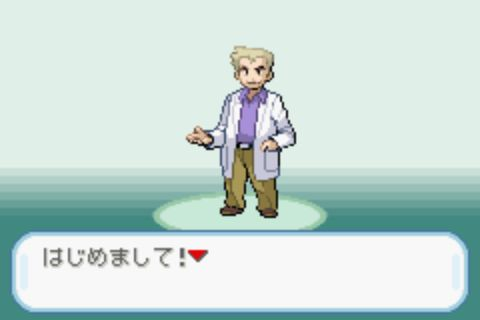
(ポケット) モンスター の せかい へ ようこそ
Welcome to the world of Pokemon!
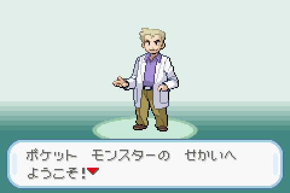
わたし の なまえ は (オーキド)
My name is Oak.
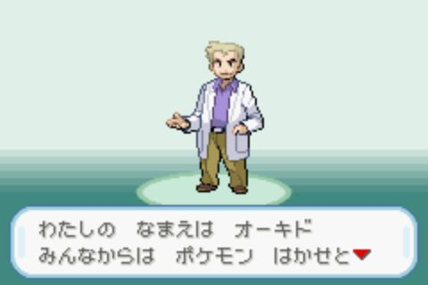
みんな から は (ポケモン) はかせ と したわれて おる よ
People affectionately refer to me as the POKEMON PROFESSOR.
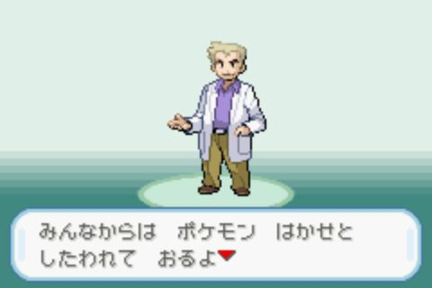
この せかい には (ポケット) モンスター と よばれる いきもの たち が いたるところ に すんでいる
This world is inhabited far and wide by creatures called Pokemon.
 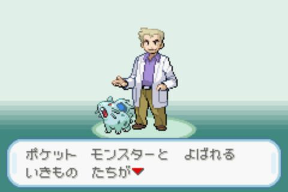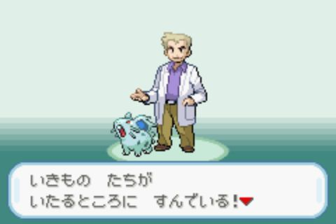
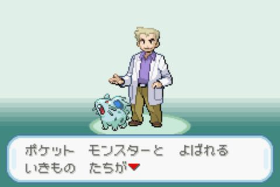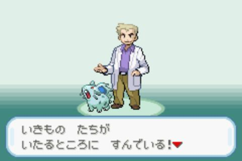
その (ポケモン) という いきもの を ひと は ペット に したり しょうぶ に つかったり
For some people, Pokemon are pets. Other use them for battling.
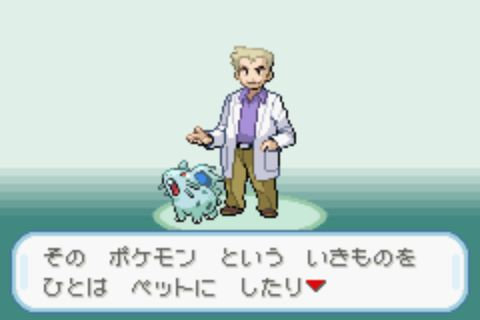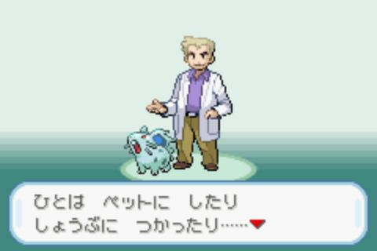
そして
As for myself…
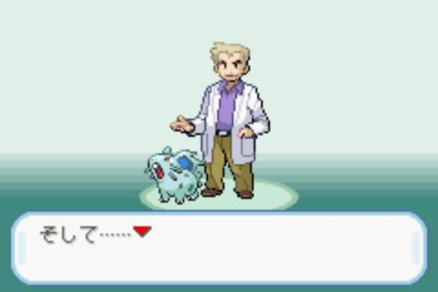
わたし は この (ポケモン) の けんきゅう を してる というわけだ
I study Pokemon as a profession.

では はじめに きみ の こと を おしえて もらおう
But first, tell me a little about yourself.
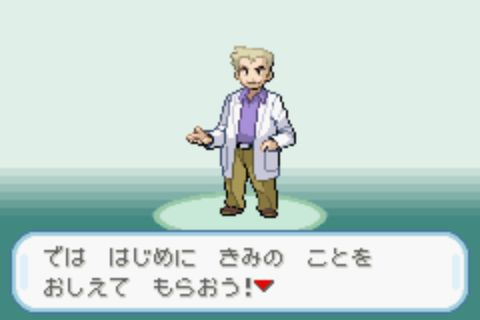
きみ は おとこのこ かな それとも おんなのこ
Now tell me. Are you a boy? Or are you a girl?
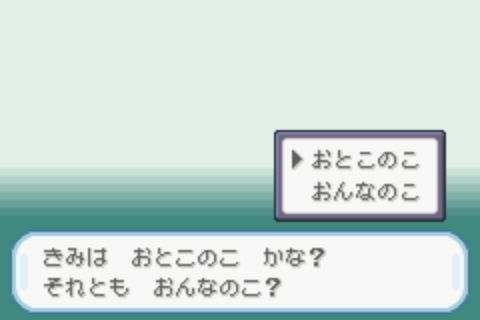
きみ の なまえ は
Let's begin with your name. Whats is it?
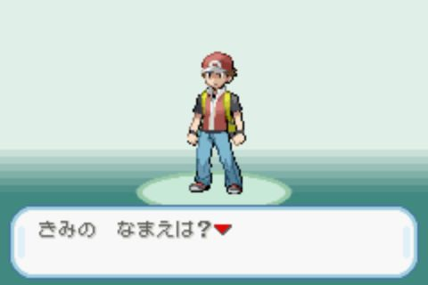
ふむ と いう んだ な
Right… So your name is RED.
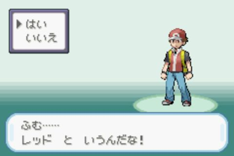
こいつ は わたし の まご
This is my grandson.

きみ の おさななじみ であり ライバル である
He's been your rival since you both were babies.
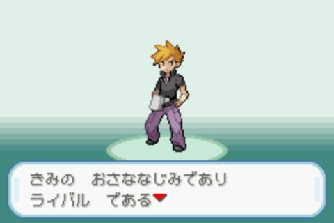
えーと なまえ は なんて いった かな
Erm, what was his name now?
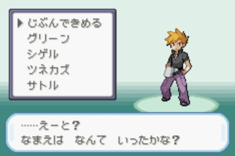
だった かな
…Er, was it GREEN?

そうだ おもいだした ぞ という なまえ だ
That's right ! I remember now! His name is GREEN!
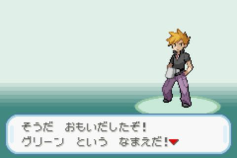
いよいよ これから きみ の ものがたり の はじまり だ
Your very own Pokemon legend is about to unfold!
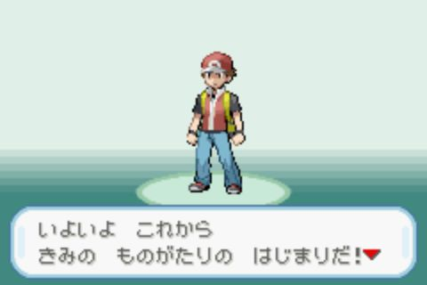
ゆめ と ぼうけん と (ポケット) モンストー の せかい へ
A world of dreams and adventures with Pokemon awaits!
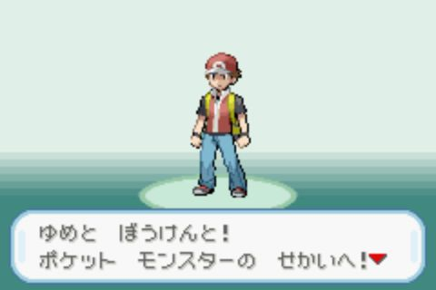
そうね おとこのこ は いつか たび に でる もの なの よ うん テレビ の はなし よ
Right. All boys leave home someday. It said so on TV.
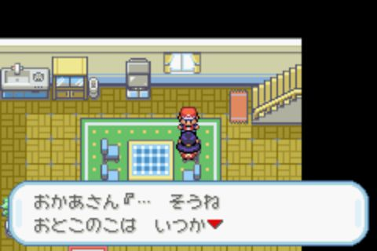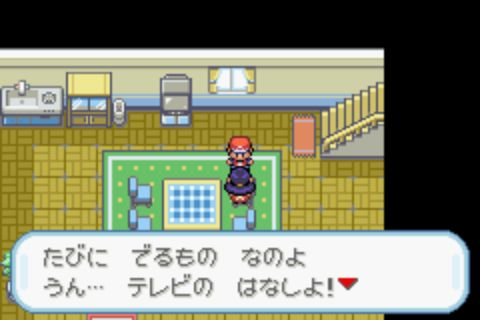
そういえば となり の (オーキド)はかせ が あなた を よんでた わよ
Oh, yes. PROF. OAK, next door, was looking for you.
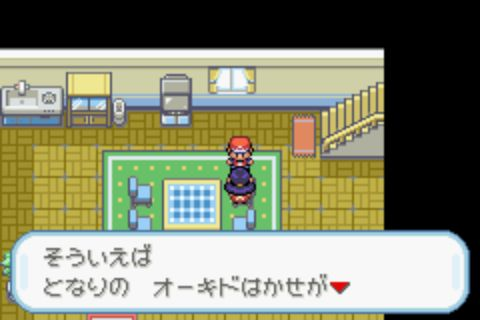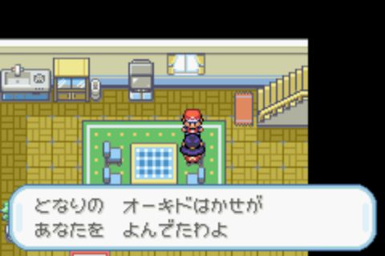
テレビ で えいが を やってる
There's a movie on TV.
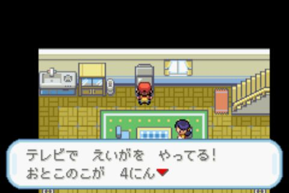
おとこのこ が にん せんろ の うえ を あるいてる
4 boys are walking on railroads tracks.
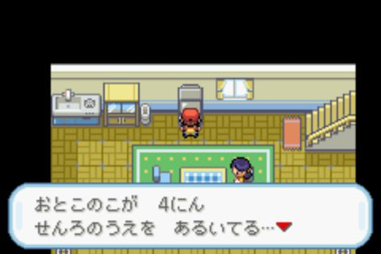
ぼく も もう いかなきゃ
I better go, too.
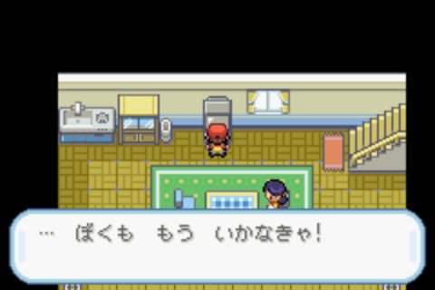
ここ は の いえ
RED's House.
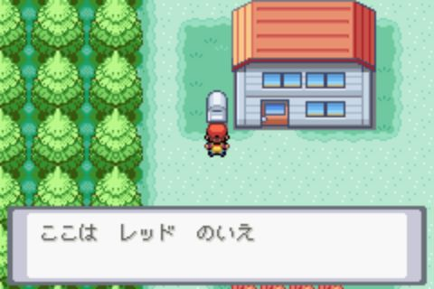
ここ は は まっしろ はじまり の いろ
PALLET TOWN Shades of your journey await.
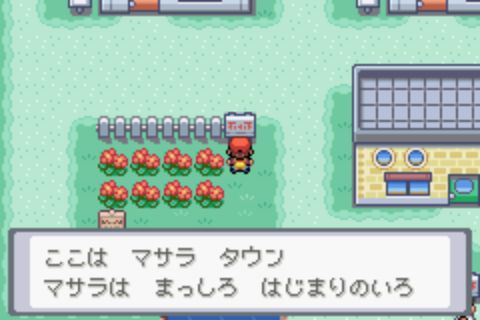
ふん そう なんだ
Hmm… Is that right…

あ みて みて
Oh! Look, look!
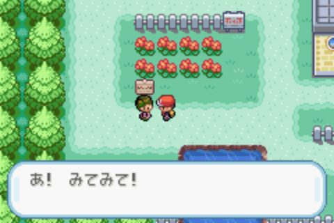
よんで よんで
Read it, read it!
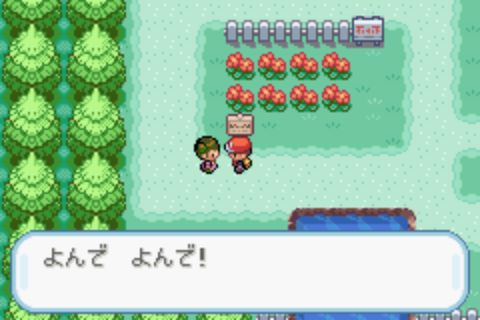
スタート ボタン を おす と メニュー が ひらきます
Press Start to open the MENU!
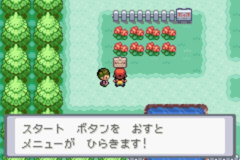
かんばん って ためになる ね
Signs are useful, aren't they?
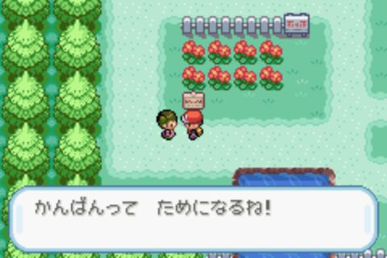
かがく の ちから って すげ
Technology is incredible!
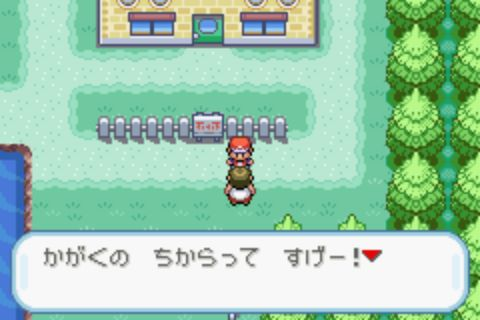
いま は パソコン つうしん で どうぐや (ポケモン) を デ－タ に して おくれる ん だと
You can now store and recall items and Pokemon as data via PC.
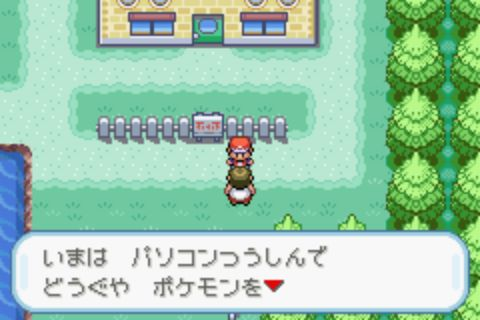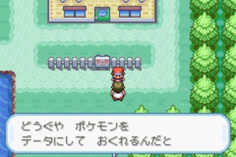
ここ は の いえ
GREEN's house
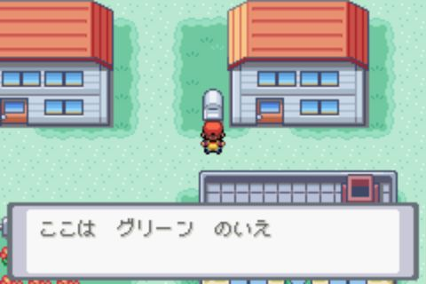
こんにちは くん
Hi, RED!

おとうと の なら おじいちゃん の けんきゅうじょ よ
My brother, GREEN, is out at Grandpa's lab.
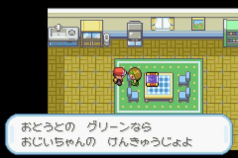
テレビ に (ポケモン) が うつっている なんだか たのしそう
There's a POKEMON on TV! It looks like it's having fun.
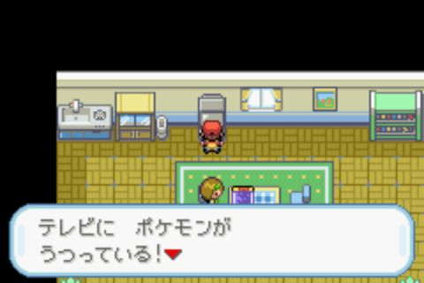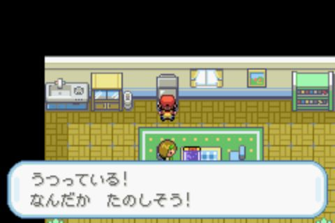
カント－ ちほう の ちず だ もらえたら うれしい
It's a big map of the KANTO region. Now this would be useful!
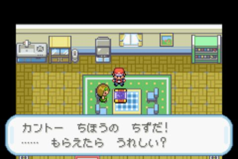
ここ は (オーキド) はかせ の (ポケモン) けんきゅうじょ
OAK POKEMON Research Lab
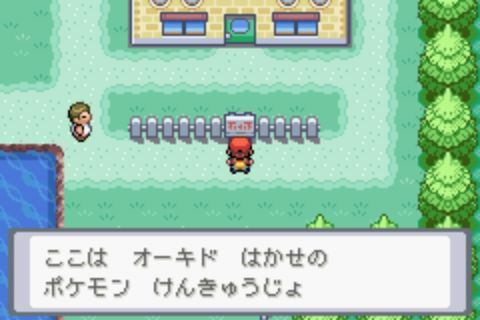
わたし も はかせ の じょしゅ として (ポケモン) を けんきゅう してます
I study Pokemon as PROF. OAK's aide.
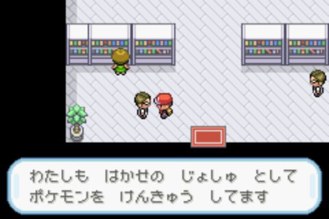
ああ みえて も (オーキド)はかせ は (ポケモン) の オーソリティ なの
PROF. OAK may not look like much, but he's the authority on POKEMON.
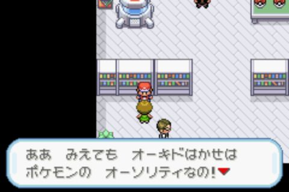
はかせ を そんけい する (ポケモン) トレーナー も おおい わよ
Many POKEMON trainers hold him in high regard.
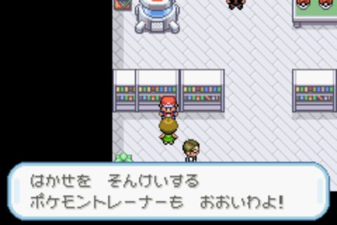
なんだ か の じいさん なら いね よ
What, it's only RED? Gramps isn't around.
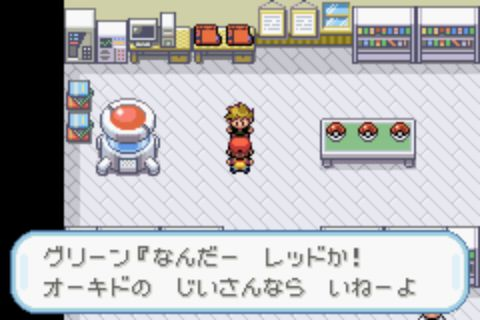
おーい まて まつ ん じゃあ
Hey! Wait! Don't go out!
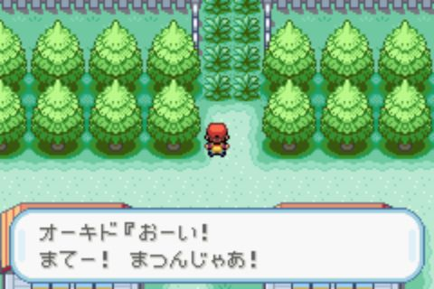
あぶない とこ だった くさむら で は やせい の (ポケモン) が とびだす
It's unsafe! Wild POKEMON live in tall grass!
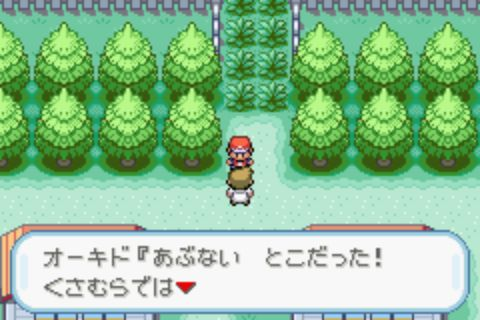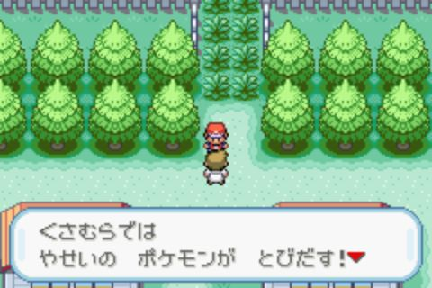
こちら も (ポケモン) を もって いれば たたかえる のだ が
You need your own POKEMON for your protection.
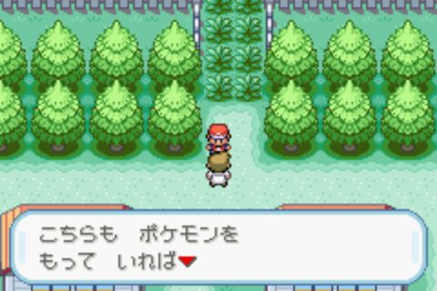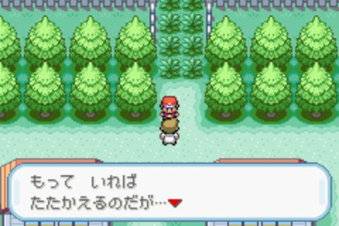
そうじゃ
I know!
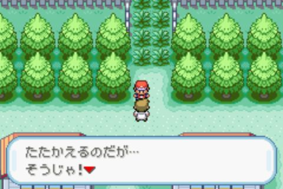
ちょっと わし に ついて きなさい
Here, come with me!

じいさん まち くたびれた ぞ
Gramps! I'm fed up with waiting!
か
GREEN? Let me think. . .
おお そうか わし が よんだ の じゃった
Oh, that's right, I told you to come!
ちょっと まって おれ
Just wait!

ほれ
Here, RED!

そこ に びき (ポケモン) が いる じゃろう
There are three POKEMON here!
モンスタ― ボ―ル の なか に (ポケモン) が いれて ある ん じゃ
The POKEMON are held inside these POKE BALLS.
むかし は わし も バリバリ の (ポケモン) トレーナー として ならした もの
When I was young, I was a serious POKEMON trainer.
おいぼれた いま は (ポケモン) も びき しか のこっとら ん が おまえ に びき やろう
But now, in my old age, I have only these three left.

ずるい じいさん おれ にも くれ よ
Hey! Gramps! No fair! What about me?
まー まあ あわてる な
Be patient, GREEN.
おまえ も すき な もの を とれ
You can have one, too!
んだ おれ は おとな だから がっつかない の さ
Heh, I don't need to be greedy like you. I'm mature!
から さきに えらばせて やる ぜ
Go ahead and choose, RED!
さあ そこ の つ の モンスタ― ボ―ル の なか に (ポケモン) が はいって いる ぞ
Now, RED. Inside those three POKE BALLS are POKEMON.
どの (ポケモン) に する
Which one will you choose for yourself?
こら どこ へ いく もどってこん か
Hey! Don't go away yet!
そうか が いい か こいつ は とても そだて やすい ぞ
I see! BULBASAUR is your choice. It's very easy to raise.
は しょくぶつ (ポケモン) が いい ん じゃ な
So, RED, you want to go with the GRASS POKEMON BULBASAUR?
ふむ が いい か そだて がいの ある (ポケモン) じゃ
Hm! SQUIRTLE is your choice. It's one worth raising.
は みず の (ポケモン) に きめる の じゃ な
So, RED, you've decided on the WATER POKEMON SQUIRTLE?
ほう が いい か じっくり そだてる と いい ぞ
Ah! CHARMENDER is your choice. You should raise it patiently.
は ほのお の (ポケモン) に する ん じゃ な
So, RED, you're claiming the FIRE POKEMON CHARMENDER?
この (ポケモン) は ほんとに げんき が いい ぞ
This POKEMON is really quite energetic!
は (オーキド)から を もらった
RED received the CHARMENDER from PROF. OAK!
に ニックネーム を つけます か
Do you want to give a nickname to this CHARMENDER ?
じゃ おれ は これ
I'll take this one, then!
は (オーキド)から を もらった
GREEN received the SQUIRTLE from PROF. OAK!
おれ の えらんだ (ポケモン) の ほう が つよそう だ ぜ
My POKEMON looks a lot tougher than yours.
そうじゃ やせい の (ポケモン) が でてきて も そいつ を たたかわせて いけば となりまち へ いける
If a wild POKEMON appears, your POKEMON can battle it. With it at your side, you should be able to reach the next town.
まて よ せっかく じいさん に (ポケモン) もらった んだ ぜ
Wait RED! Let's check out our POKEMON!
ちょっと おれ の あいて して みろ
Come on, I'll take you on!
ライバリ のが しょうぶ を しかけて きた
RIVAL GREEN would like to battle!
ライバリ の は を くりだした
RIVAL GREEN sent out SQUIRTLE!
やれやれ まったく しょうがない ヤツ じゃ のう
Oh, for Pete's sake… So pushy, as always.
(ポケモン) しょうぶ は はじめて じゃろう
You've never had a POKEMON battle before, have you?
(ポケモン) しょうぶ と は (ポケモン) トレーナー が (ポケモン) たち を たたかわせる こと を いう
A POKEMON battle is when TRAINERS pit their POKEMON against each other.
あいて (ポケモン) の を に した トレーナー が かち となる
The TRAINER that males the other TRAINER's POKEMMON faint by lowering their HP to "0," wins.
まあ はなし を きく より は たいけん しながら まなんだ ほう が おぼえる の も はやい じゃろう
But rather than talking about it, you'll learn more from experience.

さあ たたかって みなさい
Try battling and see for yourself.
あいて に ダメージ を あたえる の は しょうぶ の きほん じゃ
Inflicting damage on the foe is the key to any battle.
のうりょく を さげ させれば しょうぶ も ゆうり に なる じゃろう
Lowering the foe's stats will put you at an advantage.
じぶん の (ポケモン) を くわしく しる こと も たいせつ じゃ
It's important to get to know your POKEMON thoroughly.
これは の (ポケモン) を あらわしている もの じゃ
This is a list of your POKEMON, RED.
これ を えらべば (ポケモン) たち の のうりょく や つかえる わざ の じょうほう を しる こと が できる ぞ
Open this to check the skills and moves of your POKEMON.

どうぐ を つかいたい とき も ここ で (ポケモン) を えらぶ ん じゃ
You also choose POKEMON here if you want to use an item on one.
は つねに チェック に なれば まけて しまう から のう
Keep your eyes on you POEKMON's HP. It will faint if the HP drops to "0. "
そんな バカ な おまえ の (ポケモン) に すりゃ よかった
WHAT? Unbelievable! I picked the wrong POKEMON!
みごと じゃ
Hm! Excellent!
かつ と しょうきん が もらえ (ポケモン) も つよく なっていく
If you win, you earn prize money, and your POKEMON will grow!
おおく の トレーナー と しょうぶ して (ポケモン) を きたえて いく こと じゃ
Battle other TRAINERS and make your POKEMON strong!
よーし ほか の (ポケモン) と たたかわせて もっと もっと つよく する ぜ
Okay! I'll make my POKEMON battle to toughen it up!
じいさん それじゃ あばよ
RED! Gramps! Smell you later!
(オーキド)はかせ の (ポケモン) さいご の いっぴき だ
That's PROF. OAK's last POKEMON.
すこし やすんで いったら どうかしら
RED! You should take a quick rest.
あらあら あなた も (ポケモン) も げんき いっぱい ね
Oh good! You and your POKEMON are looking great!
それじゃ きをつけて いってらっしゃい
Take care now!
くん と しょうぶ した ん です って ね
RED, I heard you had a battle against GREEN.
みたかった わ
I wish I'd seen that!

ここ は いちばん どうろ シティ
ROUTE 1 PALLET TOWN - VIRIDIAN CITY
わたし フレンドリィ ショップ の てんいん です
Hi! I work at a POKEMON MART.
べんり な どうぐや です から シティ で ぜひ よって ください ね
It's part of a convenient chain selling all sorts of items. Please, visit us in VIRIDIAN CITY.
そうだ みほん を さしあげましょう
I know, I'll give you a sample!
どうぞ
Here you go!
を てにいれた
Obtained the potion!
(ポケモン) を つかまえる モンスタ― ボ―ル かう とき も ショップ へ いらして ください
Please come see us if you need POKE BALLS for catching POKEMON.
みち に だんさ が ある だろう
See those ledges along the road?
とび おりる のは ちょっと こわい けど
It's a bit scary, but you can jump from them.

に かえる とき は はやく かえれて いい よ
You can get back to PALLET TOWN quicker that way.
おとく な けいじばん
TRAINER TIPS
(ポケモン) には たいりょく の ほか わざ を くりだす げんき の もと パワーポイント が あります
The battle moves of POKEMON are limited by their POWER POINTs, PP.
わざ ごと の パワーポイント が なくなった とき も (ポケモン) センター で やすませて
To replenish PP, rest your tired POKEMON at a POKEMON CENTER!
きみ が こし に つけてる その モンスタ― ボ―ル は
Those POKE BALLS at your waist!
まさしく (ポケモン) だ ね
You have POKEMON!
いつでも (ポケモン) の だしいれ が じゆうに できる なんて べんり な よのなか だ ね
It's great that you can carry and use POKEMON any time, anywhere!
いもむし (ポケモン) には しゅるい いる って しらない
You want to know about the 2 kinds of caterpillar POKEMON?
は どく が ない けど には どく が ある よ
CATERPIE has no poison, but WEEDLE does.
(ポケモン) が さされない ように き を つけよう ね
Watch that you POKEMON aren't stabbed by WEEDLE's POISON STING.
それなら いい んだ
Oh, okay then!
ここ は シティ は みどり えいえん の いろ
VIRIDIAN CITY The Eternally Green Paradise
まちやがれ わし の はなし を きけ
I absolutely forbid you from going through here!
こら いくな と いってろ が
This is private property!
あらら じいちゃん こんな ところ で ねちゃって しょうがない わね
Oh Grandpa! Don't be so mean!
よい が さめる まで まつ しかない わ
I'm so sorry. He hasn't had his coffee yet.
(ポケモン) の たいりょく かいふく (ポケモン) センター
Heal your POKEMON! POKEMON CENTER
(ポケモン) センター は このさき どこ の まち に いって も ある
There's a POKEMON CENTER in every town ahead.
なん びき あずけて も ただ だし こまめ に つかう と いい よ
They charge no money, so don't be shy about healing POKEMON.
(ポケモン) センター に あずける と つかれて うごけない (ポケモン) も げんき に なる よ
POKEMON CENTERS heal your tired, hurt or fainted POKEMON. They make all POKEMON completely healthy.
すみ に ある パソコン は どうぞ ご じゆう に おつかい ください
Please feel free to use that PC in the corner.
と うけつけ の ねえちゃん が いっとった しんせつ や のう
The receptionist told me so. It's so kind of her!
ようこそ (ポケモン) センター へ
Welcome to our POKEMON CENTER!
ここ で は (ポケモン) の たいりょく かいふく を いたします
Would you like me to heal your POKEMON back to perfect health?
それでは お あずかり いたします
Okay, I'll take your POKEMON for a few seconds.
おまちどおさまでした
Thank you for waiting.
お あずかり した (ポケモン) は みんな げんき に なりました よ
We've restored your POKEMON to full health.
また の ご りよう を お まち してます
We hope to see you again !
(ポケモン) グッズ が いっぱい フレンドリィ ショップ
All your item needs fulfilled! POKEMON MART
お きみ は から きた んだ ね
Hey! You came from PALLET TOWN?
(オーキド) はかせ を しってる ね
You know PROF. OAK, right?
これ たのまれてる ん だけど わたしてくれる かい
His order came in. Can I get you take it to him?
は ショップ から お とどけ もの を あずかった
RED received OAK's PARCEL from the POKEMON MART clerk.
は お とどけもの を たいせつ な もの (ポケット) に しまった
RED put the OAK's PARCEL in the KEY ITEMS POCKET.
じゃ (オーキド) はかせ に よろしく
Okay, thanks! Please say hi to PROF. OAK for me, too.
ねえ この みせ の うれすじ は どくけし なんだ って
This shop does good business in ANTIDOTES, I've heard.
キズぐすり かわなきゃ
I've got to buy some POTIONS.
いつ (ポケモン) の たいりょく が たりなく なる か わかんない もん ね
You never know when your POKEMON will need quick healing.
ニックネーム を かんがえる こと は たのしい が むずかしい
Coming up with nicknames is fun, but it's not so easy to do.
こった ニックネーム も いい が おぼえやすい のが いちばん や な
Clever names are nice, but simple names are easier to remember.
うち の とうちゃん も (ポケモン) だい すき な の よ
My Daddy loves POKEMON too.
おお
Oh, RED!
どうだい わし の やった (ポケモン) は ほう
How is my old POKEMON?
だいぶ なついた みたい だ な
Well, it seems to be growing more attached to you.
おまえ (ポケモン) トレーナー の さいのう が ある な
You must be talented as a POKEMON TRAINER.
え わし に わたす もの が
What's that? You have something for me?
は (オーキド) はかせ に お とどけ もの を わたした
RED delivered OAK'S PARCEL.
おお これ は わし が ちゅうもん してた とくちゅう の モンスタ― ボ―ル じゃ
Ah! It's the custom POKE BALL!I had it on order.
どうも ありがと よ
Thank you!

じいさん
Gramp!
すっかり わすれてた おれ に なんか ようじ だって
I almost forgot! What did you call me for?
おお そうじゃ おまえ たち に たのみ が ある ん じゃ
Oh right! I have a request for you two.
つくえ の うえ に ある の は わし が つくった (ポケモン) ずかん
On the desk there is my invention, the POKEDEX!
みつけた (ポケモン) の データ が じどうてき に かきこまれて ページ が ふえて いく という
It automatically records data on POKEMON you've seen or caught!
たいへん ハイテク な ずかん なのじゃ
It's a hi-tech encyclopedia!
これ を おまえ たち に あずける
RED and GREEN. Take these with you.
は (オーキド) から (ポケモン) ずかん を もらった
RED got Pokédex from OAK !
(ポケモン) を ただ みつけた だけ では くわしい データ を て に いれる こと は でき ん
You can't get detailed data on POKEMON by just seeing them.
かならず つかまえなければ ならん のだ
You must catch them to obtain complete data.
は こ モンスタ― ボ―ル を もらった
RED received five POKE BALLS.
は モンスタ― ボ―ル を ボール (ポケット) に しまった
RED put the POKE BALLS in the POKE BALLS POCKET.

やせい の (ポケモン) が とびだし て きたら チャンス
When a wild POKEMON appears, it's fair game.
モンスタ― ボ―ル を ポイ と なげれば (ポケモン) を つかまえ られる
Just throw a POKE BALL at it and try to catch it!
ただし うまく とれる か どうか は わからん ぞ
This won't always work, however.

げんき な (ポケモン) は にげ やすい し うん も ある から な
A healthy POKEMON can escape. You have to be lucky!
この せかい の すべて の (ポケモン) を きろく した かんぺき な ずかん を つくる こと
To make a complete guide on all the POKEMON in the world. . .
それ が わし の ゆめ だった
That was my dream!
しかし わし も もう ジジイ
But, I'm too old!

そこまで ムリ は でき ん
I can't get the job done.
そこで おまえ たち には わし の かわり に ゆめ を はたして ほしい の じゃ
So, I want you two to fulfill my dream for me.
さあ ふたり とも さっそく しゅっぱつ してく れい
Get moving, you two.
これ は (ポケモン) の れきし に のこる いだい な しごと じゃ
This is a great undertaking in POKEMON history!
よーし じいさん ぜんぶ おれ に まかせ な
Alright Gramps! Leave it all to me!
ざんねん だが おまえ の でばん は まったく ね ぜ
RED, I hate to say it, but you won't be necessary for this.
そうだ うち の ねえちゃん から タウン マップ を かりて いこう
I know! I'll borrow a TOWN MAP from my sis!
には かさない ように ねえちゃん に いって おく から おれ んち へ きて も むだ だから な
I'll tell her not to lend you one, RED! Hahaha! Don't bother coming around to my place after this!

せかい じゅう に すんでいる (ポケモン) たち が を まって おる ぞ
POKEMON around the world wait for you, RED!
の おじいちゃん お しごと たのんだ んだ って
Grandpa asked you to run an errand ?
たいへん ね これ あげる から つかって
Gee, that's lazy of him. Here, this will help you.
は から マップ を もらった
RED recceived a TOWN MAP from DAISY.

は マップ を たいせつ な もの (ポケット) に しまった
RED put the TOWN MAP in the KEY ITEMS POCKET.

じぶん の いる ばしょ や まち の なまえ が しりたい とき タウン マップ つかう と いい わ よ
You can use the TOWN MAP to find out where you are, or check the names of places.
にんげん と おなじよう に (ポケモン) も いきてる の
Just like people, POKEMON are living things!
たいりょく が ない とき は やすませて あげて
When they get tired, please give them a rest.
ときどき シティ まで お かいもの に いきます けど
I go shopping in PEWTER CITY occasionnaly.
の もり って みち が まがい くねってる の よ
I have to take the winding trail in VIRIDIAN FOREST when I go.
うーん よっぱらってた みたい じゃ
Well, now, I've had my coffee, and that's what I need to get going!
おや その あかい はこ は なん じゃ
Hm? What is that red box you have?
(ポケモン) ずかん つくってる か なら わし から アドバイス じゃ
Ah, so you're working on your POKEDEX. Then let me give you a word of advice.

(ポケモン) を つかまえて しらべれば じどうてき に ページ が ふえていく ん じゃ よ
Whenever you catch a POKEMON, the POKEDEX automatically updates its data.
なんじゃ つかまえ かた を しらない のか
…You don't know how to catch a POKEMON?
では わし が おてほん を みせて やる かな
I suppose I had better show you then !
どう じゃ すこし は やくにたった じゃろう
There! Now tell me, that was educational, was it not?
あと は これ を もっていけ
And here, take this, too.
おしえ テレビ を てにいれた
Obtained the TEACHY TV!
は おしえ テレビ を たいせつ な もの (ポケット) に しまった
RED put the TEACHY TV in the KEY ITEMS POCKET.
わからん こと が あれば それ を みて みる と よい じゃろう
If there's something you don't understand, watch that.
(ポケモン) トレーナー の きほん を しる こと が できる ぞ
It will teach you about the basics of being a POKEMON TRAINER.
うーん よっぱらってた みたい じゃ
Well, now, I've had my coffee, and that's what I need to get going!
あたま が いたい
But I made it too strong. It gave me a headache…

ときに (ポケモン) ずかん は うまってる かな
Incidentally, are you filling your POKEDEX?
はじめ の うち は (ポケモン) を よわらせて から とる のが コツ じゃ ぞ
At first, focus on weakening the POKEMON before trying to catch it.
いつ きて も この (ポケモン) ジム は しまってる
This POKEMON GYM is always closed.
いったい どんな ヤツ が リーダー を しってる ん じゃろう か
I wonder who the LEADER is?
ジム の ドア には カギ が かかって いた
VIRIDIAN GYM's doors are locked…
とにかく (ポケモン) を つかまえ て ドンドン ふやそう
Catch POKEMON and expand your collection.
トレーナー との しょうぶ も たくさん もってる と ゆうり
The more you have, the easier it is to battle.

ここ は ばん どうろ シティ
ROUTE 2 VIRIDIAN CITY - PEWTER CITY
の もり へ いく の
Are you going to VIRIDIAN FOREST?

もり は てんねん の めいろ よ まよわない よう きをつけて
It's a natural maze in there. Be careful you don't get lost.
は ちっちゃい けど まえば の いちげき は お な どれ ない
RATTATA may be small, but don't underestimate its wicked bite.
もう つかまえた かしら
Have you caught one already?
(ポケモン) を つかまえる とき は なるべく よわらせて から
Weaken POKEMON before attempting capture!
(ポケモン) が げんき だと にげる かも しれない よ
When healthy, they may escape!
ともだち と むし (ポケモン) とり に きてる んだ
I came here with some friends to catch us some BUG POKEMON!
(ポケモン) しょうぶ したくて みんな ウズウズ してる よ
They're all itching to get into some POKEMON battles!
どく を くらったら どくけし
For poison, use ANTIDOTE!

フレンドリィ ショップ で
Get it at POKEMON MARTS!
おとく な けいじばん
TRAINER TIPS
もってる (ポケモン) が よわって きて たたかわせたく ない とき は くさむら を よけて かえろう
If your POKEMON are weak and you want to avoid battles, stay away from grassy areas!
(ポケモン) とろうとして モンスター ボール なげてたら すぐ なくなっちゃった
I was throwing POKE BALLS to catch POKEMON, and I ran out.
きみ も おおめに かって おく と いい よ
That's why you can never have too many POKE BALLS.
よーし
Hey!

きみ は (ポケモン) もってる な
You have POKEMON!
しょうぶ しよう ぜ
Come on! Let's battle'em !

まけた なんか じゃ ダメ か
No! CATERPIE can't hack it!
むし が にげる から また な
Ssh! You'll scare the bugs away. Another time, okay?
おとく な けいじばん
TRAINER TIPS
(ポケモン) ずかん は パソコン つうしん で (オーキド) はかせ に みてもらえる
Contact PROF. OAK via a PC to get your POKEDEX evaluated!
(ポケモン) トレーナー なら しょうぶ は ことわれない ぜ
Yo! You can't jam out if you're a POKEMON trainer!
あれ もう (ポケモン) が ない や
Huh? I ran out of POKEMON!
くやしい な つよい の を つかまえて こよう
That totally stinks! I'm going to catch some stronger ones!
ボク が ちいさい から って てかげん は いや だ よ
I might be little, but I won't like it if you go easy on me!
あ だめ だ
Oh, boo. Nothing went right.
おこづかい が へって しまった
I lost some of my allowance…
(ポケモン) が しんか する って きみ しってる
Did you know that POKEMON evolve?
まけちゃった
Oh! I lost!
むし (ポケモン) は しんか が はやく て たのしい よ な
Bug POKEMON evolve quickly. They're a lot of fun!

おとく な けいじばん
TRAINER TIPS
ひと の (ポケモン) は ひと の もの
You can't catch a POKEMON that belongs to someone else.
やせい の (ポケモン) に だけ モンスタ― ボ―ル を なげて つかまえよう
Throw POKE BALLS only at wild POKEMON to catch them!
ちょっと まった そんな いそいで どこ に いく
Hey, wait up! What's the hurry? Why the rush?
まいった きみ は つよい な
I give! You're good at this!
みえない ところ でも ホント は なにか おちて たり する
Sometimes, you can find stuff on the ground!
さっき おとしもの した んだ きみ も さがして みて くれる
I'm looking for the stuff I dropped! Can you help me?
の もり でぐち このさき シティ
LEAVING VIRIDIAN FOREST PEWTER CITY AHEAD

どうろ の あちこち に ほそい き が あってろ
Have you noticed the skinny trees on the roadside?
あそこ は (ポケモン) の わざ で きって とおれる そう じゃ
They can be cut down by a special POKEMON move, I hear.
しんか キャンセル つかってる
Do you know the evolution-cancel technique?
しんか しよう と する の を とちゅう で やめさせて
When a POKEMON is evolving, you can stop the process.
そのまま の かたち で そだてる テクニック よ
It's a technique for raising POKEMON the way they are.

もり や どうくつ しか いない (ポケモン) も おおい よ
Many POKEMON live only in forests and caves.
いろんな (ポケモン) とる なら しつこく さがしまわる こと だ ね
You need to be persistent and look everywhere to get different kinds!

おとく な けいじばん
TRAINER TIPS
しょうぶ の とき ちょっと だけ でも かお を だした (ポケモン) は けいけんち が もらえる
All POKEMON that appear in battle, however briefly, earn EXP Points.
ここ は シティ は はいいろ いし の いろ
PEWTER CITY A Stone Gray City
ぼく が なに やってる か わかる
Psssst! Do you know what I'm doing?
そう それ けっこう ほねがおれる よ
That's right! It's hard work!
かだん に やせい の (ポケモン) が はいらない ように まいてる の さ
I'm spraying REPEL to keep wild POKEMON out of my garden!
シティ は むしとり しょうねん みたい に ただの しゅみ で (ポケモン) やってる やつ ばかり
There aren't many serious POKEMON TRAINERS here. They're all like BUG CATCHERS, you know, just hobbyists.
しかし (ポケモン) ジム の は ちがう ぜ
But PEWTER GYM's BROCK isn't like that, not one bit.
さいきん やま で きちょう な (ポケモン) の かせき を ぬすみ まくる あくとう が います
Thieves have been stealing POKEMON fossils from MT. MOON!
あやしい ひと を みたら けいさつ まで
Please call the PEWTER POLICE if you have any information.
きみ は もう はくぶつかん けんがくした
Did you check out the MUSEUM?
やま で みつかった かせき の てんじ すごかった
Weren't those fossils from MT. MOON amazing?
え そりゃ ぜったい いった ほう が いい
Really? You absolutely have to go!
ここ だ よ けんがく には にゅうじょうりょう が いる けど
This is it, the MUSUEM. You have to pay to get in, but it's worth it.
じゃ ぼく は ここ で
See you around!
おまえ (ポケモン) トレーナー だろう
You're a trainer right?
が あいて を さがしてる
BROCK's looking for new challengers!

こっち に こい
Follow me!
かてる じしん が ある なら と たたかって みな よ
If you have the right stuff, go take on BROCK!
って つき から きた って ウワサ しってる
CLEFAIRY came from the moon. That's what the rumor is.
やま に つき の いし が おちて から みかける ように なった の
They appeared after MOON STONE fell on MT. MOON.
の うたごえ を きく と たいてい の (ポケモン) は ねむく なる
When JIGGLYPUFF sings, POKEMON get drowsy. . .

そして ぼく
. . . Me too. . . Snore. . .
なに
What!?
ロケット だん が やま で
TEAM ROCKET is at MT. MOON?
ん でんわ してる んだ じゃま しない で くれ
Huh? I'm on the phone! ! Scram!
ほしい な ぼく の と こうかん して
I really want a PIKACHU, so I'm trading my CLEFAIRY for one.
いま あそこ の やつ と (ポケモン) こうかん してる んだ よ
I'm trading POKEMON with that kid there.
なら ひき いる から こうかん して あげて も いい かな
I had two pikachu, so I figured I might as well trade one.
ねむり どく やけど まひ (ポケモン) の たいちょう が わるい と つかまえ やすい よ
POKEMON become easier to catch if it has a status problem. Sleep, poison, burn, or paralysis… Those are all effective.
でも かならず とれる わけ じゃ ない みたい
But catching POKEMON is never a sure thing!
(ポケモン) を そだてて いく と わざ を おぼえる
POKEMON learn new techniques as they grow!.
しかし ひと から おそわらなければ おぼえない わざ も ある ぞ
But some moves must be taught to them by people.
よわい (ポケモン) でも いっしょうけんめい そだてれば いい こと ある さ
Good things can happen if you raise POKEMON diligently. Even the weak ones can surprise you if you don't give up on them.
インチキ くさい おじさん から なんだか へン な (ポケモン) を かっちゃった よ
A shady old man sucked me into buying this weird fish POKEMON!
すっげー よわい の も した のに
It's totally weak and it cost P500!
うち の (ポケモン) よそ もの だから き むずかしい よ
Our POKEMON's an outsider, so it's finicky and hard to handle.
よそもの ってのは ひと と こうかん した (ポケモン) だ よ
An outsider is a POKEMON that you get in a trade.
そだつ の は はやい が ちから の ない トレーナー の いうことをきかない
It grows fast, but it may ignore an unskilled TRAINER in battle!.
バッジ さえ あれば
If only we had some BADGES. . .
かがく はくぶつかん
PEWTER MUSUEM OF SCIENCE
はい はい こども は けんがく りょう えん です
Yes, yes. It's $50 for a child's ticket.
けんがく します か
Would you like to come in?
はい たしか に えん いただきました
Right, $50! Thank you!
めずらしい こだい (ポケモン) の かせき
AERODACTYL Fossil A primitive and rare POKEMON.
ありがた や ありがた や
I should be grateful for my long life.
りゅうじん さま の ほね を おがめる とは
Never did I think I would get to see the bones of a dragon!
めずらしい こだい (ポケモン) の かせき
KABUTOPS Fossil A primitive and rare POKEMON.
わたし ね わたし ね かわいい から ほしい
I want a PIKACHU! It's so cute!
おとうさん に とってきて ね って おねがい してる の
I asked my Daddy to catch me one!
はい はい だ な こんど な
Yeah, a PIKACHU soon, I promise!
こんげつ は うちゅう はくらんかい を やってます
This month, we're running a space exhibit.
やま に らっか した ぶったい たぶん つき の いし
Meteorite that fell on MT. MOON. (MOON STONE?)
ねん 月 日
July 20, 1969!
じんるい はじめて つき に たつ
Humankind first set foot on the moon that day.
わし は あの ニュース が みたくて カラー テレビ を かった ん じゃ
I bought a color TV just so I could watch that news.
つき の いし ね そこらへん の いしころ と どこ が ちがう ん だろう
MOON STONE? What's so special about it? Looks like an ordinary rock to me.
リーダー つよくて かたい いし の おとこ
LEADER: BROCK The Rock Solid POKEMON Trainer!
(ポケモン) チャンピオン を めざして みない か
Hiya! Do you want to dream big? Do you dare to dream of becoming the POKEMON champ?
おれ は トレーナー じゃない しかし かつ ために ばっちり アドバイス できる ぜ
I'm no TRAINER, but I can tell advise you on how to win!.
な いっしょに (ポケモン) チャンピオン めざそう ぜ
Let me take you to the top!
じゃ さっそく
All right! Let's get happening!
しょうぶ の さいしょ に とびだす (ポケモン) は (ポケモン) リスト の ひだりがわ の やつ だ
The first POKEMON out in a match is at the left of the POKEMON LIST!

リスト の じゅんばん を かえれば ゆうり に なる こと も ある ため して みな よ
By changing the order of POKEMON, you may gain an advantage. Try different orders to suit your oppenent's party.
まち な
Stop right there, kid!
こども が なん の ようだ さん に ちょうせん なんて こうねん はやい んだ よ
You're ten thousand light-years from facing BROCK!
しまった
Darn!
こうねん は じかん じゃない きょり だ
Light years isn't time! It measures distance!
おまえ なかなか やる な さん ほど じゃ ない けど な
You're pretty hot, but not as hot as BROCK!
きた な おれ は (ポケモン) ジム リーダー の
Brock : So, you're here. I'm BROCK! I'm PEWTER's GYM LEADER!
おれ の かたい いし は おれ の (ポケモン) に も あらわれる
My rock-hard will power is evident even in my POKEMON.
かたくて がまん つよい
My POKEMON are all rock hard, and have true-grit determination.
そう つかう のは いわ タイプ ばっかり だ
That's right - my POKEMON are all the ROCK type!
まける と わかってて たたかう か
Fuhaha! You're going to challenge me knowing that you'll lose?
(ポケモン) トレーナー の さが だ な いい だろう
That's the TRAINER's honor that compels you to challenge me.
かかって こい
Fine then! Show me your best!
きみ を みくびって いた よう だ
I took you for granted and so I lost.
ぼく に かった あかし に (ポケモン) リーグ こうにん グレー バッジ を さずけよう
As proof of your victory, I confer on you this…the official POKEMON LEAGUE BOULDERBADGE.
は から グレー バッジ を もらった
RED received the BOULDERBADGE!
グレー バッジ を つけてる と それだけ で きみ の (ポケモン) は つよく なる
Just having the BOULDERBADGE makes your POKEMON more powerful.
フラッシュ という わざ を もっている (ポケモン) は たたかって なくても フラッシュ を つかえる ように なる
It also enables the use of the move FLASH outside of battle. Of course, a POKEMON must know the move FLASH to use it.
あと そうだ これ を きみ に あげよう
Wait! Take this with you.
わざ マシン を つかう と (ポケモン) は すぐ その わざ を おぼえる
A TM, Technical Machine, contains a technique for POKEMON!
ただし マシン は つかい すて だ
Using a TM teaches the move it contains to a POKEMON.
どの (ポケモン) に おぼえさせる か よく かんがえた ぼう が いい
A TM is good only for only one use. So, when you use one, pick the POKEMON carefully.
ところで わざ マシン には がんせき ふうじ が はいって いる
Anyways… TM39 contains ROCK TOMB.
いわ を あいて に なげつけて すばやさ を さげて しまう おもしろい わざ だ
It hurls boulders at the foe and lowers its SPEED.
この ひろい せかい では いろんな やつ が (ポケモン) で たたかい を くりひろげてる
There are all kinds of TRAINERS in this huge world of ours.
きみ には (ポケモン) トレーナー の さいのう が ある ようだ
You appear to be very gifted as a POKENON TRAINER.
シティ の ジム にも いき きみ の ちから を ためして みる と いい
So let me make a suggestion. Go to the GYM in CERULEAN and test your abilities.

さすが だ な この ちょうし で めざせ (ポケモン) チャンピオン
Just as I thought! You're POKEMON champ material!
あ くん
Oh, RED!

まにあって よかった (オーキド) はかせ の じょしゅ です
I'm glad I caught up to you. I'm PROF. OAK's AIDE.
お とどけもの を たのまれた ので お わたし します どうぞ
I've been asked to deliver this, so here you go.
は ランニングシューズ を うけとった
RED received the RUNNING SHOES from the AIDE.
は ランニングシューズ に はきかえた
RED switched shoes with the RUNNING SHOES.
ひろい ところ で ボタン を おす と はやく はしれます
Press the B Button to run. But only where there's room to run!
では わたし は けんきゅうじょ に もどります
Well, I must be going back to the LAB.
それでは
Bye-Bye!
てがみ が ついてる
There's a letter attached…
へ
Dear RED,
がんばってる に ランニングシューズ を プレゼント する わ
Here is a pair of RUNNING SHOES for my beloved challenger.
おうえん している わよ がんばって ね
Remember, I'll always cheer for you! Don't ever give up!
ママ より
From Mom
ちょっと きみ いま わたし の ほう みた でしょ
Excuse me! You looked at me, didn't you?
もう いや
You're mean!
じろじろ みる から たたかう ことに なる の よ
You shouldn't be staring if you don't want to battle!
お おまえ の もり で みかけた ぞ
Hey! I saw you in VIRIDIAN FOREST!
くやしい けど まけた
You beat me again!

この あたり は もり とは また ちがった (ポケモン) が とれる んだ
There are other kinds of POKEMON than the ones you find in forests.
たんパン うごき やすく って いい ぜ おまえ も はけば
Hi! I like shorts! They're delightfully comfy and easy to wear!
いける と おもった のに
I don't believe it!
(ポケモン) センター の パソコン きみ つかってる
Are you using a POKEMON CENTER's PC for storing your POKEMON?
つ の ボックス に (ポケモン) を ぴき まで あずけられる よ
Each box can hold up to 30 POKEMON.
きみ (ポケモン) トレーナー じゃ さっそく
Are you a trainer? Let's get with it right away!
あたらしい (ポケモン) もって くれば かてた よ
If I had new POKEMON, I would've won!
パソコン で (ポケモン) あずける ボックス が いっぱい に なったら ほか の ボックス に きりかえれば いい んだ よ
If a POKEMON BOX on the PC gets full, just switch to another BOX.
なんだ よ おまえ は たんパン はいて ない じゃ ん
Hey! You're not wearing shorts! What's wrong with you?
まけた まけた
Lost! Lost! Lost!

なつ も ふゆ も たんパン しか はかない それ が おれ の ポリシー
I always wear shorts, even in winter. That's my policy.
きみ の しせん なんか き に なる
That look you gave me. . . It's so intriguing!
もっと やさしく しょうぶ できない
Be nice!
もし たたかいたく なかったら しせん を あわせなければ いい の
You can avoid battles by not letting TRAINERS see you.
とって きた ばかり の (ポケモン) たたかわせよう かな
I'll battle you with the POKEMON I just caught.
ぼろまけ だ
Done like dinner!
やっぱり そだてた (ポケモン) の ほう が つよい んだ な
Trained POKEMON are stronger than the wild ones!
いま あんた おさなかった
Eek! Did you touch me?

もう おわり
That's it?
やま の ふもと から は ばん どうろ よ
Route 4 is at the foot of MT. MOON.
ふう このへん で ひとやすみしていこう
Whew. . . I better take a rest. . . Groan. . .


シティ から どうくつ を ぬけて きたら つかれた
That tunnel from CERULEAN takes a lot out of you!

ここ は ばん どうろ このさき やま
ROUTE 3 MT. MOON AHEAD
お それ は グレー バッジ に もらった んだ ね
Oh, wow, that's the BOULDERBADGE! You got it from BROCK, didn't you?
おれ も を みならって つよい だけ じゃなくて みんな に したわれる
BROCK is cool. He's not just tough. People like and respect him.
ジム リーダー に なりたい な
I want to become a GYM LEADER like him.
つまずいて ころんじゃった (ポケモン) のだ わ
Ouch! I tripped over a rocky POKEMON, GEODUDE!
ボール を ベルト に セット と
Okay, set six POKE BALLS in my belt…
うん つれて いける (ポケモン) は ひき まで だ
Yeah, that'll do it. At most, you can have six POKEMON with you.
おじさん ぼっちゃん あなた だけ に いい お はなし が ありまして
Man: Hello, there laddie! Have I got a deal just for you!
ひみつ の (ポケモン) が なんと たった の
I'll let you have a secret POKEMON - a MAGIKARP - for just $500!
どうだい かう かね
So, you'll buy it, am I right?
ざんねん だ ね
No? You say no? I'm only doing this as a favor to you!
は を も だして かった
RED paid an outrageous $500 and bought the MAGIKARP…
そうそう (ポケモン) の へんぴん は お ことわり だから な
Well, I don't give refunds. You knew what you were getting!
シティ の みんか おそわれる か
TEAM ROCKET attacks CERULEAN citizens. . .
しんぶん に ロケット だん の じけん が のらない ひ は ない な
Not a day goes by without TEAM ROCKET being in the news.
しんぶん だ
It's a newspaper.
(ポケモン) を たくさん つかまえて もち きれない とき は パソコン つうじん で あずける と いい よ
Sometimes, you'll have too many POKEMON with you to add any more. In that case, you should just store some using any PC.
ここ は やま どうくつ いりぐち
MT. MOON - Tunnel Entrance
の きゅうけつ こうげき に ちゅうい
Beware! ZUBAT is a bloodsucker!
あやしい やつ が どうくつ を うろついてる んだ きみ は
Suspicious men are in the cave. What about you?
やられて
You got me!
ぼく が みた やつ まちがい ない あいつ ロケット だん だ ぜ
I saw them! I'm sure they're from TEAM ROCKET!

なに よ どうくつ で はぐれた ともだち を ここ で まってる の よ
What? I'm waiting for my friends to find me here.
わたし まけた の
I lost?
この どうくつ に すごい かせき が ある って きいて きた の
I came here because I heard there are some very rare fossils here.
(ポケモン) マフィア ロケット だん は こわくて つよい のだ
We, TEAM ROCKET, are POKEMON gangsters! We strike fear with our strength!

しくじった か
I blew it!
くっそ なかま が だまっちゃ いねえ ぞ
Darn it all! My associates won't stand for this!
なんだ きゅうに こえ を かける な
What! Don't sneak up on me!
こんな (ポケモン) では ダメ か
My POKEMON won't do!

えーと どこか に つよい (ポケモン) いない かな
I have to find stronger POKEMON. Where might they be?
シティ に いく には どうくつ を ぬけない と だめ だ よ
You need to go through this cave to get to CERULEAN CITY!
ぼく の まけ だ
I lost.
は てごわい でも つかまえられれば たより に なる (ポケモン) だ よ
ZUBAT is tough! But, if you can catch one, you'll be able to count on it.
おじさん は やま の かせき を はっくつ しる んだ よ
Hi, I'm excavating for fossils here under MT. MOON.
ジム の くん が てつだって くれる こと も ある よ
Sometimes, BROCK of PEWTER GYM lends me a hand.
どうくつ の なか って いがい と ひろい の ね
Wow! It's way bigger in here than I thought!

あ まけてる
Oh! I lost it!
こんな に ひろい と どっち が でぐち か まよっちゃう
How do you get out of here? It's so big, I may get lost.
おれ たち は だいじ な しごと を してる んだ
We're pulling a big job here!
こども は おうち へ かえり な
Get lost, kid!
なかなか やる な
So, you are good…
かせき を みつけたら ばしょ だけ おしえて さっさ と かえる んだ な
If you find a fossil, give it to me and scram!
きみ も どうくつ たんけん に きた の かい
Did you come to explore the cave, too?
まける なんて カッコ わるい
Losing stinks! It's so uncool.
おんなのこ に イイ とこ みせ よう と こんな とこ まで きちゃった
I came all the way down here to show off to girls.
びっくり した なんだ こども か
WHOA! You shocked me! Oh, you're just a kid!
おどろいた
Wow! Shocked again!
こども が こんな くらい ところ を ウロウロ しちゃ いかん なあ
Kids like you shouldn't be wandering around here in the dark.
おとな の せかい に くび を つっこむ と あぶない ぜ
Little kids shouldn't be messing around with grown-ups! It could be bad news!
あたま くる ぜ
I'm steamed!
にんげん が うまれる まえ から この あたり には (ポケモン) が すんでた らしい ぜ
POKEMON lived here long before people came.

かせき は ロケット だん が みつける のだ
We, TEAM ROCKET, shall find the fossils!
ふっかつ させれば いい かねもうけ に なる
Reviving POKEMON from them will earn us huge riches!
おこった ぞ
Urgh! Now I'm mad!
おれ を おこらせた おまえ は ロケット だん の ブラック リスト に のる ぜ
You made me mad! TEAM ROCKET will blacklist you!
こら まて よ
Hey, stop!
この かせき は ぼく が みつけた んだ ふたつ とも ぼく のだ
I found these fossils! They're both mine!
わかった おまえ にも わけて やる よ
OK! I'll share!
ぼく と おまえ で かせき を こ ずつ だ ひとりじめ は ダメ だ ぞ
We'll each take one! No being greedy!
の かせき に する
Do you want the HELIX FOSSIL?
の かせき に する
Do you want the DOME FOSSIL ?
それじゃ これ は ぼく の もの だ
All right. Then this is mine!
ここから すごく とおい けど に (ポケモン) けんきゅうじょ が ある
Far away, on CINNABAR ISLAND, there's a POKEMON LAB.
かせき を よみがえらせる けんきゅう も してる らしい ぜ
They do research on regenerating fossils.
ここ は ばん どうろ やま シティ
ROUTE 4 MT. MOON - CERULAN CITY
うなる こぶし
A punch of roaring ferocity!
その はかい りょく
Packed with destructive power!
やはり メガトン パンチ こそ さいきょう の わざ だ
When the chips are down, MEGA PUNCH is the ultimate attack!
そう おもう だろう
You agree, yes ?

さあ おまえ の (ポケモン) に おしえよう
Now! Let me teach it to your POKEMON!
メガトン パンチ の ありがたみ が わかったら また くる が よい
You'll be back when you understand the worth of MEGA PUNCH.

はげしい けり
A kick of brutal ferocity!

その はかい りょく
Packed with destructive power!
やはり メガトン キック こそ さいきょう の わざ だ
When you get right down to it, MEGA KICK is the ultimate attack!
そう おもう だろう
Don't you agree ?
さあ おまえ の (ポケモン) に おしえよう
Okay! Ill teach it to your POKEMON!
メガトン キック の ありがたみ が わかったら また くる が よい
You'll come crowling back when you realize the value of MEGA KICK.
ここ は シティ
CERULEAN CITY

は みずいろ しんぴ の いろ
A Mysterious, Blue Aura Surrounds It
(ポケモン) の ずかん を つくってる
You're making an encyclopedia on POKEMON?
それ は たのしそう だ なあ
That sounds amusing.

わたし も じてんしゃ ほしい まっか な じてんしゃ
I want a bright red BICYCLE!
それで よごす の いや だから お うち に かざる わ
I'll keep it at home, so it won't get dirty!
(ポケモン) って むずかしい わ
It's so hard to control POKEMON!
(ポケモン) が いう こと きく か どうか は ひと の うでまえ しだい なんだ もの
Your POKEMON's obedience depends on your abilities as a TRAINER!

きみ も (ポケモン) やってる か あつめたり たたかったり いろいろ たいへん だ な
You're a trainer too? Collecting, battling… It's a tough life, isn't it?
あの が いなければ き を きって むこう に いける のに
If that SLOWBRO wasn't there, you could CUT down the small tree. That way, you could get to the other side.
でも どこか まわりみち すると いける らしい けど
I think there's a way around it, though.
かわいそ な ことに
The people here were robbed.
この いえ は ドロボー に はいられた んだ はんにん は わかってる ロケット だん の しわざ だ
It's obvious that TEAM ROCKET is behind this most heinous crime!
けいさつ としても ロケット だん の あくじ には ほとほと こまってる のだ
Even our POLICE FORCE has trouble with the ROCKETS!

にいちゃん (ポケモン) いっぱい もってる よ
BILL has lots of POKEMON!

めずらしい (ポケモン) も あつめてる って
He collects rare ones too!
きみ も の うわさ きいてる か
Have you heard about BILL?
みんな が あいつ を (ポケモン) マニア と よんでる よ
Everyone calls him a POKEMANIAC!
でも もの を あつめたり じまん したい きもち は だれでも おる
I think people are just jealous of BILL, though.
みんな も うらやましい んだ な
Who wouldn't want to boast about their POKEMON?
の ヤツ
That BILL!
めずらしい (ポケモン) を て に いれる ために は
I heard that he'll do whatever it takes to get rare POKEMON!
あんな こと も こんな こと も へいき で する って きいた よ
He's not above doing all sorts of things, I've heard.
お ともだち と かい へ いって もって ない (ポケモン) こうかんして もらったら たくさん あつまる わよ
Why don't you go upstairs and try trading POKEMON with your friends? You could get a lot more variety by trading.
ひと から もらった (ポケモン) は はやく そだつ し ね
The POKEMON you get in trades grow quicly, too.
くさむら も どうくつ も スイスイ ミラクル サイクル
Grass and caves handled easily! BIKE SHOP
やっぱり ママチャリ かしら
A plain city bike is good enough for me!.
マウンテン バイク に かいものカゴ に あわない もん
After all, you can't put a shopping basket on a mountain bike.
この みせ の じてんしゃ もの は いい けど たかい よ ぼく には かえない ね
These bikes are cool, but they're way expensive!
はい はい いらっしゃい ここ は ミラクル じてんしゃや
Hi! Welcome to our BIKE SHOP.
ほりだしもの ある よ かってく
Have we got just the BIKE for you!
おきゃくさん おかね が たりません な
Sorry! You can't afford it!
また よろしく ありがとうございます
Thank you! Come back again sometime!
ひま じゃ の
Sigh… Too much time, too little to do…
さいきん なにか おもしろい こと は おこって ない かのう
Is nothing entertaining happening anywhere?
むしよけ は むし どころか (ポケモン) も よって こない よ
REPEL not only keep bugs away, it also works on weak POKEMON.
つよい (ポケモン) を いちばん まえ
Put your strongest POKEMON at the left of the POKEMON list.
つまり (ポケモン) リスト の ひだりがわ に おいて おけば こうか は ばいぞう だ
If your first POKEMON is strong, REPEL's effect is boosted.
お みせ では みた こと ない けど ふしぎ な アメ しってる
Do you know about RARE CANDY? They don't sell it in shops.
(ポケモン) が いっきに そだって レベル が あがる らしい の
I think it makes POKEMON grow very quickly all of a sudden.
うち の じいさま (ポケモン) の こうかん に こってる の
My husband likes trading POKEMON.
あなた (ポケモン) ずかん あつめてる なら
You're collecting POKEMON for your POKEDEX, aren't you?
こうかん の あいて して あげて くれる かしら
Would you please trade with him?
これこれ きみ もってる
Hello there! Do you happen to have a POLIWHIRL?
わし の と こうかん しない か
Would you agree to a trade for my JYNX?
まー ムリ に とは いわん が
Well, if you don't want to …
うで が あがった (ポケモン) トレーナー だけ が もらえる (ポケモン) バッジ
Only skilled TRAINERS can collect POKEMON BADGES.
あなた も いくつか もってる ね
I see you have at least one.
その バッジ には すごい ひみつ が ある の です
Those BADGEs have amazing secrets, did you know?
では
Now then…
(ポケモン) バッジ の ひみつ どれ に ついて はなし ましょう
Which of the 8 BADGES should I describe?

すべて の (ポケモン) の こうげき りょく が すこし たかく なります
The ATTACK of all your POKEMON increases a little bit.

それから フラッシュ の わざ は たたかって いない とき でも つかえる ように なります
It also lets you use the move FLASH outside of battle.
レベル まで の (ポケモン) は ひと から もらった (ポケモン) でも おとなしく いう こと を ききます
POKEMON up to L30 will obey you.
それ いじょう レベル が たかい と うまく あつかえません
That includes even outsiders you obtain in trades.
それから いあいぎり の わざ は たたかって いない とき でも つかえる ように なります
POKEMON of higher levels will be unrully in battle, however. It also lets you use the move CUT outside of battle.
すべて の (ポケモン) の すばやさ が すこし たかく なります
The SPEED of all your POKEMON increases a little bit.
それから そらをとぶ わざ は たたかって いない とき でも つかえる ように なります
It also lets you use the move FLY outside of battle.
レベル まで の (ポケモン) は ひと から もらった (ポケモン) でも おとなしく いう こと を ききます
POKEMON up to L50 will obey you. That include even outsiders you obtain in trades.
それ いじょう レベル が たかい と うまく あつかえません
POKEMON of higher levels will be unrully in battle, however.
それから かいりき の わざ は たたかって いない とき でも つかえる ように なります
It also lets you use the move STRENGTH outside of battle.
すべて の (ポケモン) の ぼうぎょ りょく が すこし たかく なります
The DEFENSE stat of all POKEMON increases a little bit.
それから なみのり の わざ は たたかって いない とき でも つかえる ように なります
It also lets you use SURF outside of battle.
レベル まで の (ポケモン) は ひと から もらった (ポケモン) でも おとなしく いう こと を ききます
POKEMON up to L70 will obey you.
それ いじょう レベル が たかい と うまく あつかえません
POKEMON of higher levels will be unrully in battle, however.
それから いわ くだき の わざ は たたかって いない
It also lets you use the move ROCK SMASH outside of battle.

すべて の (ポケモン) の とくこう とくぼう が すこし たかく なります
The SP. ATK and SP. DEF stats of all your POKEMON rise a little bit.
それから たきのぼり の わざ は たたかって いない とき でも つかえる ように なります
It also lets you use the move WATERFALL outside of battle.
すべて の (ポケモン) は おとなしく いう こと を ききます
All POKEMON will obey you!
はなし を ききたく なったら また いらっしゃい
Come visit me any time you wish.
わし は きのみ の こな から いろいろ な くすり を つくって おる
I concoct a variety of medicine from BERRY POWDER
いい きのみ の こな は どんな くすり でも つくる こと が できる の じゃ よ
Using good BERRY POWDER, I can make any kind of medicine.
ときに おぬし きのみ に きょうみ が お あり かな
Now tell me, have you any interest in BERRIES?
ない のか
You have no interest in BERRIES?
なにごと にも きょうみ を もつ こと が たいせつ じゃ ぞ
Young one, it's important to take an interest in all sorts of things.
うそ じゃ
Why must you lie to me?
おぬし ひとつ も きのみ を もって おらん では ない か
How many BERRIES do you have? Not a one!
よう
Yo! RED!
こんな とこ うろちょろ してた のか
You're still struggling along back here?
おれ なんか つよい の すごい の いろいろ つかまえちゃって ぜっこうちょう だ ぜ
I'm doing great! I caught a bunch of strong and smart POKEMON!
どれどれ は なんか つかまえた みせて みろ よ
Here, let me see what you caught, RED!

なんだ よ ムキになっちゃって わかった わかった
Hey! Take it easy! You won already!
おれ の うち に いって めずらしい (ポケモン) たくさん みせて もらっちゃった もん ね
I went to BILL's and got him to show me his rare POKEMON.

おかげで (ポケモン) ずかん の ページ が ふえた ぜ
That added a lot of pages to my POKEDEX!
なにしろ は ゆうめい な (ポケモン) マニア だから な
After all, BILL's world famous as a POKEMANIAC!
パソコン つうしん の (ポケモン) あずかり システム あれ も が つくった んだ ぜ
He invented the POKEMON Storage System on PC, too.
おまえ も つかってる ん なら いちど おれい に いけば
Since you're using his system, you should go thank him.
おっと みちくさ くってる ばあい じゃない ぜ
Well, I better get rolling!
じゃな バイビー
Smell ya later!
そうそう
Oh, yeah, right.
おれ に いつも さき こされて おまえ も かわいい そう
I feel sorry for you. No, really. You're always plodding behind me.
だから これ を めぐんで やる ぜ
So here, I'll give you a little present as a favor.
ボイス チェッカー を てにいれた
Obtained the FAME CHECKER!
うわさ ずき の おまえ には それ が ピッタリ だ ぜ
A chatty gossip like you… That thing's perfect.
おれさま は たにん なんか に きょうみ ない から な
I don't need it because I don't give a hoot about others.
じゃな こんど こそ バイビー
All right, this time I really am gone. Smell ya!
この はし は ひと よんで ゴールデン ボール ブリッジ
People call this the NUGGET BRIDGE!
にん かちぬけば ごうか な しょうひん が もらえる
Beat us five TRAINERS and win a fabulous prize!
さて おまえ に ぬけられる かな
Think you got what it takes?
なかなか やる じゃん
Whoo! Good stuff!
ベスト を つくした んだ くい は ない
I did my best, I have no regrets!
ふたりめ は わたし これから が ほんばん よ
I'm second! Now it's serious!
しんじられない
How could I lose?

ベスト を つくした ん だから くい は ない わ
I did my best, I have no regrets!
にんめ とうじょう そう かんたん には いかない ぜ
Here's No. 3! I won't be easy!
へろへろ もう ダメ
Ow! Stomped flat!
ベスト を つくした んだ くい は ない
I did my best, I have no regrets!
にんめ は わたし よ そろそろ ばてて きた ん じゃない
I'm No. 4! Getting tired?
わたし も まけた の ね
I lost too!
ベスト を つくした んだ から くい は ない わ
I did my best, so I've no regrets!
にんめ おれ が あいて だ
OK! I'm No. 5! I'll stomp you!
たいした もん だ
Whoa! Too much!
ベスト を つくした んだ くい は ない
I did my best, I have no regrets!
おみごと にん ぬき おめでとう
Congratulations! You beat our five contest TRAINERS!
しょうひん に これ を プレゼント しよう
You just earned a fabulous prize!
ところで ここ だけ の はなし ロケット だん に はいらない
By the way, how would you like to join TEAM ROCKET?
おれ たち は (ポケモン) を わるい こと に つかおう っていう グループ だ
We're a group of professional criminals specializing in POKEMON!
はいり な よ
Want to join?
はいらない の
Are you sure?
はいって よ
Come on, join us!
はいれ よ
I'm telling you to join!
ことわる って かお して ん な
…Okay, you need convincing!
それなら むりやり いれて やる
I'll make you an offer you can't refuse!

おまえ ホント つええな
Arrgh! You are good!
それだけ の うで が あれば ロケット だん でも えらく なれる のに もったいない ぜ
With your ability, you'd become a top leader in TEAM ROCKET. Come on, think of the opportunity! Don't let this chance go to waste.

くさむら から きみ の かつやく を みてた よ
I saw your feat from the grass!
やっぱり だめ だ
I thought not!
はし を わたる のが こわくて ずっと ここ に かくれて んだ
I hid because the people on the bridge frightened me.
やま から おりて きた ばかり だが まだまだ げんき
I just got down from MT. MOON, but I've still got gas in the tank!
がんばるな
You worked hard!
くっそ どうくつ の なか で に かまれちまった
Drat! A ZUBAT bit me back in there.
この はやし は きんじょ の トレーナー が れんしゅう に くる ばしょ さ
Local TRAINERS come here to practice.
なかなか できる ね
You're decent.
(ポケモン) は ぴき だけ つよくて も にがて な タイプ には かてない たくさん そだてる ほう が いい よ
All POKEMON have weaknesses. Even the strongest ones. That's why it's best to raise POKEMON of different types.
の いえ に いく のか その まえ に しょうぶ しよう
You're going to see BILL? First, let's fight!
やる な
You're something.
シティ に かえる とき は した の ほどう を あるく と はやい
The trail below is a shortcut to CERULEAN CITY.
みなと の ごう の パーティ パパ と いった ぜ いい だろう
Dad took me to a great party on S. S. ANNE at VERMILION CITY.

くやしく ない もん
I'm not mad!
ごう は せかい の トレーナー が いっぱい いた よ
On S. S. ANNE, I saw trainers from around the world.
わたし は ピクニック ガール おれ は キャンプ ボーイ
Hi! My boyfriend is cool!
ちょうし わるい
My conditioning isn't the best…
わたし の かれ も きみ くらい つよい と いい のに
I wish my guy was as good as you!
みさき に すんでる (ポケモン) マニア の コレクション み に いこう と おもって な
I'm off to see a POKEMANIAC's collection at the cape.
やられた な
You done got me, and real good, too!
マニア という だけに いろいろ めずらしい (ポケモン) を もってる らしい
The POKEMANIAC sure lives up to his name. His collection includes many rare species of POKEMON.
ぼく は キャンプ ボーイ かのじょ は ピクニック ガール
I'm a cool guy. I've got a girlfriend!
トホホ
Aww, darn. . .
ま いっか かのじょ に なぐさめて もらおう
Oh well. My girl will cheer me up.
きみ と ぼく は たたかう よかん
I had this feeling… I knew I had to battle you!
まけそう な よかん が した よ
I'd knew I'd lose too!
こんらん を して しまったら さっさと (ポケモン) を とりかえる さくせん も いい ね
If your POKEMON gets confused, switch it out. That's a good tactic.
ともだち が かわいい (ポケモン) いっぱい もってる の くやしい わ
My friend has a cute POKEMON. I'm so jealous!

くやしく ない もん
I'm not so jealous!

やま から きた の じゃ あたし ほしい ねえ ちょうだい
You came from MT. MOON? May I have a CLEFAIRY?
ここ は みさき の こや の いえ
SEA COTTAGE BILL lives here!
パソコン の がめん に てんそう マシン と でてます
TELEPORTER is displayed on the PC Monitor.
こんち わ ぼく (ポケモン) ちゃう わい
Pokemon : Hiya! I'm a POKEMON. . . . . . No I'm not!
じっけん に しっぱい して (ポケモン) と くっついて もうた ん や
I screwed up an experiment and got combined with a POKEMON!
たすけてくれへん
So, how about it? Help me out here!
ほな オッケー や な きまり や
Please? Okay? All right!
わい が てんそう マシン に はいる さかい ぶんり プログラム を たのむ で そうや そこ の パソコン だ
Wait till I get inside the TELEPORTER. When I do, go to my PC and run the CELL Separation System.
は てんそう マシン の ぶんり を きどう した
RED initiated TELEPORTER's Cell Separator!
おおきに おおきに たすかった わ
Bill: Yeehah! Thanks, bud! I owe you one!
で あんさん わて の (ポケモン) コレクション み に きた の ちゃう ん か なんや おもろないなー ああ そや
So, did you come to see my POKEMON collection? You didn't? That's a bummer.

おれい っちゅう の も なんや けど これ やる わ
I've got to thank you. . . Oh here, maybe this'll do.
いま の みなと に ごう が きとん のや (ポケモン) トレーナー も ぎょうさん くる らしい で
Bill: That cruise ship, S. S. ANNE, is in VERMILION CITY. I hear there are lots of TRAINERS on board, too.
チケット もろた のは えんや けど パーティ とか すき や ない から な かわり に いって あそんで な
They invited me to their party, but I can't stand fancy do's. Why don't you go instead of me? Go on and have a good time.

ジム リーダー の も あこがれてる ところ な の よ
This cape is a famous date spot. MISTY, the GYM LEADER, has high hopes about this place.
やあ きみ は ひとり かい
Hello, are you here alone?
せっかく の みさき に くる なら ふたり じゃ なくちゃ
If you're out at CERULEAN's cape… Well, it should be as a couple.
リーダー おてんば にんぎょ
LEADER: MISTY The Tomboyish Mermaid!
みらい の チャンピオン
Yo! Champ in making!
アドバイス しよう
Let me give you some advice!
ここ の リーダー は みず に すむ (ポケモン) を つかう プロフェッショナル だ
The LEADER, MISTY, is a pro who uses WATER-type POKEMON.
こんな とき は しょくぶつ タイプ で みず を すいとる さくせん だ
You can drain all their water with GRASS-type POKEMON.
それ か でんき タイプ で しびれ させる の も いい ぜ
Or, you might use ELECTRIC-type POKEMON and zap them!

まず は おれ が あいて だ かかって こい
Splash! I'm first up! Let's do it!
こんな はず は ない
That can't be!
は これから まだまだ つよく なる トレーナー だ
MISTY is a TRAINER who's going to keep improving!
おまえ なんか にゃ まけたり しない よ
She won't lose to someone like you!
きみ なんて あたし で じゅうぶん が でる まく じゃない わ
What? You? I'm more than good enough for you! MISTY won't have to be bothered.
まいった わ
You overwhelmed me!
いろんな (ポケモン) トレーナー と たたかって みない と じぶん の つよさ わからない もの ね
You have to face other trainers to see how good you really are.
あのね きみ
Hi, you're a new face!
(ポケモン) そだてる にも ポリシー が ある やつ だけ が プロ に なれる の
Only those trainers who have a policy about POKEMON can turn pro.
あなた は (ポケモン) つかまえて そだてる とき なに を かんがえてる
What is your approach when you catch and train POKEMON?
わたし の ポリシー は ね みず タイプ (ポケモン) で せめて せめて せめ まくる こと よ
My policy is an all-out offensive with WATER-type POKEMON!
うーん わたし の まけ ね しょうがない
Wow! You're too much!
わたし に かった しょうこ に ブルー バッジ を あげる
All right! You can have the CASCADEBADGE to show you beat me.
ブルー バッジ が あれば レベル まで の (ポケモン) は おとなしく いう こと きく わ
The CASCADEBADGE makes all POKEMON up to L30 obey!
それが たとえ ひと から もらった (ポケモン) でも ね
That includes even outsiders you got in trades.
それと たたかって なくても いあいぎり が つかえる わ
There's more. You can now use CUT any time, even out of battle.
ほそい き を きりたおして とおれる ように なる の
You can CUT down small trees to open new pathsways.
あと これ は わたし の じまん の わざ マシン よ
You can also have my favorite TM.
わざ マシン は みず の はどう を (ポケモン) に おしえる の
TM03 teaches WATER PULSE.
みず に すむ (ポケモン) に つかって あげて
Use it on an aquatic POKEMON!
ロケット だん (ポケモン) に あな を ほらせて きっと また わるだくみ を かんがえてる の よ
TEAM ROCKET must be trying to DIG their way into no good!
ロケット だん め
Those miserable ROCKETS!
おれ の いえ を こんなに しちまいやがって
Look what they've done to my house!
ぬすまれた わざ マシン は や に じめん に あな を ほる わざ を おしえる もの だ
They stole a TM for teaching POKEMON how to DIG holes! I was going to use it on a MANKEY or a SANDSHREW…
あれ は たかかった のに
That cost me a bundle, it did!
こら ひと んち の にわ はいる な よ え おれ
Hey! Stay out! It's not your yard! Huh? Me?
ただ の とおり すがり だ ぜんぜん あやしくない よ あやしい
I'm an innocent bystander! Don't you believe me?
まいった もう しない よ みのがして くれい
Stop! I give up! I'll leave quietly!
わかった ぬすんだ もの かえす よ
Okay! I'll return the TM I stole.
.jpg)
は ロケット だん いん から わざ マシン を とりかえした
RED recovered TM28 from the ROCKET ROCKET GRUNT.
それじゃ おれ は たいさん する から ばい ばい
I better get moving! Bye!
ぬすまれた もの は もどって こない と あきらめて
I figure what's lost is lost!

うち の には きなが に そだて ながら あなほり を おしえる こと に した よ
I decided to teach DIGLETT how to DIG without a TM.
(ポケモン) には どうぐ を もたせる こと が できます
A POKEMON can be made to hold an item.
どうぐ を もたせておく と (ポケモン) が それ を つかう こと も あります
Some items can even be used by the holding POKEMON in battle.
ここから ちか つうろ シティ シティ
UNDERGROUND PATH CERULEAN CITY - VERMILION CITY
ね きみ もってる
Hi! Do you have NIDORAN (Male)?
わたし の と とりかえて くれない
Want to trade it for NIDORAN (Female)?
イヤ なら しょーがない な
That's too bad.
ちか つうろ は うすぐらい から おとしもの おおい ん です って
People often lose things in the darkness of the UNDERGROUND PATH.
この へん まで くる と あんまり むし も いない んだ
There aren't many bugs out here.
そんな バカ な
No! You're kidding!
ぼく やっぱり むし (ポケモン) すき だ し の もり に かえろう かな
I like bugs, so I'm going back to VIRIDIAN FOREST.
だれ だ ぼくら の ひそひそ ばなし を ぬすみぎき してる やつ は
Who's there? Quit listening in on us!
なぜか かてない んだ
I just can't win!
ひそ ひそ
Whisper. . . whisper. . .
ちょっと そこ の きみ ひと の たち ばなし を ぬすみぎき する もん じゃない わ
Excuse me! This is a private conversation!

やられる なんて なさけない わ
Ugh! I hate losing!
ひそ ひそ
Whisper. . . whisper. . .
おや みかけない かお だ つよい の かな
I've never seen you around! Are you good?
そりゃ ない よ
You are too good!
(ポケモン) が よわい のか ぼく の うで が わるい の か どっち だ と おもう
Are my POKEMON weak? Or, am I just bad? Which do you think?
わたし うーん つきあっても いい かな
Me? Well, OK. I'll play!
どうも うまく いかない わ
Just didn't work!
あたし も つよく なりたい の コツ を おしえて くれない かしら
I want to get stronger! What's your secret?
なんだい おれ に なんか よう
Huh? You want to talk to me?
なさけない うられた ケンカ に まけた
This stinks… I couldn't beat your challenge…
もっと たくさん (ポケモン) もって あるいてた ほう が あんしん だ な
I should bring more POKEMON with me. I'll feel safer that way.
みた かね いま みなと に ごう という ふね が きてる ぞ
Did you see the S. S. ANNE moored in the harbor?
わたし スポーツ の あと は あせ で しってる って うみ の ヘドロ から うまれた の
We're careful about pollution! Here. We've heard GRIMER multiplies in toxic sludge!
ここ は シティ は オレンジ ゆうやけ の いろ
VERMILION CITY The Port of Exquisite Sunsets
わし じぬし この しかく の ばしょ ぜんぶ わし の とち
I'm putting up a building on this plot of land. I own it all.
ここ に ビル たてよう と おもって (ポケモン) に じならし させてる
My POKEMON is tamping the land to lay the foundation.
おれ の (ポケモン) どく くらった まま あるいてたら ちからつき おった で
My POKEMON was poisoned! It fainted while we were walking!
いちど たたかった トレーナー と また しょうぶ して みたい なんて おもう こと ない ある わ よね
The urge to battle with someone you've tangled with before… Have you ever had that urge? I'm sure you have.
わたし いろんな トレーナー と なんども たたかいたくて これ くばってる の よ もらって もらって
I wanted to battle certain people again over and over, too. So, I've been giving these away. Please, take one!

バトル サーチャー を てにいれた
Obtained the VS SEEKER!
それ を つかう と もういちど しょうぶ したい トレーナー が みつかる の
Use that device and you'll find TRAINERS looking for a rematch.
じゅうでん して つかって ね
You have to charge its battery to use it, though.
おなじ レベル の (ポケモン) でも つよさ は まちまち らしい
Even if they are the same level, POKEMON can have very different stats and abilities.
それに ひと が そだてた (ポケモン) の ほう が やせい より つよい らしい
A POKEMON raised by a TRAINER is stronger than one in the wild.
たしか に レベル の たかい (ポケモン) は つよい けど
It is true that a higher-level POKEMON will be more powerful. . .
(ポケモン) の タイプ に よって にがて な あいて が ある みたい
But, all POKEMON will have weak points against specific types.
ぜったいに つよい (ポケモン) は なかなか いない みたいだ
So, there is no universally strong POKEMON.

わし は つり おやじ じゃ
I'm the FISHING GURU!
もう しぬほど つり が すき なんだ が きみ は つり すき かな
I simply Looove fishing! I can't beat to go without. Tell me, do you like to fish?
なん じゃ がっかり だ
Oh. . . That's so disappointing. . .
そうか きみ とは き が あいそう だ
Grand! I like your style. I think we can be friends.
これ あげる から きみ も つり まくりなさい よ
Take this and fish, young friend!

つり こそ さいこう の ロマン だ
Fishing is a way of life! It is like the finest poetry.
うみ でも かわ でも えんりょ なく つりざお を つかって くれい
From the seas to rivers, go out and land the big one, my friend.
や くん
Hello there, RED!
つり まくってる かね
How are the fish biting?
よのなか には (ポケモン) で わるだくみ を する やつら も いる
There are wicked people who will use POKEMON for criminal acts.
(ポケモン) を たかく うりさばいたり ときに は にんき が ない とか
TEAM ROCKET traffics in rare POKEMON, for example.
やくにたたない という りゆう で ころして しまったり
They also abandon POKEMON that they consider unpopular or useless.
そういう わるい こと ばかり する あつまり が ロケット だん さ
That's the sort of horrid people they are, TEAM ROCKET.
(ポケモン) は つかう ひと に よって よく も わるく も なる パートナー だ と おもう の
I think POKEMON can be good or bad. It depends on the TRAINER.
ね きみ もってる
Hi! Do you have SPEAROW?
イヤ なら しょうがない な
That's too bad.
こちら (ポケモン) だいすき クラブ (ポケモン) ずき だれでも かんげい
Signpost 2: POKEMON FAN CLUB All POKEMON fans welcome!
あたし の いとしい
I just love my SEEL!
だきしめる と って なく の よ
It's so lovable! It squeals when I hug it!
なに を うち の の ほう が その ばい は かわいい わい
Humph! My PIKACHU is twice as cute as that one!
うち の かいちょう は ホント (ポケモン) に うるさい の
Our Chairman is very vocal about POKEMON.
(ポケモン) だいすき クラブ の かいちょう は わし じゃ
I chair the POKEMON Fan Club!
かってる (ポケモン) は ぴき を こえ とる
I raise more than a hundred POKEMON!
(ポケモン) に かんして は ホント うるさい です ぞ
I'm very fussy when it comes to POKEMON! I surely am!
で きみ は わし の (ポケモン) じまん を きき に きた の かね
So. . . Did you come visit to hear about my POKEMON?
なんじゃ つまらん きく き に なったら きて くれい
Oh. Come back when you want to hear my story!
そうか では さっそく はじめる か
Good! Then listen up!
あの な わし の おきにいり の がな
My favorite RAPIDASH. . .
もう こんな じかん か ちょっと しゃべり すぎた わい
. . . Oops! Look at the time! I kept you too long!
わし の (ポケモン) じまん を おとなしく きいてた おれい に これ は きもち じゃ
Thanks for hearing me out! I want you to have this!
その ひきかえけん を シティ の に もっていく と タダ で じてんしゃ が もらえる
Take that BIKE VOUCHER to the BIKE SHOP in CERULEAN CITY. Exchange that for a BYCICLE free of charge!
なに わし には おきにいり の とり (ポケモン) が おる いきたい ところ へ ひとっとび じゃ
Don't worry, my FEAROW will FLY me anywhere I need to go.
だから じてんしゃ など いらん
So, I have no need a BICYCLE.
じてんしゃ は きみ が すき に のったら ええ
I hope you like cycling!
くん また わし の (ポケモン) じまん を きき に きた の かね
Hello, RED! Did you come see me about my POKEMON again?
え ちがう なん じゃ つまらん
No? Too bad!
きた の シティ まで に てがみ を とどけて もらう の さ
I'm getting my PIDGEY to fly a letter to SAFFRON in the north.
ちゃん こんど あそび に いきたい です
Dear PIPPI, I hope to see you soon.
シティ では ロケット だん の じけん が おおい そうですね
I heard SAFFRON has problems with TEAM ROCKET.
は そう でも ありません
VERMILION appears to be safe.

わたし は いろんな ひと と メール こうかん を したい から
I want to exchange MAIL with all sorts of people.
いつも ユニオン ルーム で に メール を もたせて こうかん してる の よ
I send my PIDGEY to a UNION ROOM to exchange MAIL for me.
みなと いりぐち
VERMILION HARBOR
ごう は ゆうめい な ごうか きゃくせん
S. S. ANNE is a famous luxury cruise ship.
ねん に ど だけ こう に とまる んだ
It visits VERMILION once a year.
ようこそ ごう へ
Welcome to S. S. ANNE!
ちょっと まって おきゃくさん チケット は
Excuse me, do you have a ticket?
は せんいん に ふね の チケット を みせた
RED flashes the S. S TICKET!
はい けっこう です ようこそ ごう へ
Great! Welcome to S. S. ANNE!
この ふね の お きゃく は ながたび に たいくつ してる
The passengers are restless from this long voyage.
ひま つぶし に たたかい を いどんで くる ひと も いる かも
You might be challenged by the more bored ones!

ボン ジュール わたし は この ふね の ボーイ です
Bonjour! I am le waiter on this ship!
ごよう を なんなり と お もうしつけ ください
I will be happy to serve you anything you please!
むくち な かた です ね
… … … Ah! Le strong silent type!
そこ の きみ じゃま だ よ どいた どいた
You, mon petit! We're busy here! Out of the way!
ゴミばこ に へん な きのみ が すてて あった けど なん だろう
I saw an odd BERRY in the trash. I wonder what that was?
おっほん いそがしく って めが まわる たのむ から あっち いってくれ
I'm so busy I'm getting dizzy! You have to give me room here!
わたし が ここ の シェフ です
Er-hem! Indeed I am le CHEF!
きょう の メイン ディッシュ は
Le main course is
したびらめ の ムニエル
Salmon du Salad!
しかし おきゃくさん に また さかな と いわれそう だ
Les guests may gripe it's fish again, however!
さんま の しおやき
Eels au Barbecue!
じゃ お きゃく さん に おこられる か
Les guests will mutiny, I fear.
ぎゅう フィレ の ステーキ
Prime Beef Steak!
でも ざいりょう にんずう ぶん あった かな
But, have I enough fillets du beef?
おれ は まいにち タマネギ の かわ むき だ
I only get to peel onions. . . Snivel. . .
そういえば くいしんぼう の しってる
Did you hear about SNORLAX?
あんなに よく たべて よく ねる (ポケモン) は ほかに いない よ
It's a glutton. No other POKEMON eats and sleeps the way SNORLAX can and does!
おれ は まいにち イモ の かわ むき だ
Hum-de-hum-de-ho. . . I peel spuds every day! Hum-hum. . .
わたし は たびびと たびさき で とった (ポケモン) だけ が わたし の ともだち
I am but a solitary traveler . . . My sole companions and friends are POKEMON I caught on my journey…
ともだち が
My, my friends. . .
あのね ともだち は だいじ に しなさい
You should be nice to friends!
お つかれ の ようです わね
You look tired.

ここ で すこし おやすみ に なりません
Would you like to take a short rest?
おせっかい で ごめんなさい ね あなた が おとうと に にて いた から
Oh, I'm sorry for fussin over you. You look like my little brother…

よかった みんな げんき に なりました わ
I'm glad to see that everyone is looking refreshed and chipper.
きみ は だまって はいって しつれい な こども だ
You insolent pup! How dare you barge in!

ふん れいぎ を しらん よ きみ は
Humph! You rude child! You have no sense of courtesy!

わたし は ひとりで いたい んだ でて いって くれ
I wish to be left alone! Get out!
ね ボーイ さん わたし ケーキ が たべたい の ミルフィーユ を おねがい
Waiter, I would like a cherry pie please!
ふね で かいがい りょこう なんて ゆうが で いい よ
A world cruise is so elegant yet cozy!
あたし と は ずーっと いっしょ なの
I always travel with WIGGLYTUFF. I never leave home without it.
わたし が せかい じゅう から あつめた (ポケモン) みて
I collected these POKEMON from all around the world!
いやーん せかい の (ポケモン) なのに
Oh no! I went around the world for these!
わたし の (ポケモン) こんなに しちゃって
You hurt my poor POKEMON!
(ポケモン) センター で げんき に して きて ほしい わ
I demand that you heal them at a POKEMON CENTER!
ぼく は (ポケモン) だいすき だ きみ も (ポケモン) やる の
I love POKEMON! Do you?
うわあ つよい んだ きみ って
Wow! You're great!
ね ね ぼく と ともだち に なって よ
Listen, listen! Let me be your friend, okay?
それで ね (ポケモン) こうかん とか しよう よ
Then we can trade POKEMON!
わたくし こども たち と せかい を まわって ます の おほほ
We are cruising around the world, my children and I.
わたし は こくさい けいさつ
Ssh! I'm a GLOBAL POLICE agent!
ロケット だん の わるだくみ を おって いる ところ だ
I'm on the trail of TEAM ROCKET! They're up to nothing good!
おれ の あいぼう は ごっつい ちから もち
My buddy, MACHOKE, is super strong!
すごく おもい いわ だって かいりき で うごかせる ぜ
He has enough STRENGTH to move big rocks!
そら こい ふなのり だましい に かけて かつ
Come on, then! My sailor's pride is at stake!
ふなのり だましい も おまえ には まけた
Your spirit sank me!
の みなと といえば つり おやじ は げんき かな
Did you see the FISHING GURU in VERMILION CITY?
ふなのり に ケンカ は つきもの だ やる か
You know what they say about sailors and battling!
いい しょうぶ だった
Right! Good battle, mate!
おまえ も ふなのり に ならん か
Haha! Want to be a sailor, mate?

こういう げんき な こども おれ は すき だ ぜ
I like feisty kids like you!
まけて ぜ
Argh! Lost it!
うみ の (ポケモン) は ふかい ところ に いる から つりざお で つり あげる んだ
Sea POKEMON live in deep water. You'll need a ROD to fish them up!
ふなのり だって (ポケモン) ぐらい もってる ぜ
Even us sailors have POKEMON, too!
なかなか やる じゃ ね か
OK, you're not bad.
おれ たち の (ポケモン) は うみ に でた とき に じぶん で とった もの ばかり だ ぜ
We caught all our POKEMON while out at sea.
まけたら うみ に おとす ぞ
Matey, you're walking the plank if you lose!
やられた
Argh! Beaten by a kid!
うみ に でてる と たま に (ポケモン) が ながれて くる ぜ
When we're out at sea, jellyfish POKEMON sometimes drift by.
うみ の もの とも やま の もの と も わからない しんいり さん
Hello stranger! I can't tell if you're from the seas or mountains, but stop and chat.

わたし が もってる のは うみ の もの ばかり です
All my POKEMON are from the sea.
つり のがした よ
Darn! I let that one get away!
あなた まかしたら つりびと の つきびと に しよう と おもってた
I was going to make you my assistant too!
この ふね は せかい かくち の (ポケモン) トレーナー が のってる あこがれ の ごうか きゃくせん
This ship, she is a luxury liner for TRAINERS of the world!
みなと に つく たびに しょうたい された トレーナー と こうりゅう パーティ を してます
At every port, we hold parties with invited TRAINERS.
せかい じゅう を たび してきた が ねむって ばかり の あいつ を みつけた とき は ほんと に あきれた
I've journeyed far and wide, but in all my travels I've never seen any POKEMON sleep like this one!
たしか こんな (ポケモン) だった
It was something like this!
おれ が つった じまん の さかな を みろ
Check out what I fished up!
もう からっぽ
I'm all out!
パーティ
Party?
せんじょう パーティ は もう おわった ころ じゃない かな
The cruise ship's party should be over by now.
わかもの との しょうぶ こそ じんせい の たのしみ
Competing against the young keeps me youthful.

いい しょうぶ わかがえる ようだ
Good macth! Ah, I feel young again!
ねん まえ なら わたし が かって いた だろう
15 years ago, I would have won!
にんげん を のせて みず の うえ はしる (ポケモン) みた こと ある アル よ
Ah yes, I have seen some POKEMON ferry people across the water!

ほそい き なら (ポケモン) の いあいぎり で きりたおせる じゃろう
Small trees can be chopped down using the move CUT.
ただし いあいぎり は ひでん の わざ いちど おぼえる と かんたん には わすれられぬ の じゃ
But remember this! CUT is an HM technique. Once learned, it is not easily discarded.
きみ は つよい (ポケモン) と めずらしい (ポケモン) どっち に かち を かんじる かね
Which do you like, a strong or a rare POKEMON?
やる もの だ ね
I must salute you!
わたし は めずらしくて つよい (ポケモン) が ほしい ねえ
I prefer strong and rare POKEMON.
あら せんじょう パーティ では みかけ なかった けど
I never saw you at the party.
てかげん して よ
Take it easy!
いい な つよい (ポケモン) いい な いい な
Oh, I adore your strong POKEMON! Oh, how I envy you for them!
シティ サファリ ゾーン いった こと ある かね
Have you gone to the SAFARI ZONE in FUCHSIA CITY?
あそこ は めずらしい (ポケモン) が たくさん いた
There are many kinds of rare POKEMON.
パパ も ぼく も サファリ ゾーン だいすき また あそび に いきたい な
Me and my Daddy think the SAFARI ZONE is awesome! I wish we could go there again.
せんちょう さん みた ん だけど ぐあい わるい って まっさお な かお してた よ
The CAPTAIN said he's awfully sick. He was all pale.
けっこう おおい らしい わ ふなよい する ひと
I hear many people get seasick!
せんちょう は けん の たつじん いあいぎり が とくい
Our CAPTAIN is a sword master! He's awsome at using CUT.
(ポケモン) にも その わざ を おしえる って いう ぜ
They say he even teaches CUT to POKEMON!
きもち わるい
Urf. . . I feel ill. . .
ふなよい した ので かぜ に あたってる ん です
I got seasick, so I stepped out to get some air…
おい あんた のってて ふなよい しない か
Ahoy there! Are you seasick?
ゆだん した か
I was just careless!
おれ の おやじ は (ポケモン) は しゅるい いる と いってた が おれ は それ いじょう だと おもう
My Pa said there are 100 kinds of POKEMON. I think there are more.
パーティ も そろそろ おわる し ふね の しゅっぱつ の じかん だ な
The party's over. The ship will be departing soon.
ふなのり の おれ と しょうぶ だ
Hey matey! Let's do a little jig!
つよい な びっくり した ぜ
You're impressive!
なあ この せかい に (ポケモン) は ぜんぶ で どのくらい しゅるい が ある と おもう か
How many kinds of POKEMON do you think there are in this big world?
まったく デッキ そうじ は らく じゃねえ ぜ
Whew! Scrubbing decks is hard work!
ボン ジュール
Blue: Bonjour! RED!
おやおや こんな ところで あう とは
Imagine seeing you here!
しょうたい されてた っけ
RED, were you really invited?
それで (ポケモン) ずかん の データ は あつまった か
So how's your POKEDEX coming?
おれ なんか もう しゅるい つかまえた ぜ
I already caught 40 kinds, pal!
みち いっぽん ちがう だけで とれる (ポケモン) も ちがう ぜ
Different kinds are everywhere!
ちゃんと くさむら はいって さがして みろ
Crawl around in grassy areas, and look hard for them.
ふん
Humph!
とにかく (ポケモン) は そこそこ そだててる よう だ な
At least you're raising your POKEMON!
いあいぎり の めいじん が ふね に のってる って いう なら よ
I heard there was a CUT master on board.
あって みたら これ が ただの ふなよい おやじ
But, he was just a seasick old man!
でも この わざ が また つかえる んだ よ な
CUT itself is really useful. Yup, it'll be handy.
おまえ も あって みる と いい ぜ じゃ あばよ
You should go see him, too. Smell ya!

ふなよい で すっかり ダウン だ くるしい
Ooargh. . . I feel hideous. . . Urrp! Seasick. . .
は せんちょう の せなか を さすって あげた
RED rubbed the CAPTAIN's back!
ありがとう だいぶ ラク に なった みたいだ
Captain : Whew! Thank you! I'm feeling much better.
なになに なんだ ひでん の わざ を み に きた の か
You want to see my hidden CUT technique?
げんき な とき なら じまん の いあいぎり を みせる んだ がなあ
I could show you my prized CUT technique if I weren't so ill…
そうだ かわり に これ を あげよう
I know! You can have this! This HIDDEN MACHINE!
これ を きみ の (ポケモン) に おしえれば たたかって いない とき でも いつでも いあいぎり が みられる
Teach CUT to your POKEMON, and you can see it CUT anytime!

いあいぎり を つかえば ほそい き も きれる
Using CUT, you can chop down small trees.

ためし に シティ に ある き でも きって みた まえ
Why not try it with the trees around VERMILION CITY?
ふう らく に なった し そろそろ じかん だ
Captain : Whew! Now that I'm not sick any more, I guess it's time.
もうすぐ は しゅっぱつ する よ
The S. S ANNE will set sail soon!
また に くる とき まで ごきげんよう
Farewell, until our return to VERMILION CITY!
みらい の チャンピオン
Yo! Champ in making!
しょうさ の あだな は イナズマ アメリカン
LT. SURGE has a nickname. People refer to him as the Lightning American!
でんき (ポケモン) つかわせたら アメリカ ナンバー らしい ぜ
He's an expert on electric POKEMON!
ひこう タイプ みず タイプ は あいしょう が わるい ぜ
BIRD/WATER-type POKEMON match poorly against the ELECTRIC type.
マヒ させられない よう きをつけ な
Beware of paralysis, too. LT. SURGE is very cautious.
それと は ようじん ぶかい かれ の へや は ロック されて かんたん には はいれない ぜ
He's locked himself in, so it won't be easy getting to him.
いくら (ポケモン) うまい から って ここ は こども が くる ところ じゃない ぜ
This is no place for kids! Not even if you're good!


おどろき だ
Wow! Surprised me!
しょうさ は じぶん で トラップ を つくって へや を じょう ロック してる ぜ セント を あげよう
LT SURGE installed the traps in the GYM himself. He set up double locks everywhere. Let me give you a hint.
だい ロック を はずしたら だい ロック は すぐ そば だ ふたつ の ロック は となりあわせ に ある ぜ
When you open the 1st lock, the 2nd lock is right next to it!
おれ は たいりょく ない けど でんき の あつかい を かわれて ここ に きた のだ
I'm a lightweight, but I'm good with electricity! That's why I joined this GYM.
しびれた
Fried!
わかった いう よ
OK, I'll talk!
は へや の スイッチ を なにか の そこ に かくした と いってた な
LT. SURGE said he hid door switches inside something!
ぐんたい に いた ころ は しょうさ に ビシビシ きたえられた ぜ
When I was in the Army, LT. SURGE was my strict CO. He was a hard taskmaster.
うむ なかなか の うでまえ だ
Stop! You're very good!
へや が あかない のか
It's not easy opening that door.
の ようじん ぶか さ は ぐんたい でも ゆうめい だった ぜ
LT. SURGE was always famous for his cautious nature in the Army.
ヘイ プア リトル キッド
Hey, kid! What do you think you're doing here?
ユー の ハンパ な パワー では せんじょう じゃ いき のこれない ネ
You won't live long in combat! Not with your puny power!
ミー は せんそう で エレクトリック (ポケモン) つかって いき のびた ネ
I tell you, kid, electric POKEMON saved me during the war!
みんな ビリビリ シビレて うごけ ナーイ
They zapped my enemies into paralysis!
ユー も おなじ みち たどる ちがい ナーイ
The same as I'll do to you!
オ ノー
Now that's a shocker!
ユー の つよさ トゥルース つまり ほんもの ネ
You're the real deal, kid!
オッケー オレンジ バッジ やる ヨ
Fine, then, take the THUNDERBADGE!
オレンジ バッジ もってる だけで ユー の (ポケモン) スピード アップ
The THUNDERBADGE cranks up your POKEMON's SPEED!
アンド そらをとぶ わざ は ファイト ない とき も つかえる ように なる ヨ
It also lets your POKEMON FLY lightening-quick anytime, kid!
ユー は スペシャル これ は ミー の きもち ネ
You're special, kid! Take this!
わざ マシン は でんき ビリビリ でんげき は エレクトリック (ポケモン) に おしえて くだサイ
TM24 contains SHOCK WAVE! Teach it to an electric POKEMON!
ヘイ それから ユー に アドバイス
A little word of advice, kid!
エレクトリック パワー ビリビリ つよい ネ
Electricity is sure powerful!
でも じめん タイプ には パワー すいとられて しまって ぜんぜん きかない ヨ
But, it's useless against ground-type POKEMON!
お くん げんき に やってきます か
Oh, hello, RED! How are you doing?
ぼく です よ (オーキド) はかせ の じょしゅ です
It's me, one of PROF. OAK's AIDES.
ほか の じょしゅ には あいました
Did you meet the other AIDE?
はかせ から くん へ の おくりもの を もって でかけた はず なんだ けど
He had a package from PROF. OAK for you, RED.
ばん どうろ あたり で くん を さがす って いってた から その へん かな
He said he'd look for you around ROUTE 2, RED.
もし ばん どうろ に いったら さがして みて よ
If you're in the ROUTE 2 area, please look for him.
おしらせ の チラシ だ
NOTICE
さいきん ばん どうろ に いねむり (ポケモン) が しゅつぼつ とおれない こと が あります
ROUTE 12 may be blocked off by a sleeping POKEMON.
そういう とき へ いく かた は トンネル を とおって ください
Detour through ROCK TUNNEL to LAVENDER TOWN.
けいさつ より
VERMILION POLICE
の あな
DIGLETT'S CAVE
たまげた もん だ この ながい どうくつ が ほった ん だと
Well, isn't this a surprise! DIGLETT dug this long tunnel!
シティ まで つながってる そうだ
It goes right to VIRIDIAN CITY, they tell me.
トンネル に いった けど まっくら で こわい よ
I went inside ROCK TUNNEL, but it's pitch-black and scary in there.

(ポケモン) に フラッシュ で あかるく させれば な
If I could get a POKEMON to use FLASH and light it up…
(ポケモン) の ひんし しょうたい は たたかう ばんき が ない だけ で
A fainted POKEMON just has no energy left to battle.
いあいぎり など の わざ は いつもの ように つかえる
It can still use moves like CUT outside of battle.
おれ さがしてる んだ
I'm looking for the POKEMON ABRA!
きみ もって たら と こうかん しよう ぜ
Wanna trade one for my MR. MIME?
そんな まあ いつか
Awww! Oh well. . .
(ポケモン) が フラッシュ を おぼえたら イワヤマ トンネル が とおれる ね
Once a POKEMON learns FLASH, you can get through ROCK TUNNEL.

ぼく おぼえてます ほら (オーキド) はかせ の じょしゅ です
Hi! Remember me? I'm one of PROF. OAK's AIDES.
(ポケモン) ずかん が しゅるい あつまってる よう なら ひでん マシン を わたす よう はかせ に いわれました
If your POKEDEX has complete data on 10 species, I'm supposed to give you a reward. PROF. OAK entrusted me with HM05 for you.
それでは さっそく くん
So, RED, let me ask you.
つかまえた (ポケモン) は しゅるい より おおい かな
Have you gathered data on at least ten kinds of POKEMON?
そうです か
. . . Oh. I see.
しゅるい に たりない なら ひでん マシン は また こんど です ね
When you get 10 kinds of POKEMON, come back for HM05.
なるほど つかまえた (ポケモン) は しゅるい です ね
Great! You have caught or owned 16 kinds of POKEMON!
それでは これ を お わたし します
Congratulations! Here you go!
ひでん の フラッシュ で どんなに くらい ばしょ でも バッチリ あかるく なります
HM05 contains the hidden move FLASH. FLASH lights up even the darkest of caves and dungeons.

(ポケモン) に ずる は なし だ よ せいせいどうどう やろう
Let's go, but don't cheat!
ありゃ こんな はず じゃ
Huh? That's not right!
せいせいどうどう やった こうかい は しない よ
I did my best! I have no regrets!

かつ か まける か しょうぶ
Win, lose or draw!
きょう は ついて ない
Atcha! Didn't go my way!
(ポケモン) は じんせい だ じんせい は ギャンブル だ
POKEMON is life! And to live is to play games!
だいじ に そだてた (ポケモン) そろそろ たたかわせて みよう
I raised my POKEMON carefully. They should be ready by now!
バイバイ ありがとう さようなら
Bye-bye! Thank you, and good-bye!
もっと つよい の さがして こよう
Tch… I better go find stronger ones!
ぼく は (ポケモン) トレーナー に なった ばかり だ でも かつ じしん ある よ
I just became a trainer. But, I think I can win.
まける なんて まだ (ポケモン) そだって ない のか な
My POKEMON couldn't win… Haven't they grown enough?
なんだ よ おまえ なんか あっちいけ よ
What now? Leave me alone!
しょうぶ ごと が すき で よ だから あいて は えらばねえ
Competition! I can't get enough!
くっそ かてる と ふんだ が だめ か
I had a chance!
まけ を こわがって たら (ポケモン) は できねえ もん な
You can't be a coward in the world of POKEMON!
こんちは おたく の でんき あんぜん です か
Careful! I'm laying down some cables!
おじさん を まかす なんて すごい な
That was electric!
ひとこと いい わすれてた でんき は たいせつに
Spread the word to save energy!
わたし は いままで かった こと が ない
I have never won before…
やっぱり まけた
I saw this coming. . .
しょうぶ は とき の うん だ そう おもわない と おちこむ よ
I was unlucky, as always.
でんき の けし わすれ して ない か
Watch out for live wires!
まいった さいきん の こども は つよい
Whoa! You spark plug!
さて と でんき こうじ に いかなくちゃ
Well, better get back to work.
わたし は いままで まけた こと が ない ぞ
Fwahaha! I have never lost!

はじめて まけた
My first loss!
しょうぶ は とき の うん だ そう おもわない と おちこむ よ
You were just lucky, that's all.
ぼく は クラス で いちばん つよい まいあさ れんしょう も してる んだ
I'm the best in my class. I train every morning.
もっと つよい (ポケモン) でなきゃ だめ だ
Darn! My POKEMON need to be stronger!
たまに やま から おりてくる ふとった (ポケモン)
There's a fat POKEMON that comes down from the mountains.

おれ つかまえたら つよい ん じゃ ない かな
I bet it'd be strong if you can catch it.

それ は じてんしゃ ひきかえけん
Oh, that's… A BIKE VOUCHER!
わかりました ささっと これ を どうぞ
Okay! Here you go!
また よろしく ありがとう ございました
Thank you! Come back again sometime!

あら (ポケモン) もってる わね カモ だ わ
You have POKEMON with you! You're mine!
あら つよい わね
You deceived me!
この さき の トンネル なか は まっくら だから フラッシュ が ないと すすめない わ
The tunnel coming up is pitch-black inside. You'll need FLASH to get through there.
ちょうど いい たいくつ してた とこ だ
Bwahaha! Great! I was bored, eh!
まだまだ と おもったら もう (ポケモン) が ない
Keep it coming, eh! Oh wait. I'm out of POKEMON!

やま おとこ に びびらず に たたかう とは たいした もんだ
You sure had guts standing up to me there, eh?
ここ は ばん どうろ トンネル
ROUTE 9 CERULEAN CITY - ROCK TUNNEL

だれ だ よさげ な (ポケモン) もって ふらふら あるいてる おまえ は
Who's that walking there with those good-looking POKEMON?
まけ よった
Out like a light!
くやしくて なみだ も で ん
Keep walking!
まいあさ はやおき して そだてた さなぎ が やっと かえった んだ
I got up early every day to raise my POKEMON from cocoons!
ぼく の はやおき は いったい なん だった んだ
WHAT? What a total waste of time!
つよく なる には むし (ポケモン) の ほか も さがさない と ダメ だ な
I have to collect more than bugs to get stronger. . .
おいら の かわいい むし (ポケモン) それいけ
Go, my super bug POKEMON!
おいら の むし
My bugs. . .
むし (ポケモン) の よさ が わからない やつ は むし
If you don't like bug POKEMON, you bug me!
トンネル ぬけて に いく ところ なんだ けど
I'm taking the ROCK TUNNEL to go to LAVENDER. . .
どうも だめ だ な
Can't measure up!
なんだい きみ も イワヤマ トンネル いく のか
Are you off to ROCK TUNNEL too?
かかって こい
Hahahaha! Bring it on!
ありゃ まけた よう だ な
Hahahaha! You beat me fair!
やま おとこ は こころ が ひろい から まけて も わらってる のだ
Hahahaha! Us hearty guys always laugh!

げんき な こども だ いっちょう やってる か
Hahaha! Aren't you a little toughie!
おっとっと
What's that?
げんき で けっこう
Hahaha! Kids should be tough!
てかげん は なし ね
Don't you dare patronize me!
だめ かなわない わ
No! You're too much!
あなた きっと (ポケモン) の さいのう ある の よ がんばって ね
You're obviously talented! Good luck to you!
わたし も たまに (ポケモン) ジム に いく の まけちゃう けど ね
I've been to a POKEMON GYM a few times. …But I always lose.
とっくん した のに
Ohh! After all my training!
ねえ こんな やま みち に マニア が いる の よ みた
I noticed some POKEMANIACs prowling around. Can you imagine? Them? Up here in the mountains?
つかいみち ない から きん の たま を うったら で うれた
A NUGGET is totally useless. So I sold it for $5000.
(ポケモン) は タイプ に よって ゆうり に たたかえる あいて と にがて な あいて が いる のだ
The types of POKEMON match up differently with each other. Every type is stronger than some types and weaker than others.
で ゆうれい (ポケモン) が でる って みんな さわいでる よ
I heard that GHOSTs haunt LAVENDER TOWN!
(ポケモン) ファイト レディー ゴー
POKEMON fight! Ready, go!
やぶれた のか
Game over!
でも とって かえろう かな
Oh well, I'll get a ZUBAT as I go!
いえ に いる とき は (ポケモン) の イラスト とか かいてる
I draw illustrations of POKEMON when I'm home.
ぼく くたびれた
Whew! I'm exhausted!
ぼく は たたかう の むいて ない な かえって イラスト でも かいて よう
I'm an artist, not a fighter. I'll go home to draw.
たたかっても いい けど この あたり には あまり きた こと ない の
I don't often come here, but I will battle you.
まけ ちゃった
Oh! I lost!
ちっちゃい (ポケモン) が すき おっきい のは こわい から いや
I like tiny POKEMON. Big ones are too scary!
あの (ポケモン) コスプレ しってます
Um. . . Do you now about POKEMON cosplay?
しょうがない です ね
Well, that's that.
コスプレ って いう の は の きぐるみ とか つくって (ポケモン) に なりきる ん です
POKEMON cosplay is dressing up as POKEMON for fun. CLEFAIRY is a favorite.
おれ の (ポケモン) テクニック で ひーひー いわせる ぜ
My POKEMON techniques will leave you crying!

まいった おまえ の ほう が テクニシャン だ
I give! You're a better technician!
そうだ な やま の (ポケモン) には いわ タイプ が おおい ぞ
In mountains, you'll often find ROCK-type POKEMON.
よし どーん と ぶつかって こい
Hit me with your best shot!

どーん と こっち が やられた
Fired away!
おれ も おまえ に まけない (ポケモン) を そだてて おく ぜ
I'll raise my POKEMON to beat yours, kid!
この ながい トンネル を ぬける つもり か
This tunnel goes a long way, kid!
おいら の まけ だ
Doh! You won!
たまに でる は レベル が たかい と しめつけてくる き を つけ な よ
Watch for ONIX. They appear only occasionally. High-level ones can put the squeeze on you!
えーと みち に まよった かな
Hmm. Maybe I'm lost in here. . .
たたかってる ばあい じゃなかった でぐち は どっち だっけ
Ease up! What am I doing? Which way is out?

ばん どうろ に (ポケモン) が ねててろ おれ も こまって まわりみち だ
That sleeping POKEMON on Route 12 forced me to take this detour.
.jpg)
おれ は やま に すんで ながい よそもの に でかい つら は させ ん
Outsiders like you need to show me some respect!

やるな
I give!

おまえ みこみ が ある やま おとこ に ならん か
You're talented enough to hike!
やま で まよわない ために は めじるし の こえだ を おって あるく と いい の よ
Do you know how you can avoid getting lost in the mountains? You can bend twigs as trail markers.
がんばった のに
Ohhh! I did my best!
まけちゃった し きょう は おうち に かえろう
I want to go home!
こんな いわやま に いたら いわ が うえ から ゴロゴロ おちて きて
When you're up on a rocky mountain like this, rockslides are a threat.
って なったら こわい な
Can you imagine ? Boulders tumbling down on you? That'd be, like, waaaaaaaaaah! Total terror!
きみ は へいき そうな かお してる ね いわ なだれ つかって みる
You don't' seem to be scared. Want to try using ROCK SLIDE?
やっぱ こわい の
Oh, so you are scared after all.
おれ の パワー に かてる か
Hahaha! Can you beat my power?
おっとっと パワー まけ した か
Oops! Outmuscled!
パワー に こだわる のは かんがえ ながら たたかう のが にがて だから だ
I go for power because I hate thinking!

(ポケモン) ずかん つくってる くっそ ぼく も やりたい
You have a POKEDEX? I want one too!
もう くやしい
Shoot! I'm so jealous!
だから さ (ポケモン) ずかん かんせい したら ぼく に くれない
When you finish your POKEDEX, can I have it?
びっくり うすぐらい からって そんなに ちかづかないで
Eek! Don't try anything funny in the dark!
くらくて よく みえない んだ もん
It was too dark!
トンネル にも (ポケモン) いる の ね さっき が いた わ
I saw a MACHOP in this tunnel!
それ は (ポケモン) さっそく はじめましょう
You have POKEMON! Let's start!
でなおして くる わ
You play hard!
エキサイト して あせ かいちゃった わ
Whew! I'm all sweaty now!
(ポケモン) さがしに きて こんな とこ まで きちゃった
I came this far for wild POKEMON.
もう (ポケモン) ない わ
I'm out of POKEMON!
かわいい かお して けっこう つよい じゃない
You looked cute and harmless! Was I ever wrong!
やまみち ひさしぶりに あるいて ひんけつ ぎみ なの
I'm feeling a bit faint. I haven't hiked in some time.

たいちょう が わるい から しかた ない わ
I'm too tired. I wasn't up for it.
やま の (ポケモン) って ごつい の ばっかり ピンク の はな がち の (ポケモン) が いれば いい のに
The POKEMON here in the mountains are so chunky… I wish there were pink POKEMON with a floral pattern!
じつは わらい キノコ たべて しまって な
Ha-haha! Not laughing! Ha-hay fever! Haha-ha-choo!
やま の くうき は うまい
Ah! This mountain air is delicious!
まけた わい
That cleared my head!
やま の くうき すい すぎて はら が ふくれた
I feel bloated on mountain air!
おたく ぼく の (ポケモン) みる
Hi kid, want to see my POKEMON?
だいじ な (ポケモン) ちゃん が
Oh no! My POKEMON!
ぼく より つよい ヤツ は キライ だ もん
I don't like you. I don't like anyone better than me!
さいきん (ポケモン) タワー に ゆうれい が でる らしい んだ
GHOSTs appeared in POKEMON TOWER.
どうも ロケット だん に ころされた (ポケモン) の ゆうれい らしい
I think they're the spirits of POKEMON that the ROCKETs killed.
ここ は (ポケモン) の お はか で ゆうめい な タウン だ
This town is known as the grave site of POKEMON.
かって いた (ポケモン) が しんだ とき (ポケモン) タワー に もっていって めいふく を いのる の さ
Memorial services are held in POKEMON TOWER.
あなた ゆうれい は いる と おもう
Do you believe in GHOSTs?
そう よね
Hahaha, I guess not.

あなた の みぎかた に しろい て が おかれてる なんて あたし の みまちがい よね
That white hand on your shoulder… I'm just imagining it.

ふん しんじてる ひと って いる んだ
Really? So there are believers. . .
ここ は は むらさき とうとい いろ
LAVENDER TOWN The Noble Purple Town
の おかあさん だ ロケット だん から にげる ところ わたし も みた わ
I saw CUBONE's mother trying to escape from TEAM ROCKET.
にげる とちゅう で ころ された わ
She was killed trying to get away…
の しゅぞく は ほね を かぶってる だろう
You know how the CUBONE species wear skulls, right?
あれ が たかく うれる ん だって
People will pay a lot for one.
ロケット だん の れんちゅう おかね もうけ の ため なら どんな わるい こと でも やる の さ
TEAM ROCKET will do anything for the sake of money! There is no job too dirty, no deed too heinous, no crime too wicked!

ここ は あい の ボランティア (ポケモン) ハウス
LAVENDER VOLUNTEER POKEMON HOUSE
ごうか しょうひん が あたる げっかん (ポケモン) の とも ビッグ プレゼント
POKEMON FAN MAGAZINE Monthly Grand Prize Drawing!
おうぼ ほうほう は
The application form is. . .
あら きりとって ある けんしょう が すき なの かな
Gone! It's been clipped out! Someone must have applied already.
おかしい な ろうじん が いない ぞ どこ に いった の かな
That's odd, MR. FUJI isn't here. Where'd he go?
ここ は もともと じいちゃん の おうち なの
This is really MR. FUJI's house.
じいちゃん やさしい の よ
He's really kind!
すてられたり かえなく なった (ポケモン) を あずかって せわ してる の
He looks after abandoned and orphaned POKEMON!
あったかい (ポケモン) って だっこ する と あったかい ん だよね
It's so warm! POKEMON are so nice to hug.
わたし ロケット だん を ゆるさない わ
Those horrible ROCKETS! They deserve no mercy!
あそこ に いる の おかあさん が
That poor CUBONE's mother. . .
ロケット だん に つかまって にげる とちゅう ころされ ちゃった の
It was killed trying to escape from TEAM ROCKET!
はい はい わたし は せいめい はんだん し いうなれば なまえ の うらない です
Name Rater: Hello, hello! I am the official NAME RATER!
はい あなた の (ポケモン) の ニックネーム うらなって あげる よ
Want me to rate the nicknames of your POKEMON?
どの (ポケモン) の ニックネーム を うらなう かね
Which POKEMON's nickname should I critique?
そうか わかった また きなさい よ
I see. Do come visit again.
まるく って ふわふわ で ぬいぐるみ みたい な (ポケモン) なんだ
What's a cute, round and fluffy POKEMON?
やめて わたし の に らんぼう しないでよう
Stop! Don't be so mean to my CLEFAIRY!
つき の いし で が なんか に しんか する って (ポケモン) ジャーナル で よんだ の ほんと かしら
I read that CLEFAIRY evolves when it's exposed to a MOON STONE. I read that in a POKEMON JOURNAL. I wonder if it's true?
おれ は いまどき さすらい の ギャンブラー
I'm a rambling, gambling dude!
ここ いちばん を お がす とは
Missed the big chance.
ギャンブル も (ポケモン) も しょうぶ には かわり ない はじめたら やめられ ない の さ
Playing games and POKEMON are like eating peanuts! Just can't stop!
あのね たたかい には せんりゃく が ひつよう なんだ
You should be informed. You need strategy to win at this!
りかい できない
It's not logical!
はじめに だして いいや ほか ので いっきに うーん ブツ ブツ
Go with GRIMER first. . . and. . . . . . and. . . then. . .
ふたご パワー で びっくり させる よ
We'll shock you with our twin power!
ふたご パワー なのに
Our twin power…

と いっしょに (ポケモン) そだててる んだ
I'm raising POKEMON with ELI.
と いっしょに (ポケモン) とった んだ
I caught my POKEMON with ANNE!
あたし すき だから たくさん あつめてる の
I like NIDORAN, so I collect them!
なんで なんで
Why? Why??
(ポケモン) って そだって くる と かわいく なくなって きちゃう しんか しない ほう が かわいい わ
When POKEMON grow up, they get ugly! They shouldn't evolve.

べんきょう も いい けど (ポケモン) も いい ね
School is fun, but so are POKEMON.
わかった ぼく には べんきょう しか ない
You made it clear to me that I should stick with school.
たまに は そと の くうき すい に いこう と おもった のに の ゲート の せい で みんな ここ で あしどめ だ
I was planning on getting some fresh air for a change, but… We're stuck here because of the gates at SAFFRON.
って ちょー かわいい の にゃー にゃー にゃー
MEOWTH is so cute, meow, meow, meow!
も も かわいい あたし まよっちゃう
I think PIDGEY and RATTATA are cute, too!
こうして ならんでる と はないちもんめ してる みたい
We must look silly standing here like this.
ひどい みんな かわいい (ポケモン) なのに
Look what you did to my poor, cute POKEMON!
シティ の けいびいん ゲート とおらせて くれない の まじめ だけど いじわる ね
SAFFRON's gatekeeper won't let us go through. I know he's doing his job, but I think he's mean.
ひかれたく なかったら そこ どきやがれ
Clear the way, or I'll run you down!
マジ かよ
You for real, kid?
その ていど で かった き に なん な よ な
Don't think you're all special and all just beacause of this.
なんか バイク の ちょうし が わるい ぜ
My bike's acting up, man.
うぜえ
Aww, man. I'm not into this.
タイヤ に くさ が からまっちまった んだ
I got grass caught up in my spoke, man.
よっしゃ たたかって うんだめし する か
All right! Let's play a game!
きょう は しょうぶ うん わるし
Drat! Came up short!
どうも きょう は ついてねえ じっと してよう
Things didn't work today.
きみ (ポケモン) つよそう だけど りか は とくい なの かい
You look good at POKEMON, but how is your chemistry grade?
ばったり
Ow! Meltdown!
ぼく は やっぱり べんきょう の ほう が あってる
I am better at school than this!
.jpg)
ここから ちか つうろ
Signpost: UNDERGROUND PATH CELADON CITY - LAVENDER TOWN
あなた は よく いく の シティ の デパート いろいろ うってて べんり よね
The DEPARTMENT STORE in CELADON has a great selection. Do you go there very often?
この ところ シティ の ほう でも いねむり (ポケモン) が あらわれる そう だ よ
I heard a sleepy POKEMON appeared out near CELADON CITY, too.
め の まえ を チョロチョロうるせえ ロケット だん を なめる な よ
Keep out of TEAM ROCKET's way!
こいつ おれ の あいかた
This is my trusted pal, POLIWRATH!
みず の いし を あてたら が しんか した よ
It evolved from POLIWHIRL when I used WATER STONE.
は わざ の めいちゅう りつ を あげる
X ACCURACY boosts the accuracy of techniques.
は わざ が きゅうしょ に あたり やすく なる
DIRE HIT jacks up the likelihood of critical hits.
アイテム の お かいもとめ は デパート で どうぞ
Get your items at the CELADON DEPT. STORE!
べろ やけど しちゃった
Aaaagh, ow… I scaled my tongue!
マンション の ばーさん が くれた おちゃ が あつい の なんの って
This nice old lady in the MANSION gave me some TEA. But it was boiling hot!
さまさなきゃ のめない や
Gotta cool it to drink it.
わたし の で つかまえた の
I got my KOFFING in CINNABAR.

おこる と どくガス はく けど ふだん は いいこ なの よ
It's usually nice, but it breathes poison when it's angry.
きれい な まちづくり が じまん の に ゲーム コーナー が できちゃって こまった もの よ
CELADON takes pride in its efforts to keep the city beautiful. That's why the new GAME CORNER is bad for our city's image.
スロット で また まけた
Moan! I blew it all at the slots!
コイン が たまったら けいひん に した ほう が ええと わかって おった のに
I knew I should have cashed in my COINS for prizes!
おろおろ
Oh, what am I to do…
スコープ を ぬすまれた
Someone stole our SILPH SCOPE.
ぬすんだ やつ は かくじつ に この あたり に きた んだ が みうしなって しまった
The thief came running this way, I'm sure of it. But I lost sight of him!

どこ に はいった んだ
Where'd he go?
なんだ ジロジロ みやがって あっち いかねえ と ぶんなぐる ぞ
What are you staring at? Get lost, or I'll punch you.
シティ から きた ん だけど サイクリング ロード のぼりざか だから つかれちゃった
I rode here from FUCHSIA. It's an uphill ride on CYCLING ROAD, so I'm exhausted.
ぼく も じてんしゃ もって たら サイクリング ロード いきたい
If I had a BIKE, I would go to CYCLING ROAD!
(ポケモン) の ふえ で ねてる (ポケモン) が とび おきる のは ひと には きこえない とくべつ な おと も でてる から だ よ
A POKE FLUTE awakens sleeping POKEMON. You know that. It does so with a sound that only they can hear.
マンション
Sign: CELADON MANSION
マンション かんりにん しつ
CELADON MANSION Manager's Suite
ジュース ばかり のんで いて は だめ よ
You shouldn't spend all your money on drinks.
おちゃ を てにいれた
Obtained the TEA!
やっぱり のど が かわいたら あつい おちゃ
Nothing beats thirst like some hot TEA.
これ が いちばん よ
It really is the best.
(ポケモン) に かこまれてる と ひとり ぐらし も さびしく ない わ
My dear POKEMON keep me company.

うち の なんか たまに おかね ひろって くる の
MEOWTH even brings money home!
おうせつ しつ
Sign: GAME FREAK Meeting Room
かいはつ しつ
GAME FREAK Development Room
ぼく シナリオ かいた あの かわいい でしょ
I wrote the story! Isn't ERIKA cute?
も いい よね
I like MISTY a lot too!
も いい よね
Oh, and SABRINA, I like her!
おれ グラフィッカー おまえ を かいた の おれ さ
I'm the graphic artist! I drew you!
おれ プログラマー だ よ
Me? I'm the programmer!
そうです か
Is that right?
ぼく は ゲーム デザイナー
I'm the game designer!
(ポケモン) ずかん ぜんぶ あつめる の たいへん だけど がんばって
Filling up your POKEDEX is tough, but don't quit!
もし ぜんぶ あつめたら おしえて ね
When you finish, come tell me!
わし は なんでも おみとおし
Sign: I KNOW EVERYTHING!
こくばん にも かいた が わし に わからぬ こと は ない
There is nothing that I don't know, like I wrote on the blackboard.
ゲーム ボーイ の なか に せかい が ある こと も
I know about the world of POKEMON in your GAME BOY ADVANCE!
ぜひ ともだち を さそって (ポケモン) の こうかん を たのしんで くれた まえ
Get together with your friends and enjoy trading POKEMON!

わざ マシン の パンフ だ
Pamphlet: It's a pamphlet on TMs.
わざ マシン は ぜんぶ で しゅるい
There are 50 TMs in all.
ひでん マシン は つかって も なくならない タイプ ぜんぶ で しゅるい あります
There are also 7 HMs that can be used repeatedly.
いらっしゃいませ デパート に ようこそ
Employee 1: Hello! Welcome to CELADON DEPT. STORE.
かく フロア の あんない は みぎ の ボード を ごらん ください
The board on the right describes the store layout.
とおで する なら げんき の かけら は かっといた ほう が いい わ
For long outings, you should buy REVIVE.
とった ひと の なまえ と アイディ が (ポケモン) ごとに きろく されてる よ
Captured POKEMON are registered with an ID No. and the OT. OT stands for "Original TRAINER" - the TRAINER that caught it first.
いやあ (ポケモン) やっと おわった よ
Oh, hi! I finally finished POKEMON.
きみ は まだ なの
Not done yet?
それ じゃあ いい わざ おしえて あげよう
How about I teach you a good move?
てんいん が おしえる わざ だけに カウンター どう おぼえる
The move I have in mind is COUNTER. Not like the one I'm leaning on, mind you!
やめる の じゃ きがむいたら きなよ
You're not interested? Come see me if you change your mind.
はやく きて ちゃん ぼく は マニア な の ね
Come on, HAUNTER! I love HAUNTER! I collect them!
あ てんそう されて きた が べつ の (ポケモン) に
Huh? HAUNTER turned into a different POKEMON while being traded!
やった となり の こ が と こうかん してくれる って
All right! My buddy's going to trade me his KANGASKHAN for my HAUNTER!
ひと から もらった (ポケモン) は が ちがう から わかる よ
You can identify POKEMON you got in trades by their ID Numbers.
かのじょ に を かう んだ やっぱり にんぎょう だ な にんき ある ん だよね
I'm getting a present for my girlfriend. I guess a POKE DOLL will be it. It's the popular thing.
ちょっと いい はなし きいた よ
I heard something useful.
(ポケモン) が とびだして きた とき にんぎょう を なげる と (ポケモン) は それに き を とられる つまり にげれる って こと だ よ
If a wild POKEMON appears, you can distract it with a POKE DOLL. You can run away while the wild POKEMON is distracted.
ウチ の いもうと あれで も (ポケモン) トレーナー の はしくれ
My sister is a trainer, believe it or not.
だけど わがまま で イヤ なっちゃう よ
But, she's so immature, she drives me nuts!
じどう はんばいき だ ほしい のみもの は
A vending machine! What does it have?

おいしい みず が でてきた
A can of FRESH WATER popped out!
おにいちゃん ジュース のみたい よ
I'm thirsty! I want something to drink!
もうけた もうけた まいにち こんな だと いい わい
Gahaha! I raked it in today! If only every day were like this…
うーん どうにか して あの が ほしい なあ
I sure do fancy that PORYGON!
しかし スロット ゲーム で かつ のは たいへん だ
But, it's hard to win at slots!
うち で かってる (ポケモン) たいりょく ない から いつも デパート で おくすり かって くる の
My POKEMON are weak, so I often have to go to the DRUGSTORE.
ひそひそ ゲーム コーナー の した に ちかしつ が ある らしい ね
Psst! There's a basement under the GAME CORNER, I hear.
あそこ の テーブル の おっさん スロット で おかね ぜんぶ つかっちゃった らしい よ
Munch. . . The man at that table lost it all at the slots.
わらってくれ
Go ahead! Laugh! I'm flat-out busted!
ゲーム コーナー で すって いちもんなし に なっちまった もう スロット は やらん じみち に はたらく ぞ
No more slots for me! I'm going straight!
という わけ で これ は おまえ に やる
Here! I won't be needing this anymore!
ああ いつか かならず かてる と おもった のに この ざま だ
I always thought I was going to win it back. . .
ゲーム コーナー に はって ある ポスター には さわ んな
Don't touch the poster at the GAME CORNER!
うら に スイッチ が かくして ある なんて こと ない から
There's no secret switch behind it!
チーフ きょう も スロット の うりあげ で しいれた (ポケモン) ひき しゅっか しやした
CHIEF! We just shipped 2000 more POKEMON as slot prizes again today!
スロット は だい はんじょう もうかって しかたない わ
Hehehe! The slots just reel in the dough, big time!
あたし おとうと と かれし にん で りょこう に きた の
I'm on vacation with my brother and boyfriend.
シティ って とても きれい な まち なの ね
CELADON is such a pretty city!

わい りょこう だ ぞ おねえちゃん だいすき
Yippee! I'm on vacation ! My sis brought me along! Awesome! Why? Why did she bring her brother?
は (ポケモン) ああ ここ は ひと が とまる りょかん です じゃ あいにく へや いっぱい で な
POKEMON? No, this is a hotel for people. We're full up, unfortunately.
リーダー しぜん を あいする おじょうさま
LEADER: ERIKA The Nature Loving Princess!

この ジム は ええ おんなのこ ばっかし じゃ
Heheh! This GYM is great! It's full of women!
ここ は ね おしとやか な おんなのこ しか はいっちゃ いけない の
Only real ladies are allowed in here!
らんぼう なんだ から
You're too rough!
に やられ ちゃえば いい の よ
Bleaah! I hope ERIKA wipes you out!

あら いらっしゃい たいくつ してた の よ
Oh, welcome. I was getting bored.
やんなっちゃう
My makeup!
くさ に よ わい の は みず タイプ だけ じゃない わ
Grass-type POKEMON are tough against the water-type.
じめん タイプ と いわ タイプ も わたしたち の えじき よ
They also have an edge on ROCK and GROUND-type POKEMON.
ねえ みて これ わたし の (ポケモン)
Look, look! See my POKEMON!
くさ タイプ は そだてる のが らく な ところが いい わ
I like the GRASS type. I like how they're easy to raise.
やーん
No!
うち の ジム は つかう (ポケモン) ぜんぶ くさ タイプ
We only use GRASS-type POKEMON at our GYM.
だって (ポケモン) ジム の ほかに いけばな きょうしつ やってる から
Why? We also use them for making flower arrangements!
あんた さっき ここ のぞいて なかった
…Weren't you peeking in here earlier?
おめめ ぱちくり
You're an eye-opener!
さん を みてた のか あたし じゃ なかった の ね
Oh, you were looking at ERIKA… You weren't looking at me…
ジム に ようこそ
Welcome to CELADON GYM!
やさしそう な おねえさん たち に ゆだん しない ほう が いい わ よ
You better not underestimate the nice ladies.
やる じゃない
Oh! Beaten!
きょう は つよい (ポケモン) もって こなかった から
I didn't bring my best POKEMON.
こんど やる とき は まけない わ
Wait 'til next time!
こら むし (ポケモン) とか ほのお (ポケモン) は きらい なの ここ に もち こまない で よ
Oh, hey! We don't like BUG- or FIRE-type POKEMON in here!
あ こいつ
Oh! You!
きみ ね リーダー の さん は おしとやか だけど このへん じゃ ゆうめい な トレーナー なんだ から
Our LEADER ERIKA, might be quiet, but she's famous around here.
あなた ご しゅみ は はい (ポケモン) を しょうしょう
Pleased to meet you. My hobby is POKEMON training.
けっこう な おてまえ で
Oh! Splendid!
わたし らいしゅう おみあい なの (ポケモン) さそわれて も はしたない たたかい しない ように しなきゃ
I have a blind date coming up. I have to learn to be polite, especially if I have to battle.
よい おてんき ね きもち いい
Erika : Hell. . . Lovely weather, isn't it? It's so pleasant…
あら いけない ねて しまった わ ようこそ
. . . Oh, dear. . . I must have dozed off. Welcome.
わたくし ジム の と もうします
My name is ERIKA. I am the LEADER of CELADON GYM.
お はな を いける のが しゅみ で (ポケモン) は くさ タイプ ばかり
I am a student of the art of flower arranging. My POKEMON are solely of the GRASS-type.
あら やだ しあい の もうしこみ です の
. . . Oh, I'm sorry, I had no idea that you wished to challenge me.
そんな わたくし まけません わよ
Very well, but I shall not lose.
まいりました わ ほんとうに お つよい かた
Oh! I concede defeat. You are remarkably strong.
この レインボー バッジ さしあげ なくては なりません ね
I must confer on you the RAINBOWBADGE.
レインボー バッジ で レベル まで の (ポケモン) が おとなしく いう こと きき ます
The RAINBOWBADGE will make POKEMON up to L50 obey.
そして かいりき の わざ が たたかって なくても つかえます
It also allows POKEMON to use STRENGTH in and out of battle.
それから よろしかったら これ も おつかい に なって
Please also take this with you.

わざ マシン の なか は です
TM19 contains GIGA DRAIN.
あたえた ダメージ の はんぶん が (ポケモン) の えいよう に なる すばらしい わざ です
Half the damage it inflicts is drained to heal your POKEMON. Wouldn't you agree that it's a wonderful move?
わ ちょっと てもと が くるう コイン あげる から あっち いってくれ
Hey, what? You're throwing me off! Here are some coins, so shoo!
は おじさん から コイン まい もらった
RED received 20 COINS from the man.
なん だ よ コイン わけて やろう か
What's up? Want some coins?

は おにいさん から コイン まい もらった
RED received 20 COINS from the nice guy.
くっそ でない な ほしい けいひん が ある のに
Darn! I need more COINS for the POKEMON I want!
ゲーム は こわい ちょっと いきぬき の つもり が むちゅうに なっちまう
Games are scary! It's so easy to get hooked!
いい (ポケモン) が けいひん に あった から よ
They offer rare POKEMON that can be exchanged for your COINS.
がんばってる んだ が ぜんぜん だめ だ
But, I just can't seem to win!
スロット ゲーム は たのしい じかん が たつ の を わすれる わ
These slot games… Win or lose, it's only by luck.
なんだ ゲーム やりたい のか
Kid, do you want to play?

は おじさん から コイン まい もらった
RED received 10 COINS from the man.
ばしょ に よって よく でる スロット が ある よう ね
I think these machines have different odds.
ここ だけ の はなし
Keep this quiet.

この ゲーム じょう は ロケット だん の お みせ らしい みんな うわさしている
It's rumored that this place is run by TEAM ROCKET.
いらっしゃいませ ロケット ゲーム コーナー です
Employee 1: Welcome to ROCKET GAME CORNER!
ゲーム よう コイン です ね なん まい かいます か
Do you need some game COINS? Would you like to buy some?
はい まいど あい コイン を どう ぞ
Thank you. Here are your COINS!
いりません か それでは また どう ぞ
No? Please come play sometime!
いらっしゃいませ
Employee 2: Welcome!
おれ は この ポスター を みはってる のだ じゃま を すると いたいめ に あわせる ぞ
I'm guarding this poster! Go away, or else!
ちくしょう
Dang!
このまま では ロケット だん アジト の そんざい が ばれちまう ボス に れんらく しなく て は
The TEAM ROCKET HIDEOUT might be discovered! I better tell BOSS!
あ ポスター の うら に ひみつ の スイッチ を みつけた おして みよう ポチッ と な
Hey! A switch behind the poster!? Let's push it!
ロケット だん に しのびこむ とは なんて やつ
You broke into TEAM ROCKET's operation? What nerve!
ばったり
Burnt!
くっそ このまま らく に すすめる と おもう な
You're not going to get away with this, brat!
おまえ は だれ だ どうやって ここ に は いった
Who are you? How did you get here?
あう やられた
Oww! Beaten!
くそう おまえ ロケット だん を なめてる な
Blast it… You're dissing TEAM ROCKET, aren't you?
スコープ を つかう と みえない ゆうれい も みえる って ボス が いってた ぞ
BOSS said you can see ghosts with the SILPH SCOPE.
まいった
I surrender!

ロケット だん の ほんぶ は ちか かい まで ある ボス まで たどり つける かな
The TEAM ROCKET HQ has 4 basement floors. Can you reach the BOSS?
ここ に きた ねらい は なんだ
Why did you come here?
こりゃ イカン
This won't do!
わかった いう ボス に あいたい なら エレベータ に のる んだ な
OK, I'll talk! Take the elevator to see my BOSS!
しんにゅうしゃ を はっけん
Intruder alert!
ああ だめ か
I can't do it!
ふん スコープ を さがしてる おれ は しらない よ
SILPH SCOPE? Humph! I don't know where it is.

きた な うえ の フロア から れんらく が きてる ぜ
We got word from upstairs that you were coming!
まけた ばか な
What? I lost? No!
いく なら いって みろ しかし エレベータ は カギ が ないと つかえない ぜ
Go ahead and go! But you can't run the elevator without the LIFT KEY.
あまり ロケット だん の じゃま を しない ほう が み の ため だ ぜ
Stop meddling in TEAM ROCKET's affairs or else!
やられた
Oof! Taken down!
スコープ ああ ボス が カンパニー で ぬすんで きた マシン の ことか どこか に ある はず だ ぜ
SILPH SCOPE? Oh, that machine the BOSS stole. It's here somewhere.
エレベータ が つかえない って カギ は だれ が もってる の かな
The elevator doesn't work? Who has the LIFT KEY?
そんな
No!
しまった せっかく かくして おいた エレベータ の カギ が
Oh no! I dropped the LIFT KEY!
ロケット だん の あくじ の すばらしさ が わからん こども め
How can you not see the beauty of our evil?
ボス ちから およびませんでした
BOSS! I'm sorry I failed you!
おまえ やま で かせき さがし の じゃま した やつ だ
I know you! You ruined our plans at MT. MOON!
くやしい が やられた
Burned again!
ロケット だん の じゃま ばかり しやがって
Do you have something against TEAM ROCKET?
ほほう こんな ところ まで よく きた
Giovanni: So! I must say, I am impressed you got here.
せかい じゅう の (ポケモン) を わるだくみ に つかい まくって かねもうけ する ロケット だん
TEAM ROCKET captures POKEMON from around the world. They're important tools for keeping our criminal enterprise going.


わたし が その リーダー だ
I am the leader, GIOVANNI!
わたし に はむかう なら いたい め に あって もらう
For your insolence, you will feel a world of pain!

そんな ばか な
WHAT! This cannot be!
きみ は とても だいじ に (ポケモン) を そだてて いる な
I see that you raise POKEMON with utmost care.
そんな こども に わたし の かんがえ は とても りかい できない だろう
A child like you would never understand what I hope to achieve.
ここ は いちど みをひこう
I shall step aside this time!

きみ とは また どこか で たたかいたい もの だ
I hope we meet again. . .
ここ は (ポケモン) の れいはい とう (ポケモン) タワー
POKEMON TOWER Becalm the spirits of POKEMON
(ポケモン) タワー は しんだ (ポケモン) を なぐさめる ため たてられた とう です
POKEMON TOWER was erected in the memory of POKEMON that had died.
しんだ の コト が わすれられん
I came to pray for my dearly departed CLEFAIRY.
イカン なみだ が でて きおった
Sniff! I'm awash in tears…
あなた も お はか まいり に きた の (ポケモン) おもい の おとこのこ ね
Did you come to pay respects? Bless your POKEMON-loving heart, son.
ああ わたし の どうして しんで しまった の
My GROWLITHE. . . Why did you die?
わたし は きとうし どうも うえ の かい に まよえる たましい を かんじる
I am a CHANNELER. There are spirits up to mischief. I sense them high in the TOWER.
こんな ところへ なに し に きた んだ よ
Blue: Hey, RED! What brings you here?

おまえ の (ポケモン) しんだ のか あほ か いきてる じゃん
Is your POKEMON dead? Hey! It's alive!
だったら せめて せんとうふのう に してやる か かかって こい よ
I can at least make them faint! Let's go!
あ ちくしょう やりやがった な せっかく てかげん してやった のに
What? You stinker! I took it easy on you too!
おい ところで (ポケモン) ずかん は どう だ よ
How's your POKEDEX coming?
おれ なんか みつけた もん ね
I just caught a CUBONE!
おっきい ほう のが みつからねえ んだ どこか な
I can't find the bigger MAROWAK. Where could they be?
ああ きっと もう このへん には いない な
I bet there aren't any left!
じゃ おれ もう いく わ
Well, I better get going.
おまえ と ちがって おれ いそがしい かち よ
I've got a lot to accomplish, unlike you.
じゃあね
Smell ya later!
おぬし まよい さまよう ゆうれい の しょうたい は われわれ でも つかめない
Even we could not identify the wayward ghosts.

もし とくべつ な どうぐ が さえ あれば みやぶれる かも しれない が
A SILPH SCOPE might be able to unmask them.
たすかった
Hwa! I'm saved!
なる マシン なら ゆうれい (ポケモン) の しょうたい を みやぶる という が
The ghosts can be identified by the SILPH SCOPE.
あくりょう め うわっ
Be gone! Malevolent spirit!
ふう あくりょう は にげた か
Whew! The spirit left!
く うえ に いる なかま も あくりょう に おそわれた ようだ
The others above… They must have been possessed.
あれ わし は なに してた の じゃ
Hmm? What am I doing?
すまぬ あくりょう が のりうつって あばれてる の じゃ
Sorry! I was possessed!
ノロワレ
Be cursed with me! Kwaaah!

はっ
What!
どうしても ゆうれい の しょうたい が わからない
We can't determine the identity of the ghosts. . .
かてる か
Huhuhu. . . Beat me not!
 (Rev 1)_483.png)
ん わし は
Huh? Who? What?
ふう (ポケモン) の さまよえる れいよ やすらか に
May the departed POKEMON rest in peace. . .

ゆうれい め
GHOST! No! Kwaaah!
はっ ゆうれい は どこ じゃ
Where is the ghost?
ゆめ を みてた よう じゃ
I must have been dreaming. . .
おまえ も なかま に
You. . . shall. . . join. . . us. . .
なんと した こと じゃ
What a nightmare!

とりつかれる とは わし も まだまだ
I was possessed.
さあ こっち へ きなさい ここ には けっかい を はってある
Come, child! I have purified this space.
やすんで いく が よい
You can rest here.
せいなる いのり に まもられて けっかい へ は いった
Entered the purified and protected zone.
と (ポケモン) は ひと やすみ して げんき に なった
RED's POKEMON were fully healed.
しょうき に もどった
I regained my senses!

ぶるぶる
Whoo!
やまおく で しゅぎょう した のに なさけない
I fell to evil spirits despite my training in the mountains…
わたし は とりつかれて おった か
I was under possession.
ああ クラクラ する ひんけつ かもしれん
I feel anemic and weak. . .
あれ わし は どう してた ん じゃ
What's going on here?
なにか が わし の からだ から ぬけてく
Something fell out!
わし の からだ から ぬけた もの それは かみのけ ではない あくりょう じゃ
My hair didn't fall out! It was a malevolent spirit!
たちされ ここから たちされ
Ghost : Be gone. . . Intruders. . .
ゆうれい の しょうたい は の おかあさん の まよえる たましい だった
The GHOST was the restless spirit of CUBONE's mother!

やさしい の おかあさん に もどった たましい は ぶじ てん に のぼって きえて いきました
The mother's spirit was calmed. It departed to the afterlife…
なんだ おまえ は なに し に ここ へ きた
What do you want? Why are you here?
まいった
I give up!
お おぼえて やがれ
I'm not going to forget this!
この じいさん ロケット だん アジト に くる なり
This old guy marched right up to our HIDEOUT.
(ポケモン) を いじめたり ころしたり する なって うるさくて
Then, he starts ranting about how TEAM ROCKET's abusing POKEMON.
ここ で おとな の はなし あい を してた ところだ
So we're just talking it over as adults.
かんべん してくれ
Please! No more!
(ポケモン) なんて しょうばい どうぐ に すぎない
POKEMON are only good for making money! Why not use them?
おれ たち の じゃま する ん じゃない ぜ
You stay out of our business!
おれたち を たおさなきゃ じいさん は たすけられない ぜ
You're not saving anyone, kid!
ロケット だん に はむかう とは な
Don't fight us ROCKETS!
くっそ このまま で すむ と おもうな よ
You're not getting away with this!
え わたし を たすけ に きた ん です か
Fuji: Heh? You came to save me?

どうも ありがとう でも わたし は
Thank you. But, I came here of my own free will.
の おかあさん の たましい を なぐさめる ために すすんで ここ まで きた の です
I came to calm the spirit of CUBONE's mother.
ああ どうやら も てんごく へ むかった ようです ね
I think MAROWAK's spirit has finally left us.
せっかく ここ まで きて くれた きみ にも おれい を しなきゃ ね
I must thank you for your kind concern.
では これから いっしょに うち へ いきましょう (ポケモン) ハウス は この タワー の ふもと です
Follow me to my home, POKEMON HOUSE at the foot of this tower.
さて くん
Fuji: RED.
(ポケモン) ずかん づくり は (ポケモン) に たいして
Your POKEDEX quest is one that requires strong dedication.
ふかい あいじょう が ないと かんせい は たいへん むずかしい
Without deep love for POKEMON, your quest may fail.
その たすけ に なる か わからん が これ を あなた に さしあげよう
I'm not sure if this will help you, but I'd like you to have it.
(ポケモン) の ふえ を ふく と グーグー ねむってる (ポケモン) でも げんき が わいて とびおきる
Fuji: Upon hearing POKE FLUTE, sleeping POKEMON will spring awake.

(ポケモン) が いねむり して こまったら つかって みなさい
Try using ir on POKEMON that are sleeping obstacles.
このあいだ さしあげた ふえ は やくにたってる かな
Fuji: Has my POKE FLUTE helped you?
ろうじん の れい を なぐさめ に いってた んだ ね
MR. FUJI had been praying alone for CUBONE's mother.
ボス は この まち を ロケット だん の もの に する って よ
BOSS said he'll take this town in the name of TEAM ROCKET!
なんだ てめえ あっち いけ
What do you want? Get lost!
ヤマブキ シティ ごと ロケット だん が のっとった ぜ
SAFFRON belongs to TEAM ROCKET!
わるい こと やり まくる と スカット する ぜ
My life as a criminal makes me feel so alive!
カンパニー のっとったら せかいじゅう に (ポケモン) うって ガバガバ おお もうけ だ ぜ
With SILPH under control, we can exploit POKEMON around the world! We'll get stinking rich, yeahah!
ああ (ポケモン) してんのう が きて ロケット だん を やっつけて くれる と いい な
Sigh… Wouldn't this be great? If the ELITE FOUR came and stomped TEAM ROCKET?
(ポケモン) は しゅるい に よって せいちょう する テンポ が ちがう らしい わ
POKEMON growth rates differ from species to species.
だれも が みんな しってる カンパニー だが ゆうめい だと それだけ ねらわれる きけん も ある のだ
SILPH CO. is widely known to all. It's a victim of its own fame - it attracted TEAM ROCKET.
エスパー おやじ の いえ
MR. PSYCHIC'S HOUSE
わかった これ が ほしい のか
Mr. Psychic: . . . Wait! Don't say a word! You wanted this!
わかってる な わざ マシン は サイコキネシス
You already know, don't you? TM29 is PSYCHIC.
うまく いけば あいて の とくしゅ のうりょく を さげられる かも しれない
It's an attack that may also lower the target's special stats.
わたし も いつか かっこいい トレーナー に なれる の かな
I wonder if I can become a cool TRAINER one day?
(ポケモン) で たたかってる トレーナー って かっこいい わ よね
Many TRAINERS have scribbled their names on this sign.
トレーナー って かっこいい わ よね あなた も そう おもわない
I think TRAINERS are so cool when they're battling. Don't you think so, too?
って かっこいい よな
BROCK's the last word on cool, end of story!
おれ も あんな おとこ に なりたい な
Now there's a guy who I want to be like!

ここ に あつまっている ひと は みな (ポケモン) トレーナー の ファン なの です
All of us gathered here are fans of POKEMON TRAINERS.

あの たたかっている とき の すがた なんとも かっこいい です な
The way they look in battle… They are the picture of coolness.
あなた も がんばって いれば いつかは ここ でも うわさ に なる かも しれません な
Perhaps you will be talked about here, too, if you keep winning.
げんき たかい けど せんとう ふのう の (ポケモン) が げんき に なる の すごい わ
REVIVE is costly, but it revives fainted POKEMON!
は よわい (ポケモン) を よせつけない より ながもち する って
MAX REPEL keeps weaker POKEMON from appearing. MAX REPEL stays effective longer than SUPER REPEL.
かくとう どうじょう
FIGHTING DOJO
ここ を かくとう どうじょう と しって の ぶれい か
Hwaah! You're trespassing in our FIGHTING DOJO!
まいった
Oof! I give up!
ここ は ぜんこく の かくとうか が あつまる どうじょう だ オスッ
The prime fighters across the land train here.
うで が たつ らしい な えんりょ なく いく ぜ
I hear you're good! Show me!
わざあり
Judge! 1 point!
しはん は かくとうか の かみさま だ いどむ と いう なら かくごしていけ
Our Master is a pro fighter. Be prepared to lose!
かたい もの など こわく ない まいにち こぶし で いわ を わる れんしゅう してる
Hiyah! I have no fear for anything tough! I shatter boulders for training every day!

かくとうか が こわい もの など ちょうのうりょく ぐらい だ
The only thing that frightens us is psychic power!
きさま どうじょう やぶり か
Hoargh! Take your shoes off!
まいった
I give up!
あんしん する のは しはん に かって から に しろ おれ は かって も たいした こと ない ぜ
You wait 'til you see our Master! I'm a small fry compared to him!
わし が かくとう どうじょう の しはん カラテ だいおう である
Grunt! I am the KARATE MASTER! I am the LEADER here!
おめし は どうじょう やぶり か ならば ようしゃ は せん ぞ
You wish to challenge us? Expect no mercy! Fwaaa!
やられた
Hwa! Arrgh! Beaten!
わし は たしか に まけた
Indeed, I have lost!
しかし どうじょう の かんばん だけは もって いかない で くれい
But, I beseech you, do not take our emblem as your trophy!

かわり に わし の だいじ な かくとう (ポケモン) を わたす
In return, I will give you a prized FIGHTING POKEMON!
どうか すき な ほう を えらんで くれい
Choose wichever one you like!
よくばる の は よそう
Better not get greedy. . .
どう だ ついでに ここ で カラテ れんしゅう して いく か
Stay and train at Karate with us!
そこ の こども うろうろ する ん じゃない
Hey kid! What are you wandering here for?
しくじった
I goofed!
ロケット だん は カンパニー と ていけい する のだ
SILPH CO. will be associated with TEAM ROCKET!
ここ は たちいり きんし だ かえりなさい
It's off limits here! Go home!
なかなか
You're good.
ビル の なか は ふくざつ だ ぞ きみ に こうりゃく できる かな
Can you solve the maze in here? It's not easy, I tell you!
ここ は こども の くる ところ じゃない
No kids are allowed in here!
つよい
Tough!
ひしがた デザイン の ゆか は テレポート ブロック だ
Diamond shaped tiles are teleport blocks.
ハイテク な ビル の なか で の いどう しゅだん だ ぜ
They're transporters for this high-tech building.
たすけて わたし は しゃいん です
Help! I'm a SILPH employee.
ばれた か
How did you know I was a ROCKET?

わたし は の しゃいん である と どうじん ロケット だん いん でも ある の さ
I work for both SILPH and TEAM ROCKET.
だめ よ たすけて
Eeek! No! Stop! Help!
あら ロケット だん じゃない ごめんなさい わたし てっきり
Oh, you're not with TEAM ROCKET. I thought. . .
でんじは の わざ を おしえたげる から ゆるして ね
Will you forgive me if I teach you the THUNDER WAVE technique?
でんじは って べんり なのに
Oh… but THUNDER WAVE is convenient…
おれ たち の じゃま を する やつ は じゃま なのだ
Quit messing with us, kid!
まいった
I give up!
では ヒント だ しまってる ドア の カギ は カード キー で あけられる
A hint? You can open doors with a CARD KEY!
ぼく カンパニー の しゃいん です おろおろ
I work for SILPH. CO. What am I to do?
わたし は カンパニー より ロケット だん に みかた する
I support TEAM ROCKET more than I support SILPH CO. !
やる ねえ
You really got me!
なに ロケット だん の れんちゅう が おもう ぞんぶん (ポケモン) の けんきゅう を させて くれる って いったん で ね
Humph. . . TEAM ROCKET said that if I helped them, they'd let me study POKEMON!
ふしん な やつ を はっけん
Intruder spotted!
おまえ なにもの だ
Who are you?
かい に いる ボス に れんらく しなくて は
I better tell the BOSS on 11F!
カンパニー は ロケット だん が せんきょ した
TEAM ROCKET has taken control of SILPH CO. !
ボス は まえ から ここ を ねらってた のだ
Fwahahaha! My BOSS has been after this place!

(ポケモン) は おれ の ちゅうじつ な こぶん だ ぜ
My POKEMON is my loyal servant.
くっそ なさけない (ポケモン) め
Darn! You weak POKEMON!
この ビル の ドア は ぜんぶ でんし ロック されてる ぜ カードキー が ないと あかない ぜ
The doors are electronically locked. It takes a A CARD KEY open the doors here.
こわくて ここ に かくれてる んだ
Sssh! Can't you see I'm hiding?
ロケット だん あいて に なめた まね して くれる ぜ
Show TEAM ROCKET a little respect!
たまたま おもいだした は に しんか する ぞ
Which reminds me. KOFFING evolves into WEEZING!
(ポケモン) レポート だ
Paper 1 : It's a POKEMON REPORT!
つうしん こうかん すると しんか する (ポケモン) が いる こと が かくにん された
Some POKEMON have been confirm to evolve when they are traded.

(ポケモン) レポート だ
Paper 2 : It's a POKEMON REPORT!
(ポケモン) が つかう わざ は げんざい わかって いる だけ で しゅるい いじょう ある
Over 350 POKEMON techniques have been confirmed.
(ポケモン) レポート だ
Paper 3 : It's a POKEMON REPORT!
(ポケモン) けんきゅうじょ では じんこう の (ポケモン) を つくる ことに せいこう した
POKEMON LAB created PORYGON, the first virtual-reality POKEMON.
おかしい な こども が はいって これる わけ が ない ん だが
Whaaat? There shouldn't be any children here!
こりゃ いかん
Oh goodness!
ここ は かい ボス の いる ところ まで まだまだ ある ぜ
You're only on 5F. It's a long way to my BOSS!
この フロア は の けんきゅう セクション だ
We study POKE BALL technology on this floor!
ちくしょう
Dang! Blast it!
ここ では でんせつ の (ポケモン) さえ とれる きゅうきょく の を けんきゅう してた のだ
We worked on the ultimate POKE BALL which would catch anything.
だれか ビル に しのび こんだ と ロケット だん が さわいでる
TEAM ROCKET is in an uproar over some intruder.
きみ の こと らしい ね
That's you right?
こども が うろついてる と さっき れんらく が あった ぜ
I heard a kid was wandering around.
ばったり
Boom!
ロケット だん に たてつかない ほう が みのため だ ぜ
It's not smart to pick a fight with TEAM ROCKET!
この ビル に のりこんで きた やつら の ボス は めずらしい つよい (ポケモン) を もとめて いる って いってた
Those thugs that took over our building… Their BOSS said he was looking for strong POKEMON.
しゃちょう に ひがい が なければ いい の だが
I hope our PRESIDENT managed to avoid trouble…
おれ こそ は ロケット きょうだい の ひとり
I am one of the four ROCKET BROTHERS!
まけた よ
Flame out!
まあ いい おとうと が かたき を とって くれる
No matter! My brothers will avenge me!
かみさまほとけさま たすけて
Oh dear, oh dear. Help me please!

となり の ひと おとこ なのに なさけない わ
That man next to me… he's such a coward!
やつら が いきなり やってきて ビル を のっとった ん です
The ROCKETs came and took over the building!
ロケット だん は (ポケモン) つかって せかい せいふく したい の よ
TEAM ROCKET is trying to conquer the world with POKEMON.

カンパニー は グッズ を いっぱい つくってる から ねらわれた ん だろう な
They must have targeted SILPH for our POKEMON products.
ロケット だん を うらぎって ただ で すむ と おもう な
You dare betray TEAM ROCKET?
うらぎりもの め
You traitor!
うらぎり じゃない せいぎ の みかた なら きみ は おれら の うらぎりもの だ
If you stand for justice, you betray us bad guys!
しゃちょう め
That rotten PRESIDENT!
おれさま を してん なんか に とばし やがる から ロケット だん に ねらわれる のだ
Serves him right for shipping me off to the TIKSI BRANCH! That's why TEAM ROCKET came after us, I'm sure of it!
がっくしよ
Shoot!
してん ああ ロシア の おく の ほう だ よ
TIKSI BRANCH? It's in Russian no-man's-land!
おれ こそ は ロケット きょうだい の ひとり
I am one of the 4 ROCKET BROTHERS!
にいさん まけた よ
Aack! Brothers, I lost!
まあ いい おとうと が かたき を とって くれる
Doesn't matter. My brothers will repay the favor!
に しんにゅう した こども おまえ の こと だ な
A child intruder? That must be you!
まけました
Fine! I lost!

ボス が おこる まえ に かえって ねた ほう が いい ぞ
Go on home before my BOSS gets ticked off!
おっと こ ねずみ を みつけた ぞ
Uh-ho! I smell a little mouse!
がっくし だ
Lights out!

の しゃいん だ と おもった かい
Heheh! You mistook me for a SILPH worker?
もう (ポケモン) ない
I'm done!
こども なのに なかなか の つかいて だ な
Despite your age, you are a skilled TRAINER!
あなた ここ は あぶない わよ たすけ に きた だめ よ
You! It's really dangerous here! You came to save me? You can't!

も (ポケモン) も ロケット だん の いいなり に なったら やだ なあ
It would be bad if TEAM ROCKET took over SILPH or our POKEMON.
ロケット だん の ねらい は (ポケモン) が かならず とれる モンスタ― ボ―ル マスター ボール だろう
TEAM ROCKET was after the MASTER BALL, which catches any POKEMON.
ここから さき は いかせない ぜ
That's as far as you'll go!
きあい が たりん か
Not enough grit!
はやく ひきかえさない と なかま を よぶ ぜ
If you don't turn back… I'll call for backup!
ロケット だん の ボス は ひどい やつ だ ぜ
TEAM ROCKET's BOSS is terribly cruel!
(ポケモン) を どうぐ の ように しか かんがえちゃ いない んだ
To him, POKEMON are just tools to be used.
あんな やつ に この かいしゃ を のっとられたら
What will happen if that tyrant takes over our company…
おれ こそ は ロケット きょうだい の ひとり
I am one of the 4 ROCKET BROTHERS!
にいさん まけた よ
Whoo! Oh brothers!
まあ いい おとうと が かたき を とって くれる
I'll leave you up to my brothers.
すき かって やられちゃ こまる んだ ぜ
You're causing us problems!
まけた のか
Huh? I lost?
どう だ ね めいろ の ような ビル の かんそう は
So, what do you think of SILPH BUILDING's maze?
は のっとられて おわり かな
I wonder if SILPH is finished. . .
きみ の (ポケモン) には じゃくてん が ある そこ を せめれば おれ かてる よ
Your POKEMON have weak points! I can nail them!
じゃくてん を つく まえ に やられた あ
You hammered me!
じゃくてん を せめる と いい の は じじつ だ タイプ の あいしょう とか
Exploiting weak spots does work. Think about type advantages.

おれ こそ は ロケット きょうだい の ひとり だ
I am one of the 4 ROCKET BROTHERS!
まけた おとうと よ
Warg! Brothers, I lost!
まあ いい おとうと が かたき を とって くれる
My brothers will avenge me!
つかれてる またい よ かみんしつ で やすんで いったら
You look tired. You should take a quick nap.
がんばって
Don't give up!
こども の くせに おまえ の (ポケモン) ずいぶん なついている な
Your POKEMON seem to adore you, kid!
おまえ くらい の とし から (ポケモン) やってれば おれ も
If I had started as a trainer at your age. . .
うん こわい よ
Waaaaa! I'm scared!
もう あそび は おれ には しよう
Enough of your silly games!
あ うーん
No continues left!
おれ に かって まんぞく か じゃ おうち に かえん な
Are you satisfied with beating me? Then go on home!
かい に ようこそ よく ここ まで たどり ついた な
Welcome to the 10F! So good of you to join me!

なんてこった
I'm stunned!
ここ まで きた の は ほめる が しゃちょう しつ は さらに うえ の かい だ ぜ
Nice try, but the boardroom is up one more floor.
なんだ おまえ は ボス に なんの ようだ
Halt! Do you have an appointment with my BOSS?
やられた
Gaah! Demolished!
いって おく が ボス は つよい ぞ くれぐれも き を つけ な
Watch your step. . . My BOSS likes his POKEMON tough!
まってた ぜ
Blue: What kept you RED?
ここで まってれば くる ん じゃねえ か と おもった の さ
I thought you'd turn up if I waited here!
しかし ロケット だん あいて に てこずってる みたい だ な
I guess TEAM ROCKET slowed you down!
ま おれさま には かんけい の ない こと だけど
Not that I care!
シティ で が あるいて ん の を ちょこっと みかけた もの だから さ すこし は つよく なった のか なんちゃって おもって さあ
I saw you in SAFFRON, so I decided to see if you got better!
ロケット だん の ボス に いどむ だけ の こと は ある じゃん
Oh, man! So, you are ready for BOSS ROCKET!
ほんじゃま
Well, RED!
おれさま は ひとあし さきに いく ぜ
I'm moving on up and ahead!
(ポケモン) ずかん やってる うちに どういう (ポケモン) が つよい とか なに に しんか する か とか わかって きちゃった んだ よね
By checking my POKEDEX, I'm starting to see what's strong and how they evolve!
おれ って てんさい
Am I a genius or what?
ま そういう ことで これから は (ポケモン) リーグ の してんのう を ばっさ ばっさ と たおして
I'm going to the POKEMON LEAGUE to boot out the ELITE FOUR.
さいきょう の トレーナー に なって やろう と きめた の さ
I'll become the world's most powerful trainer!
も せいぜい がんばって くれい じゃあな
RED, well good luck to you!
バイビ
Don't sweat it! Smell ya!
あ ひと だ ロケット だん じゃない ね
Oh! Hi! You're not a ROCKET!
きみ たすけ に きて くれた のか おお ありがとう
You came to save us? Why, thank you!
そうだ たすけ に きて くれた きみ に この (ポケモン) を わたそう
I want you to have this POKEMON for saving us.
こいつ は と いって とても あたまのいい (ポケモン) だ
It's LAPRAS. It's very intelligent POKEMON.
の けんきゅうしつ で かって いた が ここ に いる より は ずっと いい はずだ
We kept it in our lab, but it will be much better off with you.
きみ なら かわいがって くれそう だ し も よろこぶ だろう
I think you will be a good trainer for LAPRAS!
およぎ が とくい だから うえ に の って うみ を すすんでも いい ぞ
It's a good swimmer. It'll give you a lift across water!
さっき ロケット だん の ボス が しゃちょうしつ に あがってった が しゃちょう が しんぱい だ
TEAM ROCKET's BOSS went to the boardroom! Is our PRESIDENT okay? I'm worried.
こら こら まて すすんで は いかん というのに
Stop right there! Don't you move!
うん だめ だ
Don't. . . Please!
そうか ボス に あおう って いう の かい
So, you want to see my BOSS?
おお か また あった な
Giovanni: Ah RED! So we meet again!
おれ は いま の しゃちょう と しごと の はなし を してる ん だ
The PRESIDENT and I are discussing a vital business proposition.
おとな の せかい に くち を はさまないで もらいたい どうしても という なら いたいめ に あって もらう ぞ
Keep your nose out of grown-up matters. . . Or, experience a world of pain!
くっそ しょうがない は ひとまず あきらめよう
Arrgh!! I lost again!? Blast it all! You ruined our plans for SILPH!
しかし わが ロケット だん は ふめつ だ
But, TEAM ROCKET will never fall! RED!
すべて の (ポケモン) は ロケット だん の ために そんざい する のだ そのこと を わすれる な よ
Never forget that all POKEMON exist for TEAM ROCKET.
では おれ は たいさん しよう
I must go, but I shall return!
このたび は たすけて いただいて ありがとうございます
Secretary : Thank you for rescuing all of us.
しゃちょう ともども かんしゃ の きもち で いっぱい です
We, from the PRESIDENT down, are indebted to you.
おお しょうねん よ たすけて くれて ありがとう
President : Oh, dear boy! Thank you for saving SILPH.
わたし は ピンチ を すくって くれた きみ のこと を このさき けして わすれない だろう
I will never forget you saved us in our moment of peril.
おお そうだ おれい を さしあげなくて は
I have to thank you in some way.
わたし は ふとっぱら で ある からして ほれ こんな もので は いかが かな
Because I am rich, I can give you anything. Here, maybe this will do.
それは どこ で かう こと も できない ひみつ の しさくひん マスター ボール
You can't buy that anywhere. It's our secret prototype MASTER BALL.
なげれば かならず (ポケモン) を つかまえられる
It will catch any POKEMON without fail!
こっそり と つかって みて くれた まえ
You should be quiet about using it, though.
おれ みた ぜ の ビル から ロケット の ボス が にげて いく の
I saw ROCKET BOSS escaping SILPH's building.
ロケット だん やっつけた の たった ひとり だって すごい な
You beat TEAM ROCKET all alone? That's amazing!
シティ も いちじ は ひと が にげて へっちゃった けど にぎやか な まち に もどる わ
People fled from here in droves when those ROCKETS came. They should be flocking back to SAFFRON now.
ばんざい ロケット だん が いなくなった ビビらない で そと あるける んだ
Yeah! TEAM ROCKET is gone! It's safe to go out again!
ロケット だん が おそって だいじけん って きいて で とんで きた っす かいけつ した
I flew here on my PIDGEOT when I read about SILPH. It's already over?
すんません ねっから の ヤジウマ で
I missed the media action…
さん は わかく して この (ポケモン) ジム を しきる じつりょくしゃ
SABRINA is young, but she's also our highly skilled LEADER.

かんたん には あわせ ない ぜ
You won't reach her easily!
まけて しまった
Ow! Down and out!
おしえて やろう かつて ヤマブキ には ふたつ (ポケモン) ジム が あった
There used to be 2 POKEMON GYMS in SAFFRON.
とういつ しあい に まけた のが となり の かくとう どうじょう だ
The FIGHTING DOJO next door lost its GYM status, though. We simply creamed them when we decided to have just one GYM.
きみ は わたし と (ポケモン) を たたかわせる
You and I, our POKEMON shall battle!
やはり わたし が やぶれた か
I lost after all!
こういう けっか は わかってた そう これ が よち のうりょく だ
I knew that this was going to take place.
みえない ちから を つかう エスパー を こわい と おもう か
Does our unseen power scare you?
こういう こと も ある のか
I never foresaw this!
エスパー に ゆうり な もの ゆうれい や むし くらい だ ぜ
PSYCHIC POKEMON fear only ghosts and bugs!
きみ は わかってる だろう (ポケモン) は パワー だけ あった って かてない こと を
You understand, don't you? That power alone isn't enough to win in the world of POKEMON?
おれ が まける なんて ばか な
I don't believe this!
となり の カラテ だいおう だって うち の さん に コテンパン に やられた んだ ぜ
SABRINA just wiped out the KARATE MASTER next door.
(ポケモン) は かいぬし に にる って しってる か という ことは おまえ の (ポケモン) は つよい かな
POKéMON take on the appearance of their TRAINERS.Your POKEMON must be tough, then!
わかった
I knew it!
わたし も まだ まだ だ サイコキネシス マスター して (ポケモン) に おしえ なくては
I have much to learn still… I must master PSYCHIC and teach it to my POKEMON…
は わたし より だいぶ としした だが かのじょ を そんけい している
SABRINA is far younger than I, but she has earned my respect.
およばなかった か
Not good enough!
しょうぶ が ごかく の とき は きもち が つよい ほう が かつ
In a battle of equals, the one with the stronger will wins!
に かちたい なら きみ も かちたい と つよく ねんじた ほう が いい
If you wish to beat SABRINA, focus and will yourself to victory.

やっぱり きた わ よかん が した の よ
Sabrina : I had a vision of your arrival.
なにげに スプーン を なげたら まがって いらい わたし エスパー しょうじょ なの
I have had psychic powers since I was a child. It started when a spoon I carelessly tossed, bent.
たたかう の すき じゃない けど あなた が のぞむ なら わたし の ちから みせて あげる
I dislike battling, but if you wish, I will show you my powers!
まける なんて とても ショック
This loss shocks me!

でも まけ は まけ
But, a loss is a loss.
わたし の しょうぶ の あまさ を いさぎよく みとめる わ
I admit, I didn't work hard enough to win.
かった あかし に ゴールド バッジ を あなた に さしあげ ましょう
You victory has earned you the MARSHBADGE.
ゴールド バッジ で レベル まで の (ポケモン) が いう こと を ききます
The MARSHBADGE makes POKEMON up to L70 obey you.
それ いじょう つよい (ポケモン) は ソッポ むいたり ふてね したり あつかい が たいへん です
Stronger POKEMON will become wild, ignoring your orders in battle.
だけど そだて すぎなきゃ そういう しんぱい は むよう よ
Just don't raise your POKEMON too much to avoid that problem.
それから わざ マシン を もって いって
Wait, please take this TM with you.
ちょうのうりょく は かぎられた ひと の ちから では ない わ だれでも もってる の よ
Psychic power isn't something that only a few people have.
だれでも もってる の よ ただ それに きが つかない だけ
Everyone has psychic power. People just don't realize it.
わざ マシン は めいそう せいしん を しゅうちゅう させて を あげる わ
TM04 is CALM MIND. It makes the POKEMON concentrate to raise both SP. ATK and SP. DEF.
ちょうのうりょく か
Psychic power, huh?
おれ に こんな もの が あったら スロット で あて ほうだい だ ぜ
If I had that, I'd make a bundle at the slots!
ひいてる ひいてる
Yeah! I got a bite, here!
げどう だった か
Tch! Just a small fry…
まって くれ つりいと が こんがらがった
Hang on! My line's snagged!
あわてる な まつ こと も また つり の たのしみ である
Be patient. Fishing is a waiting game.

おっと ちょっと まって くれ
That one got away!
いい つりざお を つかえば いい (ポケモン) が つれる ん だが
With a better ROD, I could catch better POKEMON…
つり バカ (ポケモン) バカに であう
The FISHING FOOL versus POKEMON KID!
さすが つよい
Touch too much!
すき こそ ものの じょうず なれ だ な ぼく も つり なら まけない ぞ
You beat me at POKEMON, but I'm good at fishing!
つり ばっかり して ないで もっと しごと も できれば さいこう なんだ が
I love fishing, don't get me wrong. But it'd be besst if I also had more work.
なかなか うまく いかん もの じゃ
It's not easy. . .
だいじょうぶ まけた くらい で はら は たてん よ
It's all right. Losing doesn't bug me anymore.
かったら に プロポーズ する ぞ
If I win, I'm going to propose to GIA.
たのむ よ かたせて くれ よ
Oh, please, why couldn't you let us win?
ごめんね ごめんね
Oh, Gia, forgive me, my love!

の ばか ばか
JES, you silly! You ruined this!
わし は つり おやじ の おとうと じゃ
I'm the FISHING GURU's younger brother.
もう たまらん ほど つり が すき なんだ が
I simply Looove fishing! I can't bear to go without.
きみ は つり すき かな
Tell me, do you like to fish?
ぼく の せんもん でんき だから うみ (ポケモン) は くわしく ない よ
Electricity is my specialty. I don't know a thing about POKEMON of the sea, though.
うーん たしか みず は でんき を よく とおす から わざ が きく はず だよね
Water conducts electricity, so you should zap sea POKEMON.
つき の いし さがしてる んだ けど きみ もって ない
I'm searching for a MOON STONE. Have you found one?
つき の いし が あれば (ポケモン) が しんか して ぼく かってた かも しれない よ
I could have made my POKEMON evolve with MOON STONE. I would have won then, I bet.

なに が つれる かって そりゃ つって みなけりゃ わからん よ
What's catching ? You never know what you could catch!
しくじった な
Lost it!
ああ ね よく つれる けど よわすぎる んだ よな
What, MAGIKARP? I catch them all the time, sure. But, boy are they wimpy.
どうくつ たんけん に いって を ひろった の よ
I found CABROS in a cave once while I was spelunking.
ざんねん ちょうし が でなかった わ
Oh, too bad! I just messed up!
そう あたえたら (ポケモン) の すばやさ が あがった の
CARBOS boosted the SPEED of my POKEMON.
ぼく の とり が きみ たち と たたかい たがってる
My bird POKEMON want to battle with you!
と コンビ が まける なんて
My PIDGEY and PIDGEOTTO combo lost?
まけて も ぼく の とり は まんぞく した みたい
My POKEMON look happy even though they lost.
おんなのこ に して は すじ が いい って ほめられる の
I'm told I'm good for a kid.
まけちゃった
Ohh! I lost!
いつかは つよい トレーナー に ないたい きょう から また とっくん よ
I want to become a good TRAINER. I'll train hard, just watch.
あら おねえさん が あいて して あげて も いい わ よ
Sure, I'll play with you, sweetie.
つよい わね
Oh! You little beast!
(ポケモン) の せかい では おす と めす どちら が つよい の かしら
I wonder which is stronger, male or female POKEMON?
わたし と (ポケモン) したい の
Do you want to battle some POKEMON with me?
もう おわっちゃった の ね
It's over already?
わたし ほんと は (ポケモン) よく わからない の つかう (ポケモン) も かっこう だけで きめちゃう の よ
I don't know anything about POKEMON actually. The ones I use. . . I picked them for their looks!
あら かっこいい バッジ もってる ね
Wow! Your BADGEs are too cool!
まだまだ だ わ
Not enough!
その バッジ リーダー から もらった ん でしょ しってる わよ
You got those BADGEs from GYM LEADERS. I know!
かわいい (ポケモン) たち に ごあいさつ を させる わ
My cute POKEMON wish to make your acquaintance.
おみごと わたし の かんぱい ね
Good going! You totally won!
(ポケモン) は こうやって どんどん たたかわせて つよく してかない と
You have to make POKEMON battle to toughen them up.
すーッと とり (ポケモン) に こだわって き に ぼく です
I always go with bird POKEMON. I've dedicated myself to them.
ちから つきた
Out of power!

ああ ぼく も や の ように そら を と ん で いきたい
I wish I could fly like PIDGEY and PIDGEOTTO. . .
まけない よ かぜ は ぼく の ほう に ふいて いる
I'm not going to lose. Not when the wind's blowing my way!
かざむき が かわった みたい だ な
The wind turned!
たたかう げんき も ない や とり に の って うちに かえろう
I'm beat. I guess I'll FLY home.

だ よ っせーな
What're you lookin' at?
っせーな あっち いけ よ
Get lost!
つよい (ポケモン) に する なら やっぱり わざ マシン で いい わざ を おしえない と ね
You need to use TMs to teach good moves to POKEMON.
まだまだ って かんじ だ
Not good enough quite yet.
きみ ひでん マシン も もってる ね あれで おぼえた わざ は (ポケモン) は ど と わすれない よ
You have some HMs, right? POKEMON can't ever forget those moves easily.
ぼく の とり (ポケモン) そろそろ たたかわせて みよう か
My bird POKEMON should be ready for battle.
まだ はやかった
Not ready yet!
もっと つよい わざ おしえて から たたかわせよう
My bird POKEMON need to learn better moves.
きみ の とり (ポケモン) は きみ を のせて そう を とぶ わざ は おぼえた かい
Have you taught your bird POKEMON how to FLY? You'll be able to soar with it into the sky!
ぼろまけ
Shot down in flames!

ぼくら は とり (ポケモン) が だいすき だから それ しか そだてたく ない よ
Bird POKEMON are my one true love. I don't want to raise anything else.
わざ マシン は デパート でも かえる でも ひでん マシン もってる ひと は すくない ね
They have TMs are on sale at the CELADON DEPT. STORE. TMs aren't really rare, but not many people have HMs.
もう ダサ ダサ
Aww, bummer!
(ポケモン) の タイプ と おなじ タイプ の わざ を おしえる と わざ の いりょく が おおきくなる らしい よ
Try teaching POKEMON a move that's the same type as it. That apparently boosts the power of the move.
まぼろし の つばさ という はなし きいた こと ある
Have you heard the legend of the winged mirages?
どうして まけた かな
Why? Why'd I lose?
でんせつ に でてくる とり (ポケモン) の ことで の しゅるい いる
Well, the winged mirages are the legendary bird POKEMON. There are three of them: ARTICUNO, ZAPDOS, and MOLTRES.
き が のらない けど しょう が ない やるか
I'm not into it, but OK! Let's go!
ああ やっぱり な
I knew it!
そら の ひろさ に くらべたら から まけ なんて どう って こと ない の さ
Winning, losing. . . It's insignificant under this huge sky.
いく よ がんばろう
KIRI, here we go! We have to try hard!
くやし
Eeeeh! No fair!

なかない の また がんばれば いい でしょ
KIRI, don't cry! We'll just try harder next time.
わたし の せい で まけちゃった のか な
Did we lose because of me?
この あたり は たてもの が すくねえ から よく はしり に くる ぜ
We ride out here because of the wide-open spaces.
おっと こけちまった
Wipeout!
よく そこまで そだてた な なんにしても つよい って ことは たいした もんだ ぜ
It's cool you made your POKEMON so strong. Might is right! And you know it!
(ポケモン) たいけつ か おもしろい つきあう ぜ
POKEMON battle? Cool! Rumble!
なっとく いかねえ
Blown away!
おれ と おまえ の ちょくせつ たいけつ だったら おれ が かつ ぜ
You know who'd win, you and me one on one!
ちょうど いい ぜ つべこべ いわず に あいて しな
I need to burn some time. Shut up and battle.
なんだ こら
What? You!?
どうも ちまちま と そだてる の は にがて だ ぜ
Raising POKEMON is a drag, man.
おれ おれ は せっかち だ はやく はやく はやく しろ
C'mon, c'mon. Let's go, let's go, let's go!
まけた まけた おわり だ じゃあな
Arrg! Lost! Get lost!
なんだ なんだ なんだ まだ ようじ が ある ある のか
What, what, what? What do you want still?
きみ やさしそう だから まける きが しない しょうぶ して みる わ
You look gentle, so I think I can beat you. I'll give it a go!
あれ まけた の
No, wrong!
ぼうそうぞく よく みかける けど こわそう で いや だ わ
I'm afraid of BIKERS. they look so ugly and mean!
まける と ねえちゃん が こわい ん だ
My sister gets scary when we lose.
さいきん はやってる こと そうねえ (ポケモン) の こうかん かな
What's cool and happening? Trading POKEMON!
しょうぶ じゃ なくて こうかん よ
I said trade!
よく わたし も おとも だち と (ポケモン) こうかん する わ
I trade POKEMON with my friends all the time.
こら そこ の しょうぶ だ その へん の やつ から むりやり とって きた ぜ
Hey kid! C'mon! I just got these off some loser!
なっとく いかねえ
Why not?
みじかい じんせい わる の ほう が かっこいい ぜ ロケット だん みたい に な
Life's too short. It's cool to live as an outlaw. TEAM ROCKET RULES!
まけたら ありがね ぜんぶ おいて いって もらおう か
Fork over all your cash when you lose to me, kid!
.jpg)
そりゃ ねえ だろう
That can't be true!
ありがね おいてく なんて じょうだん に きまってる だろう かるい じょうだん だ
I was just joking about the money. Don't take me all serious.
(ポケモン) みたい に かわいい トレーナー さん ね
Oh, you're a little cutie! So like a darling POKEMON!
ゆだん しちゃった
You looked so cute, too!
くやしい けど おねえさん は おとな だから ゆるして あげる わね
I forgive you. I can take it. I'm a big girl now.
あのね わたし は ひとり くらし だから (ポケモン) かってる わけ
I raise POKEMON for protection because I live alone.
(ポケモン) は から まけ じゃない わ
POKEMON isn't about winning or losing for me.
そう うちに かえった とき (ポケモン) が いる と ほっと する の
I love having my POKEMON greet me when I get home. It's so reassuring.
ともだち と こうかん した おきにいり で しょうぶ する わ
I just go some POKEMON in trades. Can I try them out on you?
だめ だ わ
Not good enough!
ともだち と こうかん した (ポケモン) の ニックネーム たとえ き に いらなくても
You can't change the nickname of any POKEMON you get in a trade.

とった ひと で ないと つけ なおせない の よね
Only the Original TRAINER can get the nickname changed.
おや とり が ふるえてる おまえ もしかして つよい な
Hmm? My birds are shivering! You're good, aren't you?
おもった とおり だ
Just as I thought!
あったり まえ だけど さ とり (ポケモン) は じしん や じわれ には つよい よ
This is so obvious, you should know this, but… Moves like EARTHQUAKE and FISSURE have no effect on bird POKEMON.
ぼく が くちぶえ ふいたり すると とり (ポケモン) が とり で きたり する んだ ぜ
When I whistle, I can summon bird POKEMON.
かなしい ね
Ow! That's tragic!
ぼく の ような タイプ は しょうぶ ごと には むいて ない の かな
Maybe I'm not cut out for battles. I'm not the right type, I guess.
しよう よ しよう よ (ポケモン) しよう よ
Want to play with my POKEMON?
しょうぶ あせり すぎた わ
I was too impatient!
この あたり は ぼくら の なわばり だ ちか よう ないで ほしい な
This is my turf! Get out of here!
ふう
Darn!
だれでも おきにいり の (ポケモン) を とり に いく ばしょ が ある だろう
This is my fave area for catching POKEMON.
どう ぼく の ゆびぶえ
Kurukkoo! How do you like my birdcall?
きじもなかずばうたれまい に って ことか
I had to bug you!
うみ が ちかい から しょう まつ は うみどり (ポケモン) つかまえ に くる よ
I collect sea POKEMON on weekends beacause the sea is so close.
こういう くさむら を みつけて は あたらしい (ポケモン) いない か さがしてる の さ
I always check every grassy area for new POKEMON.
じてんしゃ もって いたら ぼく も サイクリング したい
I wish I had a BIKE!
サファリ ゾーン は いりぐち ふきん は どうぶつえん で
The SAFARI ZONE has a zoo in front of the entrance.
おく に いく と (ポケモン) が とりほうだい の サファリ ゲーム じゃ
Out back is the SAFARI GAME for catching POKEMON.
おかしい な と (ポケモン) とり で まちあわせ って とり (ポケモン) が みつからない
Erik: Where's SARA? I said I'd meet her here.
あの アイテム ボール ほしい って おもった
That item ball in there. . . Were you wanting that?
ぼく もさ え あれ いきもの なの
Me, too! …Huh? That's a POKEMON?
サファリ ゲーム もう やった
Did you try the SAFARI GAME?
あそこ で しか とれない めずらしい (ポケモン) も いる よ
There are some POKEMON that can only be caught there.
(ポケモン) ずかん つくってる なら サファリ ゾーン いく と いい よ
If you're working on a POKEDEX, visit the SAFARI ZONE.
めずらしい (ポケモン) が たくさん はんしょく してる って
All sorts of rare POKEMON breed there.
ぴき だけ そだてて も つよい トレーナー に なれない
You can't become a good TRAINER with just one strong POKEMON.
おおく の (ポケモン) を バランス よく そだてる の も たいへん だけど な
But raising many POKEMON evenly is no easy task, either.
の にし に ほそい みち が ある でしょう
There's a narrow trail west of VIRIDIAN CITY.
その おく に たってる のが すべて の (ポケモン) トレーナー を まとめる そしき (ポケモン) リーグ よ
It goes to POKEMON LEAGUE HQ. The HQ governs all TRAINERS.
えーと そうだ わし わすれ おやじ
Uh… Oh, yes, I'm the MOVE DELETER.
(ポケモン) の わざ を わすれさせる こと が できる んだ
I can make POKEMON forget their moves.
わざ を わすれ さける かい
Would you like me to do that?
おや あんた の こと を しってる の かね
Hmm? You've met BILL?
は わし の まご じゃ
He's my grandson!
.jpg)
ちいさい ころ から もの を あつめる のが すき な こども じゃった
He always liked collecting things, even as a child!
にいちゃん じぶん で あつめた (ポケモン) も パソコン の データ に してる よ
BILL files his own POKEMON data on his PC.
.jpg)
みせて もらった
Did he show you?
サファリ ゾーン の えんちょう おとし なのに すごく げんき よ
The SAFARI ZONE's WARDEN is old, but he's still very much active!
でも は は ぜんぶ いれば らしい けど
All his teeth are false, though.
わし は つり おやじ の あに じゃ
I'm the FISHING GURU's older brother.
もう しぬほど つり が すき なんだ が
I simply Looove fishing! I can't bear to go without.
きみ は つり すき かな
Tell me, do you like to fish?
なん じゃ がっかり だ
Oh. . . That's so disappointing. . .
そうか きみ とは きが あいそう だ
Grand! I like your style!
これ あげる から きみ は つり まくりなさい よ
I think we can be friends. Take this and fish, young friend!
いま さん キャンペーン やってる ん だ
WARDEN SLOWPOKE is running a promotion campaign right now.
サファリ ゲーム で いける ところ まで いって ごらん
Try to get to the farthest corner of the SAFARI ZONE.
いける ところ まで いって ごらん べんり な もの が もらえる よ
If you can make it, you'll win a very convenient prize.
ウチ の えんちょう あだな って いう ん です
We nicknamed the WARDEN "SLOWPOKE".
ほら (ポケモン) の って とぼけた かんじ でしょ
You know, he has that vacant look like a SLOWPOKE.
さん って すごい (ポケモン) くわしい ん だ
WARDEN SLOWPOKE is very knowledgeable about POKEMON.
みた こと も ない (ポケモン) の かせき とか もってる し
He even has some fossils of rare, extinct POKEMON.
ウチ の なにやら ふにゃふにゃ いってた な
WARDEN SLOWPOKE came in, but I couldn't understand him.
ボケた の か
I think he's got a speech problem!
サファリ ゾーン と かかれた ペナント は ない の かね
Don't they have any pennants propoting the SAFARI ZONE?
ちょうちん は カレンダー も ない の か
How about some paper lanterns? Aren't there even any calendars?
は かって みた たたかう (ポケモン) の すばやさ を いちじてき に あげる の
Did you try X SPEED? It speeds up a POKEMON in battle.
こんちわ サファリ ゲーム は はじめて
Hi! Is it your first time here?
おっと しつれい じょうれん さん だった ね
Sorry, you're a regular here!
サファリ ゲーム は の ゾーン に わかれてる よ
The SAFARI ZONE actually has 4 zones in it.
それぞれ に めずらしい (ポケモン) が せいそく している から
Each zone has different kinds of POKEMON, even some rare ones.
せんよう の サファリ ボール を なげて つかまえよう
Use the supplied SAFARI BALLs to catch them.
(ポケモン) には ボール の ほかにも エサ や いし を なげられる よ
You can also throw BAITS or ROCKS besides the SAFARI BALLS.
エサ を なげられた (ポケモン) は にげ に くく つかまり に くい し
If you throw BAIT, the POKEMON becomes less likely to flee, but harder to catch.
いし を なげられた (ポケモン) は にげ やすく つかまり やすい みたい
If you throw ROCKS, the POKEMON becomes more likely to flee, but easier to catch.
じかん が なくなる か サファリ ボール を ぜんぶ なげたら ゲーム は おわり だ よ
When you run out of time or SAFARI BALLs, it's game over for you!

サファリ ゾーン に ようこそ
Welcome to the SAFARI ZONE!
この ひろい サファリ で いろんな (ポケモン) とりほうだい の ゲーム が たった
For just P500, you can play the SAFARI GAME.
さっそく やります か
Would you like to play?
それでは いただきます
That'll be P500 please!
ここ では サファリ せんよう の モンスタ― ボ―ル を つかいます これ です
We only use a special POKE BALLS here.
のこり じかん が なくなる か サファリ ボール が なくなったら メガホン で しらせます
We'll call you on the PA when you run out of time or SAFARI BALLS.
では ぐっど らっく
Well, I'll wish you the best of luck!
よし (ポケモン) とり まくって おみやげ に しようっと
I'm catching POKEMON to take home as gifts.
(ポケモン) とり に いこう って いった のに どこ なの よ
Sara: Where did my boy friend, ERIK, go?
おたく なん びき つかまえた
How many did you catch?
ぼく は つかまえ に つかまえて つかれて しまった よ
I'm bushed from the effort!
を つかまえた ぜ
I caught a CHANSEY!
これで じゅうぶん もっと は とった
That makes this all worthwhile.
はしゃぎ すぎて つかれちゃった
Whew! I'm tired from all the fun!
わたし の に しんか しよった
My EEVEE evolving into FLAREON.
でも ともだち の は に なった んだ なんで だろう
But, a friend's EEVEE turned into a VAPOREON! I wonder why?
サファリ ゾーン ない に おちてる どうぐ は もって いって いい んだ よ
You can keep any item you find in the SAFARI ZONE.
でも ぜんぶ ひろって たら じかん なくなっちゃう
But, you'll run out of time if you try for all of them at once.
いき キャンペーン ちゅう だろう ゾーン いちばん おく の こや で しょうひん を くれる って さ
Go to the deepest part of the SAFARI ZONE. You will win a prize!
サファリ ゾーン ひろい だろ
The SAFARI ZONE's huge, wouldn't you say?
ジム の リーダー である さん が ときどき みまわり して くれる から あんしん して あそべる んだ ぞ
FUCSHIA's GYM LEADER, KOGA, patrols the grounds every so often. Thanks to him, we can play here knowing that we're safe.

いしころ あてる と にげる かも しれない が つかまえ やすく は なる よ
Tossing ROCKs at POKEMON might make them run, but they'll be easier to catch.
エサ だま を なげる と エサ に むちゅう で いる あいだ (ポケモン) は あまり にげない
Using BAIT will make POKEMON more likely to stick around if they get busy eating.
たくさん あるいた けど とりたい (ポケモン) が なんか な とびだし て こない の
I hiked a lot, but I didn't see any POKEMON I wanted.
おお きた か
Ah! Finally!
ここ は いちばん おくち の トレジャー ハウス だ よ
You're the first person to reach the SECRET HOUSE!

サファリ ゾーン の キャンぺーン ひらいた は いい が だれも こない ふあん に なってた ところ だ
Although I made a campaign for our grand opening, I was getting worried that no one would win our campaign prize.
いやー おめでとう しょうひん は きみ の もの だ
Congratulations! You have won!
ひでん マシン は なみのり
HM03 is SURF.
なんと (ポケモン) に の って みず の うえ を すすめる
POKEMON will be able to ferry you across water using it.
しかも この マシン は つかって も なく ならない タイプ だ
And, this HM isn't disposable, so you can use it over and over.
こんなに すばらしい しょうひん を もらって しまった きみ は とても ツイてる ぞ
You're super lucky for winning this fabulous prize!

すんまへん
Thanks, son!
ほんま たすかった わあ
You're a real lifesaver!
だれ に なに いう ても ぜんぜん つうじ へんし
No one could understand a word that I said, not a one!
はずかしゅうて じむしょ も かお だせ へん かったん や そや ぼうず
I was too ashamed to show my face around the office, even.
あんがと な おれい に ええもん やる わ
Let me give you something for your trouble.
ひでん マシン の なかみ は かいりき や で
Inside HM04 you'll find STRENGTH.
(ポケモン) が ちから もち に なって な たたかわん とき は いわ を おす ように なる で
It lets POKEMON move boulders when you're outside of battle.
そや それから サファリ ゾーン で トレジャー ハウス は みつけた か
Oh yes, did you find the SECRET HOUSE in the SAFARI ZONE?
ただ つよい だけ では だの だ わかる か
Strength isn't the key for POKEMON. Do you understand this?

(ポケモン) は テクニック だ
POKEMON is about strategy!
この ジム に また から には そういう (ポケモン) の おく ふかさ タップリ おしえて やる
I'll show you how strategy can beat brute strength.

ただもの ではない
What? Extraordinary!
こども の トレーナー とはいえ パワー だけでなく テクニック も みがいてる な
So, you mix brawn with brains? Good strategy! That's remarkable for a child TRAINER.
おれ の (ポケモン) あやし の わざ たっぷり と あじわい な
Let's see you beat my special techniques!
そうか おまえ も わざ つかし か
You had my fooled!
たたかい おわった あとで も どく ねむり といった こうか は のこる ところ が すき だ ぜ
I like poison and sleep techniques, as they linger after battle!
マジシャン だった おれ は ニンジャ に あこがれて この ジム に は いった
I was a magician once upon a time. But I dreamt of becoming a ninja, so I joined this GYM.

やられた
I'm done for!
たとえ まけて も おれ は ニンジャ マスター の おしえ に いきる つもり だ
Even though I've lost, I will keep training according to the teachings of KOGA, my ninja master.
この おれ も ニンジャ の もんかせい
I also study the way of the ninja with master KOGA!
ニンジャ は むかし から よく どうぶつ を つかった という
Ninja have a long history of using animals!
がおーん
Awoo!
まだ まだ おれ には しゅぎょう が たりない
I still have much to learn.
おっと まち な
Stop right there!
ジム の めいぶつ みえない かべ システム は どう だ
The famed invisible walls of FUCHSIA GYM have you frustrated?
やる じゃない か
Whoa! You've got it!
おまえ は ほね が ありそう だ とくべつ に ヒント を おしえよう
You impressed me! Here's a hint!
みえない かべ は よく みる と しきり が みえて くる
Look very closely for gaps in the invisible walls!
ここ の リーダー は ニンジャ の しそん だ
Master KOGA comes from a long line of ninjas.
おまえ は なに の しそん なん だ
What did you descend from?

なかなか できる な
You're more skilled than I'd thought!
ひかり ある ところ に かげ が ある
Where there is light, there is shadow!
ひかり と かげ
Light and shadow!
おまえ は どちら を えらぶ
Which do you choose?

ファ ファ ファ
Koga: Fwahahaha!
こわっぱ ごとき が せっしゃ に たたかい を いどむ とは かたはら いたい わ
A mere child like you dares to challenge me? The very idea makes me shiver with mirth! Very well, I shall show you true terror as a ninja master.
どく を くらったら じめつ ねむって しまったら むていこう
Poison brings steady doom. Sleep renders foes helpless.
しのび の わざ の ごくい どく (ポケモン) の おそろしさ うけて みる が よい
Despair to the creeping horror of POISON-type POKEMON!
ふん おぬし やり おる な
Humph! You have proven your worth! Here! Take the SOULBADGE!
ピンク バッジ を もって おれば おぬし の (ポケモン) の ぼうぎょ りょく を あげる
Now that you have the SOULBADGE, the DEFENSE of your POKEMON rises.
たたかって ない とき でも なみのり の わざ を つかえる なる
It also lets you SURF outside of battle.
そうだ これ を おぬし に
Ah! Take this too!
ねん むかし より わがや に つたわる (ポケモン) わざ わざ マシン には ごくい して ある
Sealed within that TM06 lies TOXIC! It is a secret technique dating back some 400 years.
は どく を あびたら ターン ごとに どんどん ダメージ が おおきく なる
When afflicted by TOXIC, a POKEMON suffers more and more. It suffers worsening damage as the battle wears on!
これ は あいて に きょうふ を あたえる わざ なのだ
It will surely terrorize foes!
どろぼう と なのって おりやす が あし を あらって (ポケモン) の しゅぎょう して まっせ
I was a thief, but I went straight as a TRAINER.
まいりやした
I surrender!
ひと の (ポケモン) みると つい ぬすみたく なっちゃう ん で さ
I get this uncontrollable urge to steal other people's POKEMON.
(ポケモン) が はく ほのお の おんど どの くらい か しってる
Do you know how hot POKEMON fire breath can get?
やられた
Yow! Hot, hot, hot!
もえる っていう の は くうき ちゅう の さんそ が
Fire, or to be more precise, combustion…Oxygen in the air…
むにゃむにゃ ブツブツ
Blah, blah, blah, blah. . .
(ポケモン) を けんきゅう しつくした ぼく に かてる かい
I"ve studied POKEMON thoroughly. !You can't win!
もっと けんきゅう しなきゃ
Waah! My studies were insufficient!
むずかしい はなし は きみ に いって も わからない よ
My theories are too complicated for you to understand.
ただ なんとなく すき なんで ほのお (ポケモン) つかってる ぜ
I just like using FIRE type POKEMON. I just do.
もえた
Too hot to handle!
おいら の ゆめ どろぼう (ポケモン) が いりゃ ぜひ つかって みたい ね
I wish there was a thief POKEMON. I'd use that!
おれ は が (ポケモン) はじめた きっかけ を しってる ぜ
I know why BLAINE became a TRAINER.
ありゃ まあ
Ow!
リーダー のが やま のぼり で そうなん した とき くらい やまみち を てらして ひのとり (ポケモン) が とんでった
Our LEADER, BLAINE became lost in the mountains but good. Night fell when a fiery bird POKEMON appeared.
その おかげで は ぶじ やま を おりる こと が できた の さ
It's light allowed BLAINE to find his way down safely.
いろんな ジム に いった けど おいら には ここ が あってる ねえ
I've been to many GYMS, but this one best suits my style.
あつかった
Yowza! Too hot!
あたり が ほのお タイプ で にんき が ある よ
PONYTA, NINETALES… Those are popular FIRE POKEMON.
ほのお の じゃくてん は エイチツーオー と いわれてる
Fire is weak against H2O.
へろへろ
Oh! Snuffed out!
たしか に ほのお は みず に よわい
Water beats fire, of course.
でも とかして しまう から こおり (ポケモン) には つよい よ
But fire melts ice, so the FIRE type beats ICE-type POKEMON.
うおおーす
Blaine: Hah!
わし は もえる おとこ (ポケモン) ジム の
I am BLAINE, the red-hot LEADER of CINNABAR GYM!
わし の (ポケモン) は すべて を ほのお で やいて こがし まくる つわもの ばかり なのだ
My fiery POKEMON are all rough and ready with intense heat! They incinerate all challengers!

やけど なおし の ようい は いいか
Hah! You better have BURN HEAL!
わし は もえつきた
I have burned down to nothing!
おまえ に こそ バッジ は ふさわしい
Not even ashes remain! You have earned the VOLCANOBADGE.
うおーす
Hah!
.jpg)
この バッジ は もってる だけで (ポケモン) の とくしゅ のうりょく を たかめる こうか が ある
The VOLCANOBADGE heightens the SPECIAL stats of your POKEMON.
それから この わざ マシン を うけとれい
Here, you can have this, too!
この わざ を みんな は だいもんじ やき と よんでる が そりゃ まちがい だ
FIRE BLAST is the ultimate fire technique.
ほんば きょうと では だいもんじ とか おくりび と よんで いる のだ
Don't waste it on WATER POKEMON.
じつは いま トライアスロン の まっさいちゅう なのだ
Right now, I’m in a triathlon meet.
ば ばてた あと じてんしゃ と マラソン が ある のに
I’m beat! But, I still have the bike race and marathon left!
ひざし が きもち ぜ
Ahh! Feel the sun and the wind!
おれ の まけ
Yow! I lost!
やけた やけた まっくろ だ
I'm sunburnt to a crisp!
ウチ の (ポケモン) は うみ で とって きました
I caught my POKEMON at sea.
うみ
Diver!! Down!!

きみ の (ポケモン) は どこ で とって きた の かな
Where'd you catch your POKEMON?
アタリ が くる まで おまえ の あいて でも してよう
Keep my company 'til I get a hit.
ひまつぶし に なった
That burned some time.
まて いま あたり あ ひいてる ひいてる
Oh wait! I got a bite! Yeah!
こまるな きみ うみ を あらさない で くれた まえ
Hey, don't scare away the fish!
まて いま あたり が あ ひいてる ひいてる
Sorry! I'm just so frustrated from not catching anything.
ほら ビビってる ん じゃない よ
Your POKEMON will cower at the crack of my whip!
いてて
Yowch! Whiplash!
まあ まて ゆだん した だけ だ
Wait! I was just careless!
カラテ こそ せかい さいきょう の かくとうぎ
Karate is the ultimate form of martial arts!
チェーストー
Aiyah!
ウィオッス (ポケモン) が おれ くらい カラテ できれば いい んだ が
If my POKEMON were as good at Karate as I. . .

ジム は ずっと へいさ していた が リーダー が かえってきて きょう から ふっかつ だ
VIRIDIAN GYM was closed for a long time. But now our LEADER is back!

さすが だ
I was beaten?
きみ が リーダー に かてれば (ポケモン) リーグ に すすめる だろう
You can go on to the POKEMON LEAGUE only by defeating our GYM LEADER!
さて そろそろ バテて きた ん じゃない か
Heh! You must be running out of steam by now!
ちから つきた
I ran out of gas!
たいりょく が ないと とても リーダー には かてない ぜ
You'll need power to keep up with our GYM LEADER.
おれ の イカリ は さいこうちょう だ
Rrrroar! I'm working myself into a rage!
ウオー スッ まだまだ れんしゅう たりない っす
I'm still not worthy!
おれ と (ポケモン) の コンビネーション バツゲン だ ぜ
POKEMON and I, we make wonderful music together!
おまえ と (ポケモン) も いき が あってる な
You are in perfect harmony!
おまえ は ここ の リーダー が だれか しって いる のか
Do you know the identity of our GYM LEADER?
しん に つよい トレーナー は かち かた も うつくしい もの だ
The truly talented win with style.
て が すべった
I lost my grip!
こんな まけ かた したら リーダー に おこられる
The LEADER will scold me for losing this way…
キング オブ カラテ ここから さきへは いかせない ぜ
I'm the KARATE KING! Your fate rests with me!
ドッセーッ
Ayah!
ウィース (ポケモン) リーグ めざしてる のか ませた こども だ
The POKEMON LEAGUE? You? Don't get cocky!
ここ は おれ の かくれが だ
Fwahahaha! Welcome to my hideout!
ロケット だん ふっかつ の ひ まで この ジム で たいせい を たてなおす のだ
It shall be so until I can restore TEAM ROCKET to its former glory.
しかし きみ に みつかって しまって は しょうがない
But, you have found me again. So be it.
こんど は てかげん なし だ では いま いちど
This time, I'm not holding back!
さいきょう の トレーナー の うでまえ を み よ
Once more, you shall face GIOVANNI, the greatest TRAINER!
はげしい たたかい だった
Ha! That was a truly intense fight.
きみ の かち だ いま
You have won!
その あかし に バッジ を わたそう
As proof, here is the EARTHBADGE!
バッジ さえ あれば どんなに レベル の たかい (ポケモン) も いう こと を きく
The EARTHBADGE makes POKEMON of any level obey without question.
きみ が いちにんまえ の トレーナー に なった あかし だ
It is evidence of your mastery as a POKEMON TRAINER.
これで (ポケモン) リーグ に いどむ こと が できる だろう
With it, you can challenge the POKEMON LEAGUE.
この わざ マシン は (ポケモン) リーグ へ いどむ きみ へ せんべつ だ
Also, take this TM. Consider it a gift for your POKEMON LEAGUE challenge.
わざ マシン は じしん だ
TM26 is EARTHQUAKE!

じめん を つよく ゆらし てき に を あたえる きょうりょく な わざ だ
It is a powerful attack that causes a massive tremor.
おれ が むかし ここ で (ポケモン) ジム を やってる とき つくった もの だ
I made it when I ran the GYM here, far too long ago…
このよう な まけ かた を して は ぶか たち に しめし が つかない
Having lost in this fashion, I can't face my followers. I have betrayed their trust.
ロケット だん は ほんじつ を もって かいさん する
As of today, TEAM ROCKET is finished forever!
わたし は (ポケモン) の しゅぎょう を いちから しなおす つもり だ
As for myself, I shall dedicate my life to training again.
いつ の ひ か また あおう さらば だ
Let us meet again some day! Farewell!
なんだ
What? RED!
こんな ところで あう とは またまた ぐうぜん だ
What a surprise to see you here!
じゃあ おまえ も (ポケモン) リーグ に いく わけ
So you're going to the POKEMON LEAGUE?
バッジ も ぜんぶ あつまった のか あ そう やる じゃん
You collected all the BADGES, too? That's cool!
それじゃ (ポケモン) リーグ いく まえ に で ウォーミング アップ と いく か
Then I'll whip you, RED, as a warm-up for POKEMON LEAGUE!
かかって き な
Come on!
あ こら おれ が ちょっと ゆだん した すき に くっそ
What!? I was just careless, you!
からだ も ほぐれた し いよいよ (ポケモン) リーグ せいは に むかう と する か
That loosened me up. I'm ready for POKEMON LEAGUE!
は もっと れんしゅう した ほう が いい ん じゃない の
RED, you need more practice.
おっと おせっかい だった か とにかく おれ は さき いく ぜ じゃあ あばよ
But hey, you know that! I'm out of here. Smell ya!
あたし じしん ある わよ あなた の て に おえる かな
I wonder if you are good enough for me?
まけた わ
I lost out!
としした に まける の だけは いや だった のに
I never wanted to lose to anybody, especially to a younger kid…
なかなか やりて の よう だ な おて あわせ ねがおう か
I can see you're good. Let me see exactly how good!
じしん あった んだ が
I had a chance. . .
うえ には うえ が いたって ことか
Tch! I concede, you're better than I!
ここ が トレーナー さいご の しれん チャンピオン ロード だ
This here is VICTORY ROAD. It's the final test for TRAINERS!

チェスト
Atcho!
ここ も いたる ところ に しかけ が ある こまった とき は いわ を おして みろ
If you get stuck, try moving some boulders around.
ここ に きた から には してんのう に いどむ つもり だ な
Ah, so you wish to challenge the ELITE FOUR?

できる
You got me!
そうだ も ここ を ぬけてった ぜ
GREEN also came through here.
ムチ が しなる ぜ
Come on! I'll whip you!

さすが チャンピオン ロード に くる だけ の ことは ある な
You earned the right to be on VICTORY ROAD…
どう だ チャンピオン ロード は きつい か
Is VICTORY ROAD too tough?
よし ごうかく だ
Well done!
ここ で へばって ひきかえす やつ も おおい ぜ
Many TRAINERS give up the challenge here and go home.
やたら と つよい こども が いる と ウワサ は きいて いる よ
I heard rumors of a child prodigy.
たいした やつ だ
The rumors were true!
ロケット だん の を たおした のは きみ か
So, it was you who beat GIOVANNI of TEAM ROCKET?
ここ を ぶじに ぬければ してんのう に あえる ぞ
If you can get through here, you can go meet the ELITE FOUR!

ありー
No! Unbelievable!
(ポケモン) の ちしき だったら ぼく は まけない と おもう ぞ
I can beat you when it comes to knowledge about POKEMON!
つよい あいて を もとめる のは トレーナー の しゅくめい よ
Trainers live to seek stronger opponents.
ああ つよい
Oh! So strong!
きびしい たたかい を つづけて ほんとう の つよさ が み に つく わ
By fighting tough battles, you get stronger.
えらばれた もの だけ が ここ を ぬけられる のだ
Only the chosen can pass here!
ここ の トレーナー も みんな (ポケモン) リーグ を めざしている ゆだん しない ほう が いい ぜ
All trainers here are headed to the POKEMON LEAGUE! Don't let down your guard.
うえ には うえ が いる って おしえて あげます
I'll show you just how good you are. Not!
くやしい
I'm furious!
あなた わたし より つよい わ うえ には うえ が いる って ことか
You showed me just how good I was…
(ポケモン) リーグ へ ようこそ
Welcome to the POKEMON LEAGUE.
わたし が してんのう の
I am LORELEI of the ELITE FOUR.
こおり (ポケモン) つかわせたら みぎ に でる もの は いない わ
No one can best me when it comes to icy POKEMON.
あいて を こおらせる って とっても きょうりょく よ
Freezing moves are powerful.
だって こおっちゃったら あんた の (ポケモン) ぜんぜん うごけ ない ん だから
Your POKEMON will be at my mercy when they are frozen solid.
じゃ かくご は いい かしら
Hahaha! Are you ready?
なんて こと なの
…Things shouldn't be this way!
すこし は できる みたい ね わかった つぎ の へや に すすむ と いい わ
You're better than I thought! Go on ahead.
(ポケモン) リーグ しんの パワー は まだまだ こんな もの じゃない わ よ
You only got a taste of the POKEMON LEAGUE's power.
おれ は してんのう の
Bruno : I am BRUNO of the ELITE FOUR!
ひと も (ポケモン) も たたかい きたえれば どこまでも つよく なる
Through rigorous training, people and POKEMON can become stronger without limit.
おれ は そんな きたえ ぬかれた かくとう (ポケモン) たち と ともに いきてきた
I've lived and trained with my fighting POKEMON!
そして これから も な
And that will never change!
と いった な おれ たち の スーパー パワー を うけて みる が いい
RED! We will grind you down with our superior power!
どうした こと だ おれ が まける とは
Why? How could I lose?
まけ ちまったら おれ の でばん は おわり だ くっそ つぎに いって くれ
My job is done. Go face your next challenge.
あたし は してんのう の
Agatha: I am AGATHA of the ELITE FOUR.
あんた (オーキド) の ジジイ に かわいがられて んだ って
I hear OAK's taken a lot of interest in you, child.
ジジイ むかし は つよくて いい おとこ だった
That old duff was once tough and handsome.
いま じゃ みる かげ も ない がね
But that was decades ago. He's a shadow of his former self.
(ポケモン) ずかん つくってる よう じゃ だめ だ
Now he just wants to fiddle with his POKEDEX.
(ポケモン) は たたかわせる もの さ
He's wrong. POKEMON are for battling!
あんた にも ホント の たたかい って もの を おしえて やる
RED! I'll show you how a real TRAINER battles!
たいした もん だ よ
Oh my! You're something special, child!
あんた の かち だ ジジイ が め を つける だけ の ことは ある
You win! I see what the old duff sees in you now.
もう これ いじょう あたし が いう ことは ない
I have nothing else to say.
つぎ の へや に すすみ な
Run along now, child!
そうか きみ が
Ah! I've heard about you, RED!
おれ は してんのう の たいしょう ドラゴン つかい の
I lead the ELITE FOUR. You can call me LANCE the dragon TRAINER.
しってる だろう ドラゴン は せいなる でんせつ の いきもの だ
You know that dragons are mythical POKEMON.
つかまえる のが むずかしい けど うまく そだてりゃ つよさ は てんか いっぴん だ
They're hard to catch and raise, but their powers are superior.
からだ も じょうぶ だし こてさき の こうげき も むだ さ
They're virtually indestructible. There's no being clever with them.
さて と
Well, are you ready to lose?
それとも いまから シッポ まいて かえる かい
Your LEAGUE challenge ends with me, RED!
くやしい が きみ の (ポケモン) の うで は ほんもの だ
That's it! I hate to admit it, but you are a POKEMON master!
ドラゴン ぐんだん が まける なんて しんじられない
I still can't believe my dragons lost to you, RED.
これから は きみ が (ポケモン) リーグ チャンピオン だ
You are now the POKEMON LEAGUE CHAMPION!
と いいたい とこ だが じつは きみ は もう ひとり たたかわなくて は ならない
. . . Or, you would have been, but you have one more challenge left.
その トレーナー の なまえ は だ かれ は きみ よりも はやく
There is one more TRAINER to face! His name is… GREEN!
おれたち してんのう に かった
He beat the ELITE FOUR before you.
いまや かれ こそ (ポケモン) リーグ しんの チャンピオン なのだ
He is the real POKEMON LEAGUE CHAMPION.
も きた か うれしい ぜ
Blue: Hey, RED! I was looking forward to seeing you, RED.
ライバル の おまえ が よわい と はりあい ない から な
My rival should be strong to keep me sharp.
おれ は ずかん あつめ ながら かんぺき な (ポケモン) を さがした
While working on my POKEDEX, I looked all over for POKEMON.
いろんな タイプ の (ポケモン) に から まくる ような コンビネーション を さがした
Not only that, I assembled teams that would beat any POKEMON type.
そして いま おれ は (ポケモン) リーグ の ちょうてん に いる
And now. . . I'm the POKEMON LEAGUE CHAMPION!
この いみ が わかる か
RED! Do you know what that means?

わかった おしえて やる この おれさま が せかい で いちばん つよい って こと なんだ よ
I'll tell you. I am the most powerful TRAINER in the world!
ばか な ほんとに おわった のか
Blue: NO! That can't be! You beat at my best!
せっかく (ポケモン) リーグ の ちょうてん に たった のに よう
After all that work to become the LEAGUE CHAMP?
もう おれさま の てんか は おわり かよ
My reign is over already?
そりゃ ない ぜ
It's not fair!
なぜ なぜ まけて しまった んだ
Why? Why did I lose?
おれ の そだてかた まちがって なんか いない はず な のに
I never made any mistakes raising my POKEMON. . .
しょう が ない ぜ おまえ が (ポケモン) リーグ しん チャンピオン だ
Darn it! You're the new POKEMON LEAGUE CHAMPION!
みとめたく ね けど
Although I don't like to admit it…
とうとう かった な (ポケモン) リーグ せいは こころ から おめでとう
So, you've won! Sincerely, congratulations! You're the new POKEMON LEAGUE CHAMPION!
はじめて を もらって (ポケモン) ずかん あつめ に でかけた ころ と くらべる と たくましく なった な
You've grown up so much since you first left with <POKEMON> to work on the POKEDEX.

いやいや は おとな に なった
RED, you have come of age!
ざんねん だ
GREEN. . . I'm disappointed in you.
おまえ が してんのう に かった と きいて ここ に とんで きた のに (ポケモン) リーグ に ついて みたら おまえ は まけ とった
I came when I heard you'd beaten the ELITE FOUR. But, when I got here, you had already lost!

よ なぜ まけた のか わかる か
GREEN, do you understand why you lost?
おまえ が (ポケモン) たち へ の しんらい と あいじょう を わすれ とる から だ
You have forgotten to treat your POKEMON with love and trust.
それでは どんなに がんばって も トップ には たて ん ぞ
Without them, you will never become a CHAMP again!
(ポケモン) リーグ を せいは した のは ひとり の ちから では ない こと を おまえ は わかってる な
You understand that your victory was not just your own doing.
と (ポケモン) の ぜつみょう な コンビネーション みごと だった ぞ
The bond you share with your POKEMON is marvelous.
それでは わたし に ついて きなさい
RED! Come with me!
おほん おめでとう
Oak : Er-hem! Congratulations RED!
ここ は れきだい の (ポケモン) リーグ トレーナー の もとで
This floor is the POKEMON HALL OF FAME.
かつやく した (ポケモン) たち を えいえん に きろく して たたえる フロア である
POKEMON LEAGUE CHAMPIONS are honored for their exploits here.
(ポケモン) トレーナー は ここ に きろく される よろこび を でんどういり と よんで いる
Their POKEMON are also recorded in the HALL OF FAME.
おまえ は はげしい たたかい の すえ リーグ チャンピオン と なった
RED! You have worked hard to become the new LEAGUE CHAMPION.
ここ に の なまえ と (ポケモン) たち を きろく しよう
Congratulations, RED, you and your POKEMON are HALL OF FAMERS!